佛道雙館的日常儀式、AI 陪伴與緣塵經濟。
每一塊都能往下拆成可實作的規格。
進廟的第一段就是體驗本身，從載入頁變成了一個動作。
我第一次打開遊戲，落在一個純白神聖的大平台，幾何線條緩慢呼吸。童子問我為什麼來，我說想求個心安，他點頭，帶我走向石階——那是道觀的方向。
邊界：—
| 檔案 | 拍到什麼 | 用在哪 | 大小 |
|---|---|---|---|
| temple-vast.jpg | 俯瞰大殿與廣場，數十白衣人影 | F01A-00 主視覺 · F01 封面 | 192 KB |
| temple-buddha.jpg | 佛首與金色頭光特寫 | F01A-01 機位一 · 結算畫面 | 139 KB |
| temple-lowangle.jpg | 蓮座下仰拍 | F01A-01 機位二 · 首次進殿 | 148 KB |
| temple-aerial.jpg | 高空俯瞰圓形廣場 | F01A-01 機位三 · 法會人數 | 167 KB |
| temple-stairs.jpg | 長階仰望 | F01A-02 · F01-02 分岔 | 136 KB |
| temple-gate.jpg | 石拱門框景 | F01A-02 · F01-01 入口 | 157 KB |
| temple-cloudcity.jpg | 雲海中的崖壁佛寺 | F01A-02 · 載入頁 | 135 KB |
| temple-gallery.jpg | 崖邊白石迴廊 | F01A-02 · F01-05 兩館 | 156 KB |
| temple-lanterns.jpg | 燈列與成排跪拜 | F01A-03 · F02-02 祈福 | 168 KB |
| temple-sky.jpg | 燈籠海與仰頭的人群 | F01A-03 · F02-06 天燈 | 148 KB |
| temple-kneel.jpg | 中央通道與跪拜隊列 | F01A-03 · F02-04 跪拜 | 150 KB |
| temple-incense.jpg | 殿內巨爐與白衣侍者 | F01A-03 · F02-01 上香 | 157 KB |
| 檔案 | 拍到什麼 | 用在哪 | 大小 |
|---|---|---|---|
| yun-main.jpg | 雲龍天闕：主殿、玉階、雲海同一個鏡頭 | F01B-00 主視覺 | 191 KB |
| yun-close.jpg | 雲龍浮雕與屋脊近景 | F01B-01 機位一 | 149 KB |
| yun-lowangle.jpg | 低機位主殿仰拍 | F01B-01 機位二 | 164 KB |
| yun-aerial.jpg | 高空全局與雲海 | F01B-01 機位三 | 176 KB |
| yun-gate.jpg | 山門閾口框景 | F01B-02 · F01-01 入口 | 176 KB |
| yun-stairs.jpg | 廣場通向殿宇的長階 | F01B-02 · F01-02 分岔 | 159 KB |
| yun-cloudsea.jpg | 雲海中的道觀遠景 | F01B-02 · 載入頁 | 139 KB |
| yun-gallery.jpg | 道觀長廊 | F01B-02 · F01-05 兩館 | 169 KB |
| yun-lamps.jpg | 供燈臺點小盞 | F01B-03 · F02-02 祈福 | 188 KB |
| yun-sky.jpg | 天燈與仰頭的人群 | F01B-03 · F02-06 天燈 | 180 KB |
| yun-kneel.jpg | 中央通道與跪拜列 | F01B-03 · F02-04 跪拜 | 182 KB |
| yun-incense.jpg | 殿前巨爐與香煙 | F01B-03 · F02-01 上香 | 196 KB |
| yun-lamps-v0.jpg | 廣角方案（未採用） | F01B-04 對照 | 189 KB |
| yun-sky-v0.jpg | 廣角方案（未採用） | F01B-04 對照 | 193 KB |
| yun-kneel-v0.jpg | 廣角方案（未採用） | F01B-04 對照 | 193 KB |
| yun-incense-v0.jpg | 廣角方案（未採用） | F01B-04 對照 | 195 KB |
進遊戲的第一個畫面：一片純白、有秩序的巨大空間，什麼事都還沒發生。它同時是「所有場景的玄關」——未來新增的場景也從這裡長出一條新路。
一個白房間＋一根柱＋童子一句話＋一條路。柱可以不亮、霧可以沒有、腳步聲不能砍——「空曠＋自己的腳步」是這一塊最小也最貴的部分。
三案比較後選 B（巨柱白庭）：①人小景大是全域驗收第一條，柱是最便宜的尺度尺；②柱間天光可以逐根點亮，未來新場景用「點亮一根新柱」就能擴充，不必新增 UI；③A 案（無地平線純白）空間感弱、撐不起史詩，但它很適合「無我境」；C 案（鏡面水場）水墨感最強但手機渲染風險高，留給道觀雲橋。三案都被用掉，不浪費。
從平台分岔出去的兩條路：一條往上走，一條正面走進去。路的形狀就是信仰的第一句話。
兩條路可以只有「一條階梯」與「一條直廊」的外形差異，加上不同的腳步聲與一段不同的音樂；氛圍靠聲音與顏色做，不靠資產量。
曾議「同一座大山、洞窟分流」（Q60 B 案）→ 否，因為兩館氛圍必須完全不同、建築語言不共用（Q83）。做成兩條獨立的路，是「不共用」最直觀的表達：形狀就不一樣，不必靠文字說明。
一條時間線上的兩個點：踏上第一步＝開始；童子邁步帶路＝結束。之後發生的都算別的功能，不再算入廟。
沒有動畫也能成立：一句「你是想求籤，對嗎」＋童子往前走。邊界靠台詞與音效，不靠演出。
Q1／Q2／Q27 已鎖：起點＝平台登梯、終點＝童子邁步。刻意不把「抵達主大殿」算進入廟，是因為抵達之後就是另一個功能的起點，否則祈福的計時會從帶路開始算，獎勵與停留時間全部失真。
玩家用自己的話說「我來做什麼」，童子聽懂、複述、然後帶路。按鈕是給不想說話的人用的，不是主路徑。
一顆麥克風＋一句追問＋一顆「直接用選的」按鈕。語音可以延遲，但複述那一句不能省——那是「聽懂」的唯一證據。
Q1 定「按鈕＋打字＋語音並存」，但沒定主路徑。主路徑是語音：沒有語音，AI 導引就沒有意義（Q1）。按鈕留給不想說話的人。先選清單再進場則不做，那會把入廟變成表單。
道觀與佛廟是兩套完全不一樣的空間：建築、神像、法器、氛圍都不共用。玩家一進去就知道自己換了世界——不是同一座廟換皮，所以兩邊的美術資產也得各做一套。
最少可用：主大殿一間，加上顏色與聲音的差異。小場景可以延後，但不可用另一館的素材補。
Q60 曾議「同一座大山洞窟分流」，否；Q83 鎖「不共用建築邏輯、神像、法器、氛圍」。不共用是可檢查的硬規則：跨館素材引用數 = 0，否則美術趕工時一定偷素材。
兩張獨立地圖，各有主大殿與兩個小場景，進館先落在主大殿。平台是所有場景的共同起點；無我境是另一種由功能驅動的場景，不和兩館共用一套資產。
只要主大殿＋一個小場景就能上線；四張場景圖可以分批做，但「落點永遠是主大殿」不能改。
Q61 定每塊預設落點：主大殿；佛＝石窟＋經堂，道＝雲橋側苑＋洞府。移動用側廊走過去，不用傳送門，因為傳送門會讓廟變成關卡選單。
所有主場景守同一條線：人很小、景很大。它買的是敬畏與記憶點，代價是每次進場都得留幾秒讓人「看到大」——這幾秒不能為了省時間砍掉，砍了整款遊戲的氣勢就沒了。
不改模型比例，只用遠景＋對稱構圖＋低機位假造；這是省錢做法，但三張截圖必須過同一條驗收線。
Q5 曾想把「縮小十倍」定成規格，否；改成「先鎖感覺、倍率交美術」，Q94 抬升為全域原則。量測參考只有一條：人 ≤ 1/8 畫面高，不作鎖定規格。
每次進場先淨手淨腳，不問要不要。它不是在教新手，而是把「進來」變成一個有重量的動作：手是濕的，心才靜得下來。
一盆水＋兩滴水聲，1.8 秒。手部動畫可以省，聲音與降亮不能省。
Q104 定「每次進場自動淨手淨腳，是標準前置，不只新手」。次數太多會煩，所以首次給完整 4.5 秒，之後 1.8 秒短版，但不可完全跳過；跳過等於把「進廟」的語意刪掉。平台不觸發：平台是門外，淨身是入門的動作。
每個場景有自己的聲音；每個關鍵動作有自己的回饋音。聲音是這款遊戲的主要情緒工具（畫面已經很素了）。
平台＋主大殿兩套環境音、腳步、滴水、燭火五個音。其餘後補（Q85 已標初版）。
Q85 定初版五條（環境音依場景、無我境白噪、燭火、顯化回饋、可擴充）。優先序：先做 P0（進場與帶路），那是 100% 玩家必經；P2 儀式回饋可分批。
所有角色共用一套互動方式：以說話為主、點選為輔。這樣玩家不必為每個角色重新學一次怎麼講話，也讓「跟人講話」變成這款產品的基本動作，而不是某一頁的特殊功能。
一個角色＋一句話＋語音輸入。沒有嘴型也可以，但有「聽」的動作（側頭）不能省。
Q86 定「語音為主、點選為輔」，並抬升為全角色原則。排隊規則與忽略處理的重點：AI 角色最大的破綻不是答錯，是搶話與追問不休。
佛道兩館都有的日常動作，玩家的回訪靠這幾件小事撐住。
我每天進來，先淨手，走到香案點一支中香，合掌說幾句；有時跪拜 108 次，有時盤腿進無我境坐五分鐘。
邊界：F02 是上香／祈福／念經／跪拜／冥想／天燈／淨身／參拜／撞鐘／抄經／受齋／布施／放生的唯一擁有者。F11 只做「還願這一輪」與這組動作的擴充敘事，不重複定義流程。
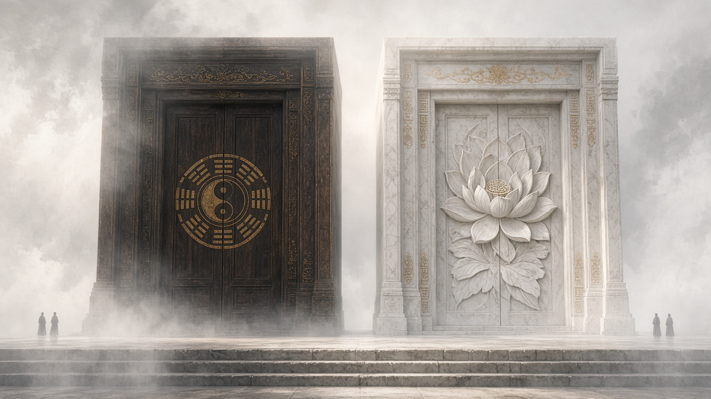
這是讓玩家先分清楚哪些宗教日常兩館都能做、哪些做法只屬於道觀或佛廟的入口；例如跪拜、念經、祈福與上香兩邊都有，但八字與易經只在道觀，求籤、占察與因果只在佛廟。
只做一個館別選擇頁、一張共同儀式卡，以及兩館都有的跪拜與念經；點選後播放一段動作與音效、顯示完成字卡。暫不做八字、易經、其餘專屬項目與完整儀式內容，館別規則先以文字標清楚。
先讓玩家一眼看懂兩館共同處與館別差異，避免把念經誤認為佛廟專屬，也避免在錯誤館別得到誤導結果。保留八字、易經給道觀，保留求籤、占察、因果給佛廟，並讓經目隨場景更換；否掉兩館混成一套不分館別的做法，以及用宗教效果保證玩家願望會實現的說法。
| 項目 | 值 | 備註 |
|---|---|---|
| 共同儀式種類 | 9 種，包含跪拜、念經、祈福、天燈、上香、傾訴、還願、抄經、撞鐘 | |
| 道觀專屬項目 | 2 種，包含八字、易經 | |
| 佛廟專屬項目 | 3 種，包含求籤、占察、因果 | |
| 緣塵產出 | 依 獲取表逐項（祈福 +6／念經段 +8／跪拜 +1＋0.5／冥想 +12 每 5 分／抄經 +36／參拜 +12／撞鐘 +2／受齋 +8／放生 +8；上香與天燈是花費不是收入） | |
| 儀式選擇頁停留 | 5 秒 | 工程 |
| 單次儀式總時長 | 30–38 秒；單項操作 18 秒 | 工程 |
| 每日可完成次數／重複操作冷卻 | 依 冷卻架構 | 見 A1 冷卻與產出架構 |
| 規格範圍 | – 全部進規格、不分首發／第二季 |
走到香案前點一支香，插好後短確認「已上」。日常上香是花費（小／中／大＝15／45／120 塵，L1，Q72），不是收入；
法會裡的上香另給 +8 塵（Q72 法會條）。
只保留走到香案、點燃一支香、插進香爐、顯示「已上」。MVP 用免費單一香（不扣塵、不產塵）；香品分檔、法會 +8 與餘額不足提示後開。
| 項目 | 值 |
|---|---|
| 小／中／大香 | 15 / 45 / 120 塵（L1） |
| 單次產出 | +8 塵 |
上香保留為玩家能親手完成的獨立動作，不被祈福、八字或法會吸收，這樣每次付出都有直接回饋，也能清楚算入 8 塵。淘汰方案包括只顯示祈福結果、把上香做成自動彈窗，以及讓法會接管並直接計算同一支香；前兩者缺少親手完成的踏實感，第三者仍留下一次香如何計數的歧義。
| 項目 | 值 | 備註 |
|---|---|---|
| 小／中／大香花費 | 15／45／120 塵 | |
| 日常上香產出 | 0 塵 | 花費型；資料未提供日常上香收入 |
| 法會內上香 | +8 塵 | |
| 可選香檔數 | 3 檔 | |
| 完整操作時長 | 11 秒 | 工程 |
| 每次進入可完成次數 | 1 次 | 工程 |
| 重複操作冷卻 | 依 冷卻架構 | 見 A1 冷卻與產出架構 |
玩家到廟裡向外求的神佛許願，求的是保佑；許完願就走，不會拿到成功結果，也不會被算命解讀。
只保留文字許願、童子合掌點頭讓路、+6 塵與自動寫入顯化日記；語音、上香、獻供及收費全部先拿掉，但仍能從入口完成一次祈福。
| 項目 | 值 |
|---|---|
| 產出 | +6 塵 |
祈福是外求，所以只讓玩家把願望交給神佛，並以童子無聲回應表示已聽見；不提供成功條，避免把祈禱做成保證結果的按鈕。被否掉的是成功率、失敗懲罰、成功動畫、神佛語音許願、八字解讀與命中後才給獎勵；採用固定 +6 塵與自動記入顯化日記，讓玩家留下行動痕跡，但看不到願望是否實現。
| 項目 | 值 | 備註 |
|---|---|---|
| 產出 | +6 塵／次 | 工程 |
| 祈福流程 | 23 秒／次 | 工程 |
| 語音許願 | 最多 15 秒／次 | 工程 |
| 文字許願 | 最多 100 字／次 | 工程 |
| 單品定價 | 依 級距 | 未列單品由營運在級距內定價 |
| 資源上限 | 依 冷卻架構 | 見 A1 冷卻與產出架構 |
| 連續失敗上限 | 依 冷卻架構 | 見 A1 冷卻與產出架構 |
選一部經，跟著念或自己念，念完才算一次。它把「念經」從背景音變成一件事：有開始、有結束、有紀錄——這也是日常回訪裡最安靜、最不需要獎勵的那一格。
只做選一部經、選跟誦或自念、逐段顯示、按下完成、離開可接續、結束後顯示總段數與 +8 塵／段
| 項目 | 值 |
|---|---|
| 產出 | +8 塵／段 |
採用「選經 → 跟誦／自念 → 結束得進度」是為了讓玩家無論有人帶或自己靜下來，都能立刻開始，並用每段 +8 塵與可接續紀錄留下看得見的成果；否掉依八字挑經、念經時解讀命理，以及一開始就要求固定經目與複雜儀式的方向。
有所求的拜：為誰、為什麼、拜幾次，逐拜計數；每次祈禱都能累積緣塵，並可把心願記進自己的顯化日記。
最小可用版只有一個祈求目標、一個次數目標、逐拜加 1 計數、依目前檔位發放 +1 或 +0.5 緣塵，以及完成後存入私密顯化日記；先不開放提醒、自訂分段、卡牌解鎖與願望牆分享。
| 項目 | 值 |
|---|---|
| 產出 | +1 / +0.5 塵（按檔） |
保留明確祈求、逐拜計數與雙軌緣塵，是為了讓玩家知道每一拜都有進度，也讓不同資源檔位的玩家都能持續累積；心願只進私密顯化日記，是因為願望牆不應暴露真實祈求。跪拜與冥想分開，避免玩家把兩種行為混成同一件事。被否掉的方向是：無目標連續點擊、以完成冥想取代逐拜計數、未設上限的無限次數，以及把私人心願直接放進願望牆。
| 項目 | 值 | 備註 |
|---|---|---|
| 每次產出 | +1 緣塵；低檔位 +0.5 緣塵 | |
| 次數目標 | 可自訂，源文例值 2000–5000 次 | |
| 預設次數目標 | 100 次 | 工程 |
| 單次跪拜時長 | 10 秒 | 工程 |
| 時長與節奏 | 依 區間制 | 工程；見 A1 冷卻與產出架構 |
| 防肝上限 | 依 冷卻架構 | 見 A1 冷卻與產出架構 |
| 顯化日記保存期限與查看上限 | 依 冷卻架構 | 見 A1 冷卻與產出架構 |
坐下來什麼也不求，只讓白噪音陪著玩家計時；玩家說出或點選要做的事後，聲音、畫面與經文才隨功能出現。
只做固定時長的無所求坐、白噪音、倒數、語音或按鈕選單一功能，以及每 5 分鐘 12 塵的結算；先不做出場引導、動態經文、分段獎金、節點疊加與多種功能。
| 項目 | 值 |
|---|---|
| 產出 | +12 塵／5 分鐘 |
先保留無所求、只計時的核心，避免剛坐下就被引導或要求；功能由玩家說出或點選後才展開，讓聲音與畫面服務當下選擇。被否掉的是進場直接播放經文或教學、固定連續功能流程，以及未計時就發放獎金。
寫一個願，放一盞燈上去。它給的是一次「把話送出去」的儀式感，不是許願池：燈會飄走，畫面會記得，但不會給你數值。
只做三種紙材、語音或文字擇一、一次放燈動畫、願望存入顯化日記與卡角燈印；先不做語音轉文字、分享、連續燈串或額外裝飾。
| 項目 | 值 |
|---|---|
| 素紙／金邊／考季 | 30 / 90 / 240 塵（L1） |
願望內容完全由玩家提供，天燈只承接、呈現與保存，不加入命理判讀或吉凶解讀；兩館共用同一套放燈與日記連結，避免做成兩種儀式。先淘汰八字的自動串聯、求籤式解籤提示、AI 擅自改寫願望，以及放燈後無法找回內容的純裝飾方案。
| 項目 | 值 | 備註 |
|---|---|---|
| 素紙價格 | 30 塵 | L1 |
| 金邊紙價格 | 90 塵 | L1 |
| 考季紙價格 | 240 塵 | L1 |
| 文字願望長度上限 | 依 冷卻架構 | 見 A1 冷卻與產出架構 |
| 語音願望長度上限 | 依 冷卻架構 | 見 A1 冷卻與產出架構 |
| 每次放燈動畫時長 | 8 秒 | 工程 |
| 完整操作目標時長 | 30 秒 | 工程 |
| 每日免費放燈次數 | 依 冷卻架構 | 見 A1 冷卻與產出架構 |
跟 F01-08 是同一件事的兩次現身：進場時自動淨手，之後想再淨一次也可以。放在日常清單裡，是為了讓「乾淨」變成可重複的動作，而不是只有第一次才有的特效。
保留自動進場、雙手雙腳沖洗動畫、水聲、乾淨字卡與 0 塵消耗；先不做泡沫材質變化、姿勢切換、可愛角色反應或連續提示，約 6 秒內完成即可。
淨手淨腳是每次進場都應自然完成的免費前置，不讓玩家多點一步，也不跟資源與任務綁住；因此否掉手動清潔、進場前選單、付費解鎖，以及只在新場景首次進入時才播放的方向。
| 項目 | 值 | 備註 |
|---|---|---|
| 價格 | 0 塵 | |
| 產出 | 每次進場淨手淨腳 1 次 | 工程 |
| 額外消耗 | 0 塵、0 卡、0 道具 | |
| 流程時長 | 6 秒 | 工程 |
| 每日自動觸發次數 | 隨進場次數，不另設上限 | 工程 |
| 離場重試 | 0 塵，不計失敗 |
童子用撒嬌的語氣請玩家一座一座拜神像，玩家可參加，也可婉拒；拜完可得到 12 塵。
只保留一座神像、一句童子邀請、拜與拒絕兩個按鈕、一次約 2 秒的雙手合十動畫，以及完成後發放 12 塵；其餘多座續拜、名單順序與中途續接先不做。
| 項目 | 值 |
|---|---|
| 產出 | +12 塵 |
用童子的戲劇化口吻增加親近感，也照到現實中可依願望選擇參拜多尊神像的習慣；拒絕不扣資源，讓玩家保有自選權。被否掉的是連續自動播放全部神像、拜完才能離開，以及把強迫儀式做成失敗懲罰。
| 項目 | 值 | 備註 |
|---|---|---|
| 產出 | 12 塵 | |
| 任務解鎖日 | 第 3 天〔提案，來源未定〕 | |
| 每次參拜 | 1 座神像 | 工程 |
| 單座拜訪時長 | 約 2 秒；逐座操作：每座約 4 秒 | 工程 |
| 完整邀請提示 | 約 3 秒 | 工程 |
| 可中途離開 | 是；重複進入：沿用進度，不重複發放同一份產出 |
鐘聲對齊現實的晨昏，法會的一百零八響由法師主敲。它讓廟有「時間感」：你什麼時候來，聽到的聲音不一樣——這是低成本、高記憶點的一招。
只做各廟設定的晨鐘、暮鐘兩個入口、一次敲鐘動畫、鐘聲、開放時段判定與 +2 塵；法會先保留由法師主敲一百零八響的觀看流程，不做玩家代敲、不做自訂鐘聲。
| 項目 | 值 |
|---|---|
| 產出 | +2 塵 |
晨鐘與暮鐘直接對齊現實時段，玩家不用猜何時該做；法會的一百零八響保留主次關係，由法師主敲，避免多人同敲造成儀式失焦。被否掉的是讓玩家自行敲滿一百零八響、平時固定無時段限制，以及用額外塵或道具取代鐘聲的做法。
玩家先聽線上誦經音訊，再照著在現實紙上寫經，完成後拍照上傳，留下一次看得見的修練紀錄。
只做線上誦經音訊、現實書寫提示、相機拍照與單張照片上傳；刪除經文搜尋、分享、連續挑戰、排行榜、卡包與自訂內容。音訊可循環，完成後產出 36 塵，上傳失敗可重試。
| 項目 | 值 |
|---|---|
| 產出 | +36 塵 |
採用線上音訊引導加現實手寫，因為這樣能同時聽、寫、拍照留痕，並直接對應玩家親手完成的感受。否掉方向：只聽音訊的念經流程，因為無法留下書寫證據；純數位打字或手寫辨識，因為不能保留玩家現實寫下的樣子；先做分享、排行與卡包連動，因為核心動作與防重複計分尚未確認。
| 項目 | 值 | 備註 |
|---|---|---|
| 產出 | 36 塵 | |
| 引導音訊時長 | 70 秒 | 工程 |
| 書寫提示時長 | 135 秒 | 工程 |
| 完整流程目標時長 | 240 秒 | 工程 |
| 每日可完成次數 | 依 冷卻架構 | 見 A1 冷卻與產出架構 |
| 拍照上傳數量 | 1 張 | 工程 |
| 照片大小上限 | 依 冷卻架構 | 見 A1 冷卻與產出架構 |
法會後的齋飯，想去就去、不去也沒事。它是「不強迫的社交」：不打分、不排行，只給一張桌子跟一碗飯，讓玩家自己決定要不要坐下來。
法事完成後顯示一次可跳過的邀請；玩家可去齋堂、看見一桌熱食並按「用齋飯」，結算 +8 塵，也可按「留在原處」直接離開。保留中途中離開、重複進入不重複結算；多桌飯菜、限時座位與自選菜色全部不進 MVP。
法事完成後顯示一次可跳過的邀請；玩家可去齋堂、看見一桌熱食並按「用齋飯」，結算 +8 塵，也可按「留在原處」直接離開。保留中途中離開、重複進入不重複結算；多桌飯菜、限時座位與自選菜色全部不進 MVP。
| 項目 | 值 |
|---|---|
| 產出 | +8 塵 |
核心是給玩家一次沒負擔的飯後選擇，所以保留邀請、去與不去都立即結束、不設價格與懲罰。被否掉的是強制參加、答應後若不去就扣資源，以及用倒數或稀有獎勵逼玩家留下；這些做法會讓「想去就去」變成另一種任務壓力。
主動給、不求回報，廟裡不勸募。它真正的用途是讓「付出」有一個不牽涉抽獎的出口：給了就是給了，不換算成機率或折扣。
只保留一個布施頁、三種供品與一種接收者；玩家可選物品、確認送出、看到交付動畫與一次短謝，不做募集、回報、排行榜或連續任務。
布施的界線是玩家主動給、廟裡不勸募，所以只保留挑物品、選對象、送出與一次短謝。被否掉的方向是勸募文案、公共募款、到廟打卡換獎勵、施恩式署名、排行榜與完成後索取回報。
參加廟裡的放生活動，放的是魚、鳥這些生靈，不是道具。它把「做一件好事」變成可以看見的畫面，而不是清單上打一個勾。
只保留一個放生入口、一份固定物種清單、確認參加、完成結算與 +8 塵；多人活動、時段選擇、物種擴充都不進 MVP。
| 項目 | 值 |
|---|---|
| 產出 | +8 塵 |
先用一場簡單的參加活動讓玩家實際放下物品，得到固定 8 塵與整理內心的感受；被否掉的是一開始就加入複雜排程、多人活動、自由選物與自訂獎勵的方向，先確保參加、放生、結算能完整發生。
道觀算八字、佛廟求籤，兩館各有一套深度解惑。
我在道觀口述生辰，滾輪微調，師父用語音講日主和格局，條子上慢慢浮出摘要；我確認後拿著條子去上香。
邊界：—
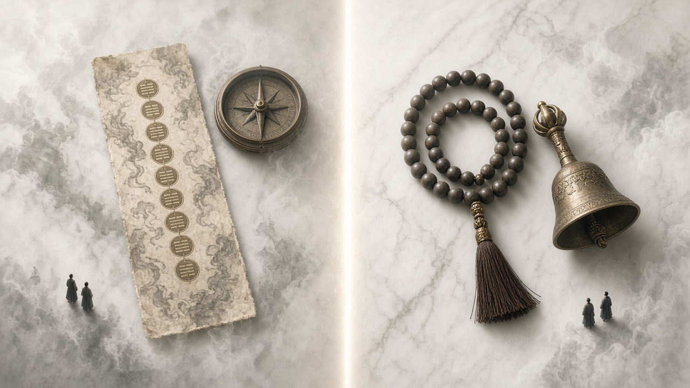
依玩家目前所在的信仰場景，區分哪些解讀可做、哪些不可做，並直接帶入相應的解讀服務。
只做分界畫面、依當前場景開啟既有解讀服務、清楚擋下不適用服務，以及發放結果卡；不做推薦排序、跨館跳轉、比較兩種信仰或自訂組合。
先畫清誰有什麼、誰沒有什麼，可避免玩家在佛廟看到八字或易經，也避免把通用動作誤當成跨館服務。淘汰的方向是：佛廟加入八字或易經、道觀加入佛廟專屬解籤，以及從任一場景直接跨到另一信仰場景。
玩家把出生日期與時間口述給道觀，由師父依八字說出與他此刻相關的提醒，最後拿著一張摘要條子去上香。
只保留語音口述、固定出生資料滾輪、師父錄音式解讀、摘要字卡、確認與一張條子；先不接法會、不做多師父語氣、不做線上客服，也不要求上香回寫。
先讓玩家把生辰說出口，再用滾輪確認，才由師父給出回應，可降低口述誤字的風險，也保留面對面的信任感。被否掉的是先填表再播音、一次輸入無法校正、確認後插入其他功能，以及讓法會直接擁有八字流程。
| 項目 | 值 | 備註 |
|---|---|---|
| 主流程建議時長 | 90 秒 | 工程 |
| 語音口述建議上限 | 30 秒 | 工程 |
| 出生資料可調欄位 | 4 項 | |
| 滾輪每格切換間隔 | 不低於 0.3 秒 | 工程 |
| 解讀語音建議長度 | 30 秒 | 工程 |
| 解讀摘要建議字數 | 80 字以內 | |
| 摘要條子產出 | 1 張 | 工程 |
| 上香次數上限 | 1 次 | 工程 |
| 主流程中途離開次數上限 | 1 次 | 工程 |
這是一張實體風格的紙條，玩家在上面看自己的八字精簡解讀，以及一句《易經》提醒，結束後可把定稿保存。
只做一張可展開的紙條：四柱立即固定顯示、兩段八字精簡摘要逐段顯墨、最後落下一句《易經》提醒與定稿提示。取消暫停續讀、多種摺法、紙條自訂與未完成紙條上香；保存到香錄先保留入口，若技術或保存規則尚未確認則不開放此按鈕。
只做一張可展開的紙條：四柱立即固定顯示、兩段八字精簡摘要逐段顯墨、最後落下一句《易經》提醒與定稿提示。取消暫停續讀、多種摺法、紙條自訂與未完成紙條上香；保存到香錄先保留入口，若技術或保存規則尚未確認則不開放此按鈕。
| 項目 | 值 |
|---|---|
| 結構 | 四柱（固定）＋精簡摘要（漸顯）＋易經一句 |
四柱先固定，能讓玩家在閱讀時有一個不亂動的底；摘要慢慢顯墨，則把原本一次看完的結果改成有節奏的閱讀經驗，貼近實體紙條攤開的感覺。第一版只放八字精簡層與一句《易經》，可避免內容過滿；七層全文、紫微與六維暫不放入。被否掉的方向是開頭直接顯示完整長文、讓紙條反覆改寫四柱，以及在解讀未確認前允許持條上香。
| 項目 | 值 | 備註 |
|---|---|---|
| 紙條總長 | 35 秒 | 工程 |
| 四柱顯示時間 | 0–5 秒，入口打開後立即顯示 | 工程 |
| 摘要段數 | 2 段 | |
| 摘要顯墨時間 | 第 1 段 5–15 秒，第 2 段 15–25 秒 | 工程 |
| 《易經》短句 | 1 句 | |
| 保存上限 | 依 冷卻架構 | 見 A1 冷卻與產出架構 |
| 每次進入可重讀次數 | 依 冷卻架構 | 見 A1 冷卻與產出架構 |
| 本版內容層數 | 八字精簡層加易經一句，不含七層全文、紫微、六維 | 工程 |
易經只給一句，掛在條子上，不展開、不解釋成一套理論。這是刻意的克制：一句話記得住，也留得住「我自己想的」空間。
只保留三張固定竹板、選一句、貼到八字條子、重新查看與返回；不做推薦、分享、抽籤或更換句子。
易經一句的來源是 Q42：條子＝八字精簡層＋易經精簡一句；不是獨立服務，也沒有自己的場館（Q41：易經僅道觀）。候選句的「選源」在主梳理仍列 Open；數量與秒數是提案值。
| 項目 | 值 | 備註 |
|---|---|---|
| 三板數量 | 3 張 | 工程 |
| 候選句數 | 每板 1 句 | |
| 選擇時間 | 8 秒 | 工程 |
| 落字動畫 | 4 秒 | 工程 |
| 停留上限 | 15 秒 | 工程 |
| 可重選次數 | 3 次 | 工程 |
| 每次重選冷卻 | 2 秒 | 工程 |
抽一支籤，聽師父用佛家因果講白話，幫玩家把眼前的煩惱拆成能採取的行動，不談命盤。
只做香案入口、合十一次、抽一支籤、顯示固定籤號、播放一段師父因果白話、收下籤枝與字卡，以及返回寺廟；先不做自訂籤庫、不做占察、不做付費，也不做上香。
先用固定的求籤流程與一支籤就能驗證玩家是否看得懂、聽得懂並願意照著做，因此不做自訂籤、占察、付費與多角色解讀。淘汰的方向包括命盤式分析、易經式斷卦、一次抽多支、抽籤前付費，以及讓上香成為完成求籤的必要條件；這些做法會把注意力從眼前的因果與行動拉走，也增加前期負擔。
| 項目 | 值 | 備註 |
|---|---|---|
| 合十儀軌時長 | 3–6 秒 | 工程 |
| 抽籤動作時長 | 2–5 秒 | 工程 |
| 揭號時長 | 2–4 秒 | 工程 |
| 師父開示時長 | 8–15 秒 | 工程 |
| 收籤時長 | 3–5 秒 | 工程 |
| 上香動作時長 | 6–10 秒 | 工程 |
| 完整流程時長 | 19–33 秒，未上香時為 19–33 秒；上香另加 6–10 秒 | 工程 |
| 籤號產生方式 | 抽籤規則：每次抽一支、重複點按不重新抽；「籤庫最小可行」在主梳理仍列 Open，抽取規則為 | 工程 |
| 連續失敗處理 | 最多重試 2 次，第三次改為顯示固定白話提示並保留原入口。 | 工程 |
| 前期可取得籤枝上限 | 依 冷卻架構 | 見 A1 冷卻與產出架構 |
| 單品定價 | 依 級距 | 未列單品由營運在級距內定價 |
一張另開的紫微斗數進階解讀條子，專門回答玩家在八字或易經之外，想知道自己的性格、感情與人生走向時會問的問題。
只保留側欄灰圖示、二選一解鎖條件、獨立條子、十四顆主星逐點閱讀與收藏；先不做聲音動畫、主題整理、自由追問、同步分享與推薦入口。
採用獨立條子，是為了讓玩家清楚辨認三種解讀方式，也保留八字與易經原先的使用習慣；灰顯入口則先讓玩家看見可能，再透過實際使用或親密度累積決定是否開啟。被否掉的方向包括把紫微斗數併入同一張綜合紙條、未完成八字或易經就直接解鎖，以及一次解鎖後直接展示全部十四主星而沒有逐點閱讀。
| 項目 | 值 | 備註 |
|---|---|---|
| 解鎖條件 | ① 做過一次八字＋易經解讀 ② 廟方親密度印章到 20 | |
| 入口 | 前期道觀側欄「進階命盤」灰顯 | |
| 條子 | 解鎖後另開一張紫微條子，不與八字／易經混在同一張 | |
| 主星數量 | 14 顆 | 十四主星 Lattice |
| 單顆主星閱讀時長 | 8 秒 | 工程 |
| 完整瀏覽建議時長 | 35 秒；條子開啟動畫 5 秒 | 工程 |
| 收藏上限 | 1 張條子 | 工程 |
| 時期 | 後期 |
玩家在佛廟進入後期後，用另一套問法再次查看自己的下一步，而不是重新開始前面的流程。
只保留一個入口、一段靜態後期畫面、一個返回按鈕與一句佛廟後期提示；不做骨架拖動、互動、獎勵、分享或進度判定。
後期需要能被清楚看見，卻不能假裝整體骨架已有答案，因此只呈現前期完成與骨架未開。否掉的方向是直接開放完整骨架、提前發獎勵，以及用後期流程取代原本的整體設計。
解讀本身不收費、也不會因為付錢變準（Q74 永久原則）。法會裡的「求解讀」模式只在道觀，呼叫同一套八字解讀，完成給 +20 塵（Q56／Q72）。
只保留願望卡、免費解讀、童子現身、20 秒文字結果與 +20 塵入帳；砍掉自訂問題、分享、比較方案、重複觀看以外的進階選項。
| 項目 | 值 |
|---|---|
| 法會呼叫解讀 | +20 塵 |
| 條子 | 首版免費 |
Q74 鎖「付錢≠更準」；Q56 鎖求解讀只在道觀並複用八字解讀；Q72 給 +20 塵。原頁把「+20 塵」誤讀成「解讀流程 20 秒」，該數字在來源零命中，已刪。
十位師父，用行為規格寫成的角色；能聽、能記、有界線，並且知道什麼時候把玩家交給真人。
我坐在長凳上講了半小時，它記得我怕冷、記得我上次面試沒上；它沒有替我下決定，但讓我自己說出來了。
邊界：傾訴的擁有者是 F04；記憶的資料結構由 F18-02 定義、F04 只寫不存。伴靈（F05）讀同一份記憶的『情緒／人物』兩類，但不得引用事件細節。
傾訴是全域主功能：玩家不需要先選「我要問感情還是問工作」，直接在廟埕、籤詩頁、日記頁開口就會進到對話。
第一輪回覆只做兩件事——把聽到的重述一次、問一個更具體的問題；第二輪才可能給觀點。這是為了避免「一開口就被開藥方」，也是十位師父人設能被感受到的地方。
傾訴是全域主功能：玩家不需要先選「我要問感情還是問工作」，直接在廟埕、籤詩頁、日記頁開口就會進到對話。
第一輪回覆只做兩件事——把聽到的重述一次、問一個更具體的問題；第二輪才可能給觀點。這是為了避免「一開口就被開藥方」，也是十位師父人設能被感受到的地方。
先做文字單輪＋重述，不開語音、不開建議。
大多數 AI 陪伴死在第一句就給建議。先重述再問，是十位師父能被分辨的關鍵，也讓後面的人設與付費設計有立足點。
十位師父先把服務定義清楚，再談性格：
性格是服務的執行方式：同樣是聽你說話，接情緒與給取捨，交付物完全不同。沒有服務名的角色不上線。
十位師父先把服務定義清楚，再談性格：
性格是服務的執行方式：同樣是聽你說話，接情緒與給取捨，交付物完全不同。沒有服務名的角色不上線。
先完成慧明、墨玄、流火、淨行四位（四種最不同的服務型態）。
玩家問的第一句是「這個人能幫我做什麼」。答不出服務名，人設就只是空殼。
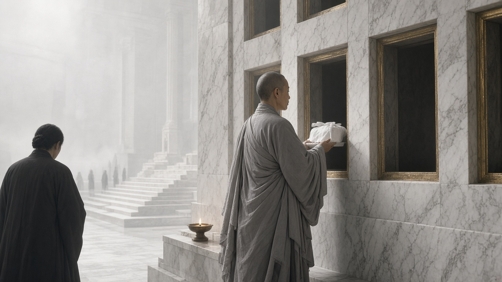
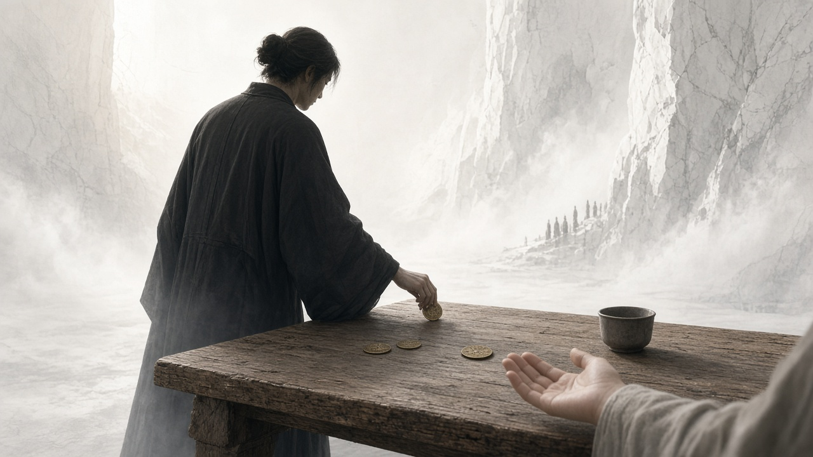
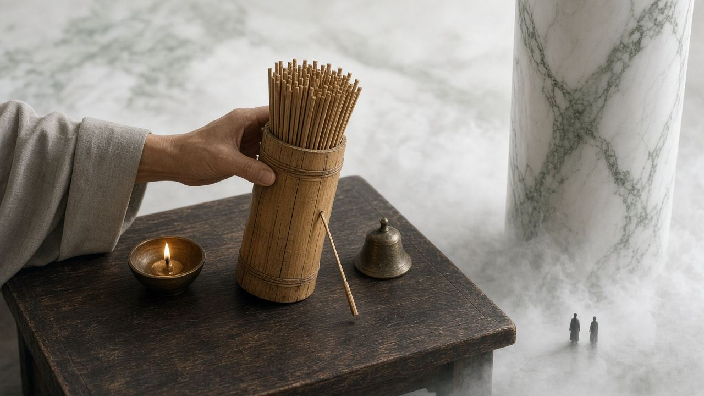
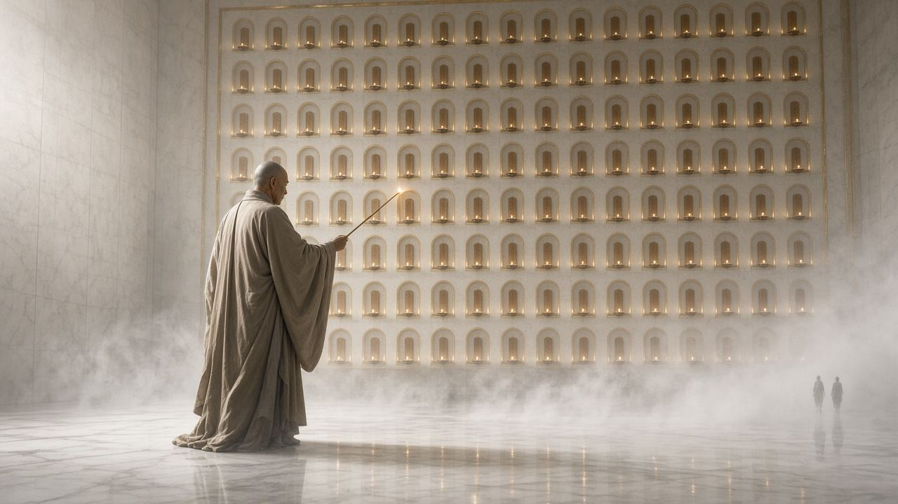
| 角色 | 服務 | 價格 | 場景 | 對應商品 |
|---|---|---|---|---|
| 慧明 佛 | 早晚課誦經 · 經文白話解說 · 代誦迴向 | 訂閱 US$4.9／月；代誦 US$19／部；年燈 US$190 | 大殿主法位、直播回看頁、代誦訂單卡 | 光明燈（年）經冊（裝幀）香（盒裝）香（數位，三尺寸）經冊裝幀（三款） |
| 明鏡 佛 | 一日一籤 · 籤詩白話 · 深解追問 | 每日 1 次免費；深解 US$2.9／次（15 分鐘） | 籤筒桌、籤詩卡、每日簽到 | 香（盒裝）香錄封皮（三款） |
| 澄淵 佛 | 百日對年提醒 · 超薦法會報名 · 悲傷陪伴 | 提醒免費；法會席位 US$29–79；陪伴訂閱 US$4.9／月 | 功德堂、紀念頁、提醒卡 | 光明燈（年）燭（一對）燭（數位） |
| 笑石 佛 | 每日一則笑談 · 一句話點破 · 直播留言回覆 | 內容免費；收藏卡 US$1.9；直播打賞 | 短影音牆、直播間、留言板 | 經文紙膠帶日記封面（四款） |
| 淨行 佛 | 新手引路 · 每日任務頒布 · 活動與法會報名 | 免費（引路不收錢） | 山門、任務卡、公告欄 | 小神轎吊飾燈籠（廊下） |
| 角色 | 服務 | 價格 | 場景 | 對應商品 |
|---|---|---|---|---|
| 墨玄 道 | 生辰命盤 · 陽宅堪輿 · 流年方位 · 開工擇日 | 命盤 US$19；方位圖 US$29；流年 US$19／年；擇日 US$9／次 | 羅盤桌、方位圖頁、擇日卡 | 五帝錢八卦鏡（裝飾）文昌筆香爐樣式（三款） |
| 流火 道 | 失戀急救 · 每日打卡 · 情緒陪讀 | 訂閱 US$6.9／月（含每日打卡＋每週一次 30 分鐘深談）；額外深談 US$12／30 分鐘 | 道觀石鎖旁、打卡卡、深談室 | 念珠手串遶境毛巾佛珠手串 |
| 夜巡 道 | 深夜陪坐 · 三日作息 · 平安物 | 陪坐免費；平安符 US$9；年燈 US$190 | 山門夜景、深夜對話、平安符 | 平安符（布面刺繡）鹽燈（小）平安符（角色配戴） |
| 桃煙 道 | 對話腳本 · 送禮建議 · 演練 | 腳本免費；演練 US$3.9／次（20 分鐘） | 茶桌、腳本卡、演練室 | 香囊（檀香填充）廟方聯名御守香囊（腰側） |
| 寒星 道 | 一次一問 · 兩句話結論 · 代價清單 | 每日 1 問免費；深問 US$4.9（含三個理由） | 空桌、三枚銅錢、深問卡 | 經冊（裝幀）刺繡吊牌（可客製）銅鈴（腰間）經冊裝幀（三款） |
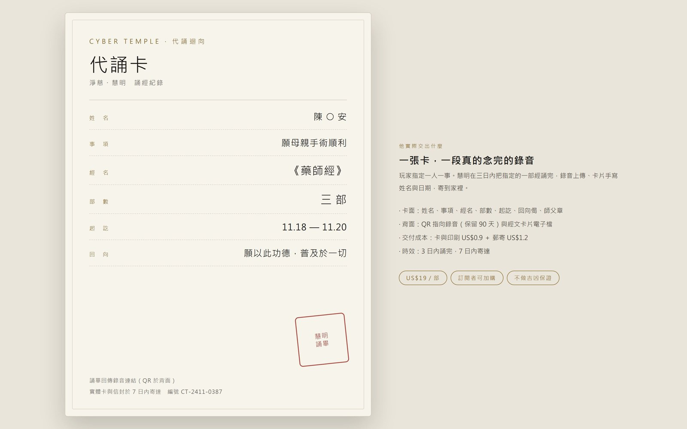
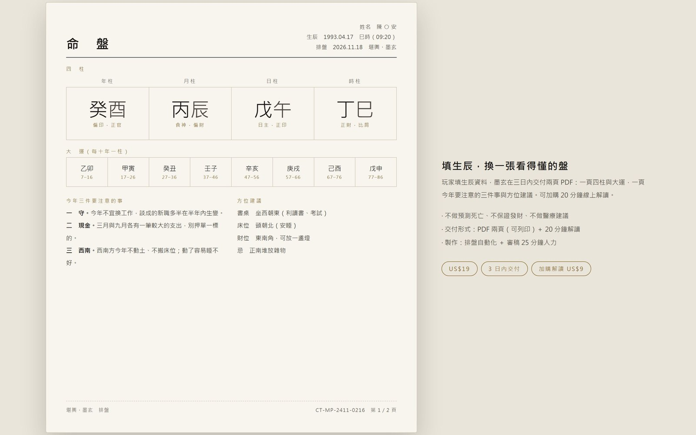
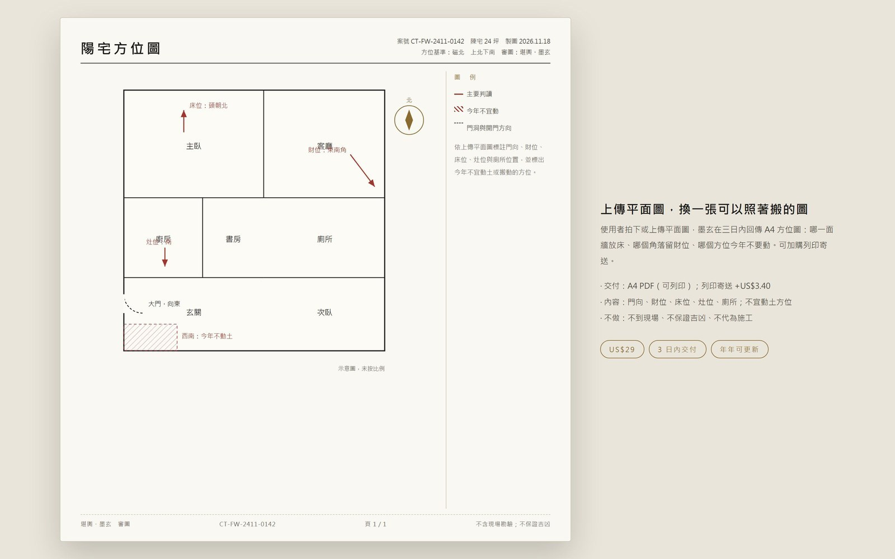
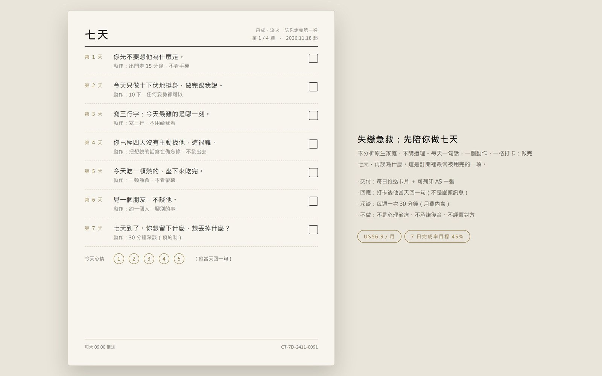
| 交付形式 | 實體卡（A6）＋信封，附錄音私連結 |
| 內容欄位 | 姓名／指定事項（一人一事）／經名與部數／完成日期／師父簽名章 |
| 製作成本 | 卡與印刷 US$0.9、郵寄 US$1.2（合 US$2.1） |
| 時效 | 3 日內誦完，7 日內寄達 |
| 對應服務 | 慧明 · 代誦迴向（訂閱者可加購） |
| 不做什麼 | 不斷吉凶、不代求特定結果、不附個人化解釋 |
| 交付形式 | PDF 兩頁（可列印）＋ 20 分鐘線上解讀 |
| 內容欄位 | 四柱、大運、今年三件要注意的事、方位建議、宜忌清單 |
| 製作成本 | 排盤自動化＋審稿 25 分鐘人力 |
| 時效 | 3 日內交付 |
| 對應服務 | 墨玄 · 生辰命盤 |
| 不做什麼 | 不預測死亡、不保證發財、不做醫療建議 |
| 交付形式 | A4 方位圖 PDF；可加購列印寄送 |
| 內容欄位 | 門向、財位、床位、灶位、廁所位置；今年不宜動的方位以紅線標出 |
| 製作成本 | 審圖 30 分鐘；列印與郵寄 US$3.4 |
| 時效 | 3 日內交付 |
| 對應服務 | 墨玄 · 陽宅堪輿 |
| 不做什麼 | 不到現場、不保證吉凶、不代為施工 |
| 交付形式 | 手機卡片（每日推送）＋可列印 A5 一張 |
| 內容欄位 | 七天各一句話＋一個動作、心情 1–5、打卡格 |
| 製作成本 | 模板一次性；每日推送 AI 成本低於 US$0.01 |
| 時效 | 訂閱後即開，當天第一則 |
| 對應服務 | 流火 · 失戀急救（訂閱內含） |
| 不做什麼 | 不是心理治療、不承諾復合、不評價對方 |
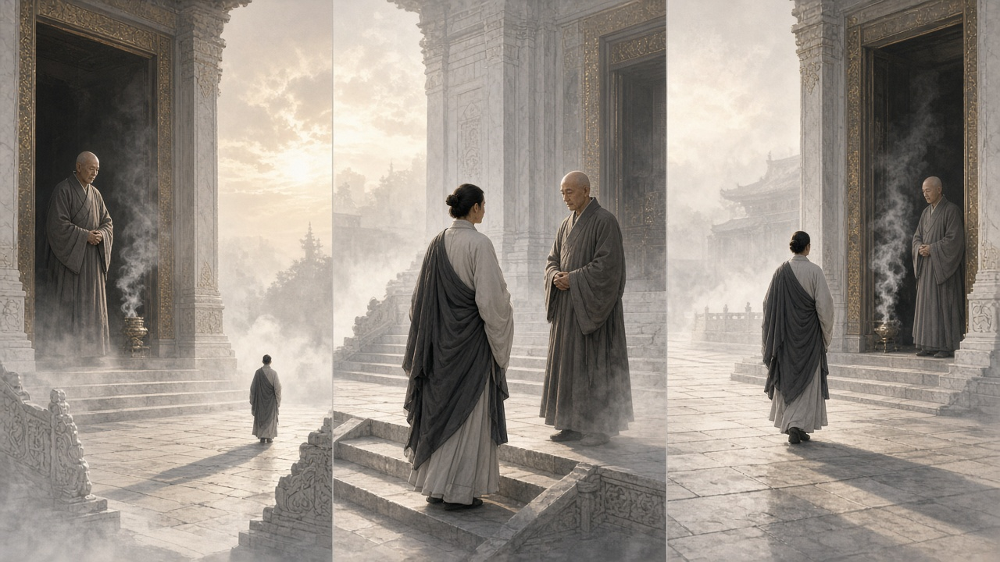
關係四階段：
每階條件明確，玩家看得到進度。
關係四階段：
每階條件明確，玩家看得到進度。
先做初見→熟客一階，驗證稱謂與記憶是否被感知。
陪伴產品沒有進度條就會膩。四階段把抽象的「感情」變成看得見的解鎖，也給付費一個正當位置：買時間與席位，不買關係等級。
記憶分三層：
師父回覆前先查禁區、再查偏好、最後引用事件；三層在同一個檔案，不開第三本筆記本。
記憶分三層：
師父回覆前先查禁區、再查偏好、最後引用事件；三層在同一個檔案，不開第三本筆記本。
先做禁區層與手動刪除，事件層用摘要。
陪伴產品最常犯的錯是把所有話都記住還全部背出來。三層分開，記得準、忘得對，禁區也不會被下一次閒聊踩到。
語氣規格化成四欄，對應不同服務：
共通：不用驚嘆號、不用「建議您」、一次只講一件事、不列點。
語氣規格化成四欄，對應不同服務：
共通：不用驚嘆號、不用「建議您」、一次只講一件事、不列點。
先寫慧明、寒星兩位參數並完成 20 句配音測試。
「溫暖、慈悲」寫在文件裡沒人能執行。句長、稱謂、留白、口頭禪四欄一填，編劇與配音都能照做，十個角色才不會變成同一個聲音。
劃線三層：
佛道用語也要分家：佛教不用「點光明燈招財」這種混用說法，道教不說「業障」這種佛教詞。上線前由外部宗教顧問逐條審，台詞庫標「出處 / 爭議等級」。
劃線三層：
佛道用語也要分家：佛教不用「點光明燈招財」這種混用說法，道教不說「業障」這種佛教詞。上線前由外部宗教顧問逐條審，台詞庫標「出處 / 爭議等級」。
先做 200 句核心台詞的出處與爭議分級。
這一塊最容易出事，也最難修：一句「祂說你要離職」就能毀掉整個產品的信任。先分三層、再分佛道、再標出處，才能規模化產出台詞。
三級處理：
師父永遠不診斷、不評估風險等級、不代替醫療。
三級處理：
師父永遠不診斷、不評估風險等級、不代替醫療。
先做立即危險一級的切換頁與專線，其餘依顧問建議。
陪伴產品一旦碰上真正的危險，AI 亂給建議就是最大的傷害。把界線寫進流程（停止生成、給號碼、找真人），比寫在守則裡可靠。
十位按商業任務分三組：
每組有自己的內容型態與指標，不互相搶曝光。
十位按商業任務分三組：
每組有自己的內容型態與指標，不互相搶曝光。
先做拉新組三位的短片腳本各 5 支。
十個角色平均用力等於十個都不紅。3-4-3 分工讓資源集中，也讓「陪伴」與「變現」不衝突——不同角色做不同事。
四個真實案例與數字：
日本 VTuber 市場 2024 年度 1,050 億日圓、2025 年預估 1,260 億（+20%），其中週邊佔 55.6%。
四個真實案例與數字：
日本 VTuber 市場 2024 年度 1,050 億日圓、2025 年預估 1,260 億（+20%），其中週邊佔 55.6%。
把四組數字與自家收入結構並排一頁，作為內部對齊用。
談虛擬人最容易被問「這能賺錢嗎」。四個案例加上收入結構，把問題從「能不能」變成「我們補哪一塊」。
三個真實教訓：
三個真實教訓：
上線前跑一次三條紅線檢查表，寫進 SOP。
這個產業的風險不在技術，在治理：對粉絲隱瞞、對平台違規、對團隊不公，任何一項都會讓幾年的經營一夜歸零。三條紅線先寫死，再談創意。
分工三條：
廟方拿到的是「已整理好的名單與紀錄」，不是一堆散亂訊息。
分工三條：
廟方拿到的是「已整理好的名單與紀錄」，不是一堆散亂訊息。
先與一家廟試辦「名單＋紀錄」交接一個月。
這個產品的信任來自廟，不是來自 AI。把真人放在儀式與決定的位置，數字人只做它擅長的陪伴與紀錄，廟方才會願意一起做。
付費三層：
參考市場：小冰的克隆人訂閱月費 6 元與 30 元人民幣兩檔，AI 陪伴類產品月卡多為十幾元、記憶包數十元。我們的定價原則是「買時間與保存」，不買關係等級、不買抽籤結果、不買「師父更喜歡你」。
付費三層：
參考市場：小冰的克隆人訂閱月費 6 元與 30 元人民幣兩檔，AI 陪伴類產品月卡多為十幾元、記憶包數十元。我們的定價原則是「買時間與保存」，不買關係等級、不買抽籤結果、不買「師父更喜歡你」。
先做月訂閱與免費層差異，單次深談第二批。
陪伴產品的定價最怕賣關係。把「買時間」寫死，玩家不會覺得被情緒綁架，長期留存反而更穩。
聲音與形象三件事：
聲音與形象三件事：
先完成慧明、寒星各 500 句真人錄音，其餘 TTS。
聲音決定「是不是同一個人」，標示決定「會不會違法」。兩件事都寫進流程，才敢大規模發內容。
四指標：
兩條紅線：禁區違規 0 次／千次對話；立即危險訊號 100% 觸發轉介。指標每月覆盤，低於門檻先查是「人設」還是「記憶」出問題。
四指標：
兩條紅線：禁區違規 0 次／千次對話；立即危險訊號 100% 觸發轉介。指標每月覆盤，低於門檻先查是「人設」還是「記憶」出問題。
先做重述認可率與禁區違規兩項。
談數字人最容易掉進「像不像人」的爭論。換成四個行為指標與兩條紅線，討論就能回到產品：被聽懂、被記得、願意回來、願意付費。
十張服務卡的固定五欄：
卡上不放「溫暖、慈悲、睿智」，因為這三個詞無法驗收，也無法定價。十位師父之後各有兩頁：一頁服務、一頁說話方式。
先完成十張卡的第一欄與第五欄。
十個角色最怕寫成十段散文。五欄一頁，跨職能才有共同依據，也讓「深入」變成可執行的規格。
十位師父在五個平台上各自經營，把人帶進廟；六方收入（玩家、廟方、工藝師、品牌、平台、集團）構成閉環。
我在抖音刷到慧明掃地，進遊戲發現他記得那支片裡說過的話；一年後我訂閱、買了御守、報了法會，廟方也從名單裡認得我。
邊界：—
這個產品有兩個環：內環是遊戲——玩家進廟、跟師父說話、點燈、買東西；外環是社群——十位師父在抖音、小紅書、YouTube、IG、TikTok 上有自己的帳號，發短片、直播、回答留言。
外環的工作是把人帶進內環，內環的工作是讓人留下來並付費。兩個環用同一份角色卡、同一套台詞規格、同一個世界觀，所以玩家在短片裡看到的師父，進遊戲後是同一個人。
這個產品有兩個環：內環是遊戲——玩家進廟、跟師父說話、點燈、買東西；外環是社群——十位師父在抖音、小紅書、YouTube、IG、TikTok 上有自己的帳號，發短片、直播、回答留言。
外環的工作是把人帶進內環，內環的工作是讓人留下來並付費。兩個環用同一份角色卡、同一套台詞規格、同一個世界觀，所以玩家在短片裡看到的師父，進遊戲後是同一個人。
先在一個平台、三位師父、日更 15 秒短片跑 8 週。
沒有外環，遊戲只能靠買量，成本會壓死毛利；沒有內環，外環來的流量留不住。兩個環一起做，才是可持續的成長。
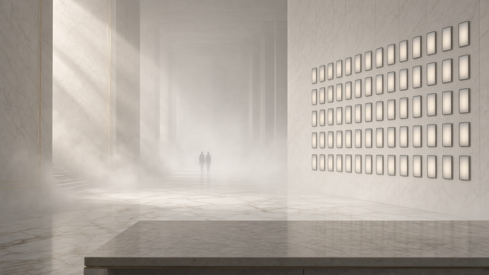
矩陣是三維：
排法是「每位角色主攻 2 個平台、每週 3 支短片＋1 支長片」，直播由拉新組三位輪值。10×2＝20 個帳號組合，但實際運營 10 個主帳號，其餘用一支帳號同步。
矩陣是三維：
排法是「每位角色主攻 2 個平台、每週 3 支短片＋1 支長片」，直播由拉新組三位輪值。10×2＝20 個帳號組合，但實際運營 10 個主帳號，其餘用一支帳號同步。
先跑 1 平台 × 3 角色 × 2 型態（短片＋直播）一個月。
矩陣最容易變成「十個帳號發同一支片」。用三維排程，每個格子都不一樣，平台才會給流量，粉絲也不會覺得被洗版。
五個平台的差異：
同一位師父、同一件事，五個平台五種剪法，不共用同一支片。
五個平台的差異：
同一位師父、同一件事，五個平台五種剪法，不共用同一支片。
先做抖音＋小紅書，兩平台各 3 位師父。
同一支片發五個平台，等於五個平台都不給流量。換五種開場，是把內容成本攤在對的地方。
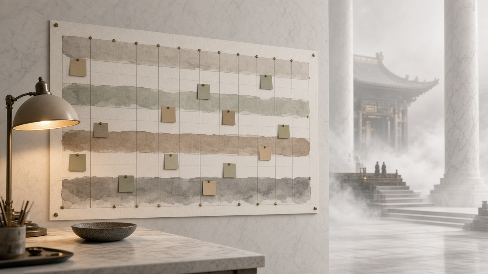
四層節奏：
日曆排定後不臨時插入，除非是突发社會事件（此時只發關懷內容，不推銷）。
四層節奏：
日曆排定後不臨時插入，除非是突发社會事件（此時只發關懷內容，不推銷）。
先排 8 週日曆（56 支短片）與 1 個節慶事件。
內容矩陣失敗多半不是內容不好，是節奏斷了。固定四層節奏，團隊不用每天重新想，觀眾也會養成期待。
一致性的做法：
不一致的代價是玩家一進遊戲就出戲。
一致性的做法：
不一致的代價是玩家一進遊戲就出戲。
先建立角色卡版號欄位與三邊標註。
世界觀不是寫在設定集裡，是靠每一次出現都一樣撐起來的。一張卡、一個版號，是最便宜的一致性工具。
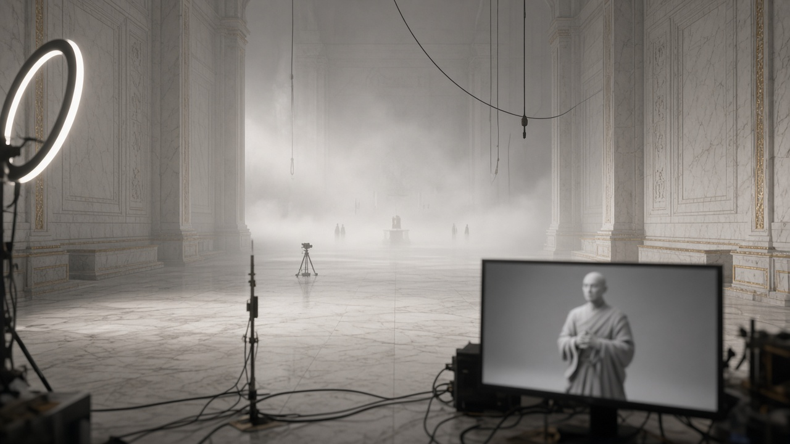
直播分兩種，界線要清楚：
實務上 AI 是補位不是主場：業界實測 AI 主播每小時帶貨約為真人的十分之一（虎嗅），森馬的 AI 虛擬主播首播 4 小時 成交總額 1.2 萬人民幣、點擊率 7.5%；反過來，京東「采銷東哥」數字人首播不到一小時觀看超 2,000 萬、成交額超 5,000 萬人民幣——差別在背後有真實 IP 與真人運營。
直播分兩種，界線要清楚：
實務上 AI 是補位不是主場：業界實測 AI 主播每小時帶貨約為真人的十分之一（虎嗅），森馬的 AI 虛擬主播首播 4 小時 成交總額 1.2 萬人民幣、點擊率 7.5%；反過來，京東「采銷東哥」數字人首播不到一小時觀看超 2,000 萬、成交額超 5,000 萬人民幣——差別在背後有真實 IP 與真人運營。
先做每週 3 場真人驅動直播，深夜不開。
直播是矩陣裡唯一會被平台直接判死的環節。把真人驅動寫進排班與合約，AI 只做補位，帳號才活得久。
六層漏斗與對應設計：
關鍵在第四層：短片裡師父說過的話，進遊戲要被認出來，否則流量全漏光。
六層漏斗與對應設計：
關鍵在第四層：短片裡師父說過的話，進遊戲要被認出來，否則流量全漏光。
先量測三層：觀看→追蹤、追蹤→進站、進站→註冊。
矩陣最容易的錯是把播放量當成績。六層漏斗一攤開，就知道該補內容、補 onboarding 還是補價格。
三種聯名：
收費：固定費＋導購分潤 10–15%。紀律：師父推薦的東西，他自己在故事裡會用；不出現「一句話唸完賣點」的業配腔。
三種聯名：
收費：固定費＋導購分潤 10–15%。紀律：師父推薦的東西，他自己在故事裡會用；不出現「一句話唸完賣點」的業配腔。
先做 1 件廟方聯名＋1 件工藝師聯名。
聯名是這個 IP 最快變現的路，也最容易把它做爛。用「他自己會用」當標準，商業與世界觀才不打架。
授權分三層：
參考數據：hololive 母公司 COVER 營收中週邊佔 47.4%；日本 VTuber 市場 2024 年度 1,050 億日圓，其中週邊 445 億佔 55.6%——週邊不是附屬，是主業。
授權分三層：
參考數據：hololive 母公司 COVER 營收中週邊佔 47.4%；日本 VTuber 市場 2024 年度 1,050 億日圓，其中週邊 445 億佔 55.6%——週邊不是附屬，是主業。
先公布非商業二創規則與素材包（10 張立繪＋3 段音檔）。
週邊是虛擬人產業最大的收入來源，而週邊的前提是粉絲願意創作。先開放非商業二創，等於免費養出一個內容團隊。
三條導購路徑：
矩陣講商品的紀律與 F04-06 相同：不講功效、不講開運、不保證結果；講材質、產地、怎麼用、多少錢、什麼時候到。
三條導購路徑：
矩陣講商品的紀律與 F04-06 相同：不講功效、不講開運、不保證結果；講材質、產地、怎麼用、多少錢、什麼時候到。
先做 5 支導購短片測轉化率。
實體商城的流量成本是最大的變數。用矩陣自帶流量導購，等於把行銷費用換成內容成本，毛利才守得住。
五種風險與處置：
A-SOUL 的教訓是：不解釋分成，粉絲會自己想像最壞的版本。
五種風險與處置：
A-SOUL 的教訓是：不解釋分成，粉絲會自己想像最壞的版本。
先寫五種預案與一份通用說明稿範本。
虛擬人產業的崩塌通常不是技術問題，是一句話、一份合約、一次沒標示。先把五種死法寫成預案，出事時才有得選。
六方收入結構：
閉環的條件是：所有收入都來自同一批注意力（矩陣的觀眾），這批注意力被內環（遊戲）留下、被外環（內容）持續餵養。任何一方依賴補貼（例如平台補貼）都不算閉環完成。
六方收入結構：
閉環的條件是：所有收入都來自同一批注意力（矩陣的觀眾），這批注意力被內環（遊戲）留下、被外環（內容）持續餵養。任何一方依賴補貼（例如平台補貼）都不算閉環完成。
先做玩家、廟方、工藝師三條線，其餘兩年內補。
只有一種收入的商業模式不叫生態，叫賭注。六方收入攤開，才知道哪條線是支柱、哪條只是點綴。
起步配置：
月成本〔提案〕US$9,000–12,000。每人每月產出目標 40 支短片或 4 場直播；超過再拆組，不預先擴編。
起步配置：
月成本〔提案〕US$9,000–12,000。每人每月產出目標 40 支短片或 4 場直播；超過再拆組，不預先擴編。
三人起步跑 8 週，驗證產能與成本。
內容矩陣最容易死在先養團隊。三人＋外包跑得動就代表模式成立；跑不動是流程問題，不是人數問題。
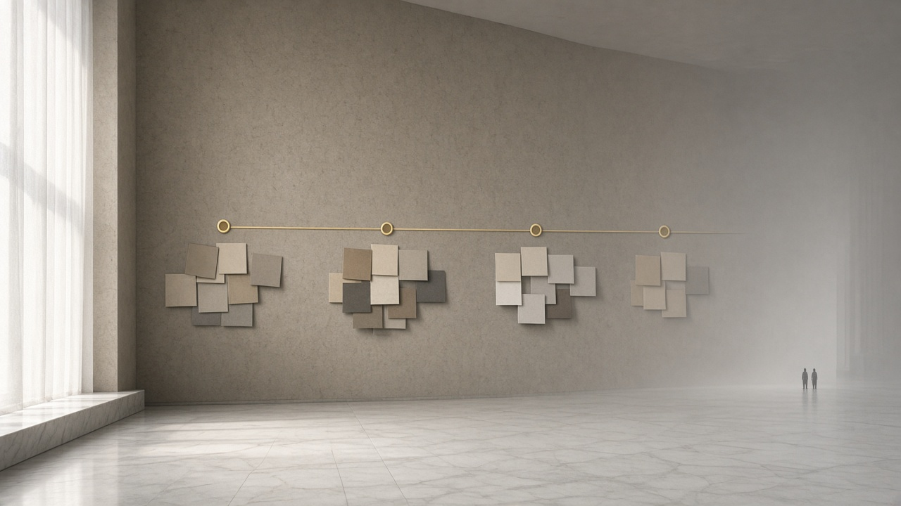
四季路線：
每季只有一個硬指標，沒達標不開新線。
四季路線：
每季只有一個硬指標，沒達標不開新線。
先跑 Q1 的 8 週驗證，再談後面三季。
矩陣最常見的死法是同時開五條線、每條都做一半。一季一件事，年底才有完整閉環，而不是五個半成品。
| 週 | 主題 | 產出 | 鉤子（第一句） | 對應遊戲內 | 指標 |
|---|---|---|---|---|---|
| W1 | 認識：一句話讓人停下來 | 慧明誦經、淨行引路各 4 支（7 支） | 「你今天走路比較慢。」 | 第一次進廟：師父記得你上次說的話 | 完播率 25%・追蹤 +800 |
| W2 | 痛點：睡不著的半夜 | 深夜情境 3 支＋週五 22:00 直播 1 場 | 「這個時間還沒睡，是在想哪一件事？」 | 深夜對話模式、短回覆 | 直播在線 300・進站 1.0% |
| W3 | 教學：怎麼問一個問題 | 教學 5 支＋小紅書圖文 3 篇 | 「不要問『我好不好』，問『我該先做哪一件』。」 | 籤詩頁與問事禮儀 | 收藏率 3%・進站 +30% |
| W4 | 入門：第一次進廟 | 導引 4 支＋邀請碼活動 | 「第一次來的人，先坐在這裡就好。」 | 新手七日的每日儀式 | 註冊 +1,500・次日留存 30% |
| 週 | 主題 | 產出 | 鉤子（第一句） | 對應遊戲內 | 指標 |
|---|---|---|---|---|---|
| W5 | 年前：點一盞燈 | 光明燈導購 3 支＋直播 1 場 | 「燈不是給你保佑，是讓你有個地方記得一件事。」 | 光明燈（US$19／¥134）與牌位 | 掛車點擊 2%・下單 40 筆 |
| W6 | 除夕到初五：頭香與走春 | 每日 2 支＋直播 3 場 | 「今年第一炷香，你想跟誰一起？」 | 頭香（US$19／¥134）、走春地圖 | 單日進站 3,000・直播在線 800 |
| W7 | 元宵：把願望掛上去 | 願望 5 支＋聯名御守開箱 1 支 | 「寫下來，比放在心裡久一點。」 | 願望牆樣式（240 緣塵）、聯名御守 | 願望牆使用 +2,000・御守售完 |
| W8 | 沉澱：把你們的畫貼出來 | 粉絲二創轉發＋數據覆盤 1 支 | 「這些是你們畫的，不是我們畫的。」 | 二創素材牆、Q2 預告 | 二創投稿 60 件・月營收 US$3,000 |
一個跟著你的個人 AI：記得你說過的話，也跟著你長。
第一次入廟，一團像螢火蟲的小光團飄在我旁邊；一個月後它聚了形，開始在我打坐時輕輕引路。
邊界：—
玩家在儀軌進行中可隨時呼喚的個人伴靈，會一路陪著玩家，師父出場時也不會跟著離開。
只保留喚醒、說一句話或輸入一句話、顯示一則回覆、休眠與喚醒接續五項；先不做多聲音、主動插話、跨儀軌同步與長篇說書，所有回覆都用同一張字卡呈現。
核心是玩家在任何儀軌時刻都能找到同一名伴靈，因此全程在場、師父離場不退場、休眠後接續都被列為必要行為。被否掉的是師父出場便收起伴靈、只在開場與結尾出現，以及要求玩家重新召喚才能繼續的方向。
| 項目 | 值 | 備註 |
|---|---|---|
| 伴靈喚醒反應 | 2 秒內出現光帶與提示音 | 工程 |
| 伴靈回答等待 | 5–10 秒 | 工程 |
| 單次可捲動回覆字卡 | 最近 20 則 | 工程 |
| 同一段儀軌最多同時存在 | 1 個伴靈 | |
| 儀軌進行中伴靈在場率 | 100% | |
| 伴靈休眠後恢復進度 | 接續未完成回覆，保留最近 20 則 |
光團會隨著玩家每天與伴靈相處，慢慢長成能陪玩家談心、記住牽掛、提醒玩家走向重要之人的五階段樣貌。
只做光團接住玩家輸入、累積傾訴輪數、約每 7 天顯示一次階段變化，以及第 30 天且滿 50 輪解鎖守緣明伴；先省略多套姿勢、三種角色嘴型、3D 衣料與全部紀念道具，進化提示用白光、人形輪廓與一張字卡完成。
只做光團接住玩家輸入、累積傾訴輪數、約每 7 天顯示一次階段變化，以及第 30 天且滿 50 輪解鎖守緣明伴；先省略多套姿勢、三種角色嘴型、3D 衣料與全部紀念道具，進化提示用白光、人形輪廓與一張字卡完成。
| 項目 | 值 |
|---|---|
| 最快到頂 | ≈30 天 ＋ 傾訴 50 輪 |
| 節奏 | 約 7 天一階 |
採用光團到守緣明伴的連續變化，是為了讓每天被好好接住的累積看得見，也讓玩家從短句回應走到穩定陪伴；被否掉的是一次完成的人格選單、用聊天次數直接偽裝親密，以及只換顏色或徽章而行為語氣不變的方案。
| 項目 | 值 | 備註 |
|---|---|---|
| 五階 | 光團 → 聚形 → 伴形 → 引領 → 守緣明伴 | |
| 時間閘 | 聚形 滿 7 天／伴形 14 天／引領 21 天／守緣明伴 30 天 | |
| 傾訴輪數門檻 | 守緣明伴＝50 輪；聚形／伴形／引領細值待定 | |
| 升級規則 | 時間閘與輪數條件都要滿足 | |
| 一次傾訴互動時長 | 約 15–60 秒 | 工程 |
| 進化提示動畫 | 10 秒；形態揭曉 15–30 秒；終階揭曉 20–30 秒 | 工程 |
玩家可以選擇多花時間陪伴靈慢慢談，或用緣塵加速談完；加速只縮短等待，不會另外變出更多記憶、答案或更好的內容。
只做「對話頁右上角開啟加速、確認前顯示緣塵用量與前後等待秒數、確認後縮短同一段回應的等待、可離開並恢復、保留原對話」；不做自動挑選內容、限時活動、額外禮包、記憶深度選項或準度比較。
時間與傾訴是主軌，所以任何人都能慢慢談；緣塵只解決等待太久的急迫感，不讓付費變成內容開關。被否掉的方向包括用緣塵販售進化內容、記憶深度、答案準度，以及設定限時活動或額外解鎖，因為這些會讓玩家以為多付錢就應得到更多。
| 項目 | 值 | 備註 |
|---|---|---|
| 時長與節奏 | 依 區間制 | 工程；見 A1 冷卻與產出架構 |
| 時長與節奏 | 依 區間制 | 工程；見 A1 冷卻與產出架構 |
| 單品定價 | 依 級距 | 未列單品由營運在級距內定價 |
| 單次加速上限 | 每次一段回應只能加速一次，1 次 | 工程 |
| 加速內容增量 | 0 份新增記憶、0 份新增答案、0 項準度提升 | |
| 可中斷次數 | 不限，離開後可從原進度繼續 | 工程 |
玩家依照自己的信仰與目標取得一個預設名（佛 6／道 6 種子庫）；免費改 3 次，之後用現金續改（Q181）。
只做 12 個預設名、一次選名、3 次免費改名、餘次顯示與無效名字提示；不做連續失敗冷卻、跨裝置同步與改名歷史，也不先收費續改。
先讓玩家從熟悉的信仰選名，降低第一次接觸伴靈時的空白感；免費改 3 次可容納試名，又保留玩家對持續使用成本的知覺。被否掉的方向是讓玩家一開始自由輸入、以後直接付緣塵改名，以及用隨機名代替信仰預設名。
外觀商店只販售伴靈看得見的裝飾，例如光暈、掛飾、尾跡、披風與特效皮膚；它們改變陪伴時的樣子，不改變伴靈的能力或形態。
只保留五種已定案商品、餘額檢查、單件試穿、購買、立即套用、已持有清單與重複購買防護；先不做商品組合、期限、活動限定、贈品、交易與裝備欄位。
| 項目 | 值 |
|---|---|
| 淡光暈 | 30 塵 |
| 小掛飾 | 60 塵 |
| 尾跡 | 90 塵 |
| 季節披風 | 99 現金 |
| 特效皮膚 | 199 現金 |
已定案方向是只賣看得見的樣子，讓玩家用較低負擔表達喜歡，同時保持外觀與五階形態完全分開。淘汰方案包括把外觀與能力升級、戰鬥效果或五階形態綁在一起，因為那會讓漂亮變成付費優勢，也容易讓玩家誤解商品用途。
| 項目 | 值 | 備註 |
|---|---|---|
| 淡光暈價格 | 30 塵 | |
| 小掛飾價格 | 60 塵 | |
| 尾跡價格 | 90 塵 | |
| 季節披風價格 | 99 現金 | |
| 特效皮膚價格 | 199 現金 | |
| 購買次數上限 | 依 冷卻架構 | 見 A1 冷卻與產出架構 |
伴靈用久了會休息（連續 48 小時沒互動就休眠），玩家回來時不會被「你怎麼都不來」綁住，而是直接接著上次那句話。
只做「48 小時休眠＋回溫喚醒＋接續上次話題」；先不做多種喚醒情緒、不重做整段回放，也不讓玩家調整休眠時長（Q165 固定）。
| 項目 | 值 |
|---|---|
| 喚醒 | 接續上次話題 |
這樣定是因為玩家真正需要的是回來後不用重頭說起，伴靈保留並接上原話題比每次重新問候更自然，也比固定說想念更能讓玩家感到被記得。被否掉的方向是讓玩家自行調整休眠時長、用 24 小時在線取代休息機制，以及每次只播放固定想念句；這些做法不穩定，也沒有真正接回上次內容。
伴靈的記憶機制不重新發明：直接借 Nomi／Kindroid／Dot 已經被市場驗證過的做法——記住人、事件、情緒與承諾四類，時間到了才拿出來用。
只做「玩家主動查看、保留、更正、刪除」四個動作，以及每天最多一次由伴靈詢問是否記住一句明確偏好；不做自動回憶冊、主動推送、情緒標籤、跨產品同步與里程碑生成。
採用 Nomi、Kindroid、Dot 已驗證的分層記憶、主動提問與關係里程碑，讓伴靈專門記住玩家這個人，師父只負責記事件；不做全自動心理分析、永不刪除的永久監視，也不把普通聊天全部升級成里程碑，因為這些做法容易造成錯記、越界與隱私負擔。
| 項目 | 值 | 備註 |
|---|---|---|
| 主動提醒 | 初版每天最多 1 條，只提醒該做的事、不催未做的事 | |
| 提醒頻率非固定死，上線後依數據調整 | 提醒頻率非固定死，上線後依數據調整 | |
| 個性來源 | 個人記憶系統，全部互動痕跡 | 不只傾訴 |
| 單次主動詢問停留時間 | 3 秒 | 工程 |
| 記憶卡單頁顯示張數 | 5 張 | 工程 |
| 玩家可主動查看的最近記憶 | 20 張 | 工程 |
內求的「我是」練習。跟祈福外求打通，但兩件事不混。
上完香求了件事，回家打開日記，寫一句「我是值得被愛的」；蒲團下紋路亮了一圈，霧變成穩定的光。
邊界：—
一個完全私密的頁面，只做一件事：寫一句「我是……」，然後念出來。念完，蒲團下的地面紋路亮起一圈，殿內的霧從飄動轉成穩定柔光，幾秒後自然消退。
沒有把願望送出去，也沒有交給任何人。
只做素箋一階：一句、一念、一次紋路回饋。五階、加層、上牆全部砍掉。
| 項目 | 值 |
|---|---|
| 產出 | +1 塵 |
顯化是內求，所以不能有成功與失敗，只能有「有沒有做」。把回饋放在空間（紋路、霧）而不是介面（勾、分數、連續天數），是為了讓它像廟，而不是像待辦清單。
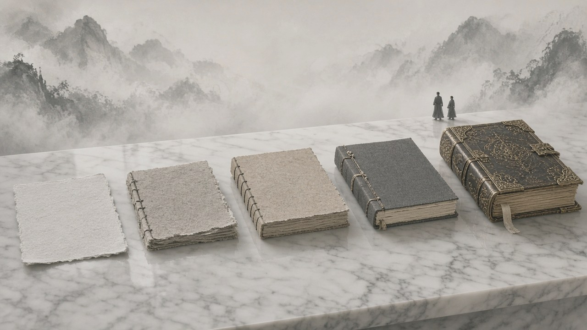
同一本日記的五種裝幀深度：素箋（今天一句我是）→晨昏冊（晨昏各寫一次）→深寫卷（主句加一段深寫）→牆龕橋（可匿名上牆或去探望）→願行統合冊（把願與日常收成一冊）。
升級的是收納方式，不是能力值。
只做前兩階（素箋、晨昏冊）。後三階先留空殼。
不賣進度是這條的底線。用『換裝幀』不用『升等級』，玩家看到的是自己的字被更好地收著，不是自己變強了。這也讓後面的加層（付費）只碰樣子，碰不到深度。
漏一天不算斷。那天可以在寬限日親手補簽——補的不是一個勾，是一次小儀式：重念一次「我是」句，紋路微亮一下。
另外，任何儀軌結束後，童子會直接把玩家帶到側廊的日記前，不用自己找路。
只做「漏一天→可手動補一次」，側廊帶路先用手動入口代替。
連續紀錄一旦會歸零，玩家第一次漏寫就會直接放棄；給寬限日是把修行節奏當設計前提。但補簽必須真的做一次儀式：只按鈕就等於把顯化變成打卡，那正是這條要避開的東西。
三種加層：卡面紙紋、念「我是」時浮現的字體與光效外觀、以及留存延長。只換樣子與保存期限，不改內容真偽、不買準度、不買進度。
只做紙紋一種，價格 45；延長與自念句外觀後補。
| 項目 | 值 |
|---|---|
| 留存延長 | 75 塵 |
| 卡面紙紋 | 45 塵 |
| 自念句語音外觀 | 60 塵 |
加層是這條產品唯一能收錢的地方，所以邊界要畫死：只換樣子與期限。一旦能買連續天數或排行，顯化就變成課金比誰虔誠，整條信任崩掉。到期封存不刪，是為了不讓玩家覺得自己的東西被沒收。
一面公開牆，只放匿名真實的願望。玩家自己的日記預設完全私密、永不自動上牆；要上牆必須主動勾選，上牆後強制匿名（不顯示名字、頭像、地區或任何可識別資訊）。
公開牆做輕審，日記本體不審。
只做「看牆＋自己選擇匿名上牆」，輕審先用關鍵詞擋。
匿名是為了讓句子能被說出來。一旦有名字、有點讚、有排序，人就會開始寫給別人看，牆上剩下的就是表演，不再是願望。位序框砍掉、加層特效不上牆、分享永遠是 opt-in。
祈福或天燈結束後，剛剛許的願自動寫進顯化日記一筆，並改寫成第一人稱現在式（「我想考上北大」→「我是北大人」）。
日記與天燈可以互相點回；燈旁留一個小印記，標這盞燈接過哪一筆日記。
只做天燈→日記的單向寫入與燈印；雙向溯源後補。
祈福求結果，顯化練自己，兩件事硬綁在一起會讓日記失去獨立性。用『一筆自動寫入＋雙向點回』接住它們，但週期與每日念誦各自走：求的是廟，練的是自己，日記只是那條線索。
把「我是」句放到手機鎖屏，解鎖就看到，不必開 App。只顯示那一句，不顯示連續天數、不顯示進度。
只做「顯示一句、可改、可關」；平台差異先用最保守實作。
Q112 仍有效的部分是「顯化日記完全私密、不進願望牆」，Q113 覆蓋的是牆上規則（可展示匿名真實內容）。Widget 只讀日記那句話，所以兩條都要掛：私密邊界走 Q112，牆的邊界走 Q113。
只記做完的儀式。一本私人簿，回答「我做過什麼」。
點殿內一道痕跡，看到那場法會的記錄；翻開香錄，上香、跪拜、天燈各一頁。
邊界：香錄是「玩家看得到的紀錄頁」（呈現與版式）；資料本身由 F18-03 定義與持有。F07 不自己存資料，只讀 F18。
玩家完成一次上香、跪拜、天燈或法會後，系統會自動把這次已完成紀錄寫進香錄，之後可直接回看。
只做完成結果頁到香錄頁的自動紀錄；每筆包含儀式名稱、完成日期時間與一句玩家備註，可依日期查看。不要顯化日記，不要「我是」句，不做搜尋、篩選、圖片、分享或提醒。
完成後自動入頁能避免漏記，也讓玩家不用再處理一次填寫或儲存。每一類儀式各留一頁，方便日後按儀式回看；被否掉的是完成後再手動新增、把所有儀式混在同頁，以及加入顯化日記或「我是」句的方向。
香錄不只記「做過」，還記「什麼時候、在哪裡」。點一條痕跡就能回看當天的畫面——這是把紀錄變成回憶，而不是變成報表。
只做殿內淡金色痕跡、點擊後顯示法會名稱與日期、播放一段 30 秒法會片段、返回原位，以及離開後接續觀看；先不做收藏、分享、搜尋或片段編輯。
沿用殿內痕跡作為入口，玩家不必先找清單再猜是哪一場，點下去就能直接看見；痕跡與回看內容使用同一來源，避免出現對不起來的紀錄。被否掉的是另建一套法會歷史頁、只顯示文字摘要，以及讓玩家自行搜尋法會的做法。
香錄的加層只改外表：冊皮、書籤、頁緣紋、季節封面。它賣的是收藏的慾望，不動任何真假與數值——所以不會變成「付錢讓紀錄更真實」。
只做一頁外觀清單、360 度靜態預覽與套用；價格固定在 60–240 塵之間，先不加入染色、自由拼接、動態書籤與多人同步。
| 項目 | 值 |
|---|---|
| 香錄加層 | 60–240 塵（L3） |
外觀更換必須和內容真偽完全分開，才能讓玩家安心裝飾又信任原紀錄；因此否掉改寫香錄內容、調整真偽標記、把外觀與收藏價值綁定，以及自由染色或多人共改的方向。
為過世的人留一條長線：日常探望、生日與節慶、追思會。
我每天去看父親，點一支短香，靜默十五秒；生日那天收到提醒，線上共祭；周年辦了一場追思會，選了墨玄師父主持。
邊界：—
玩家在同一位祖先或逝者的牌位、龕位與追思頁之間，沿著同一條關係線查看紀錄、留言並參加共祭。
只做同一對象的牌位、龕位與追思頁串接：可查看三種內容、留言、點燭，以及進入一個共祭頁面並看到雙方燭光；不做供品交易、跨對象關係編輯、代他人操作或複雜篩選。
因為牌位、龕位與追思描述的是同一段關係的不同入口，分成三套會讓玩家重複尋找，也不利於集中留言與共祭；因此收成一條關係線。被否掉的方向是三套並列頁面、代玩家操作他人的燭火或供品，以及讓亡者或他人未經同意發言。
| 項目 | 值 | 備註 |
|---|---|---|
| 單次查看停留上限 | 依 冷卻架構 | 見 A1 冷卻與產出架構 |
| 留言長度上限 | 依 冷卻架構 | 見 A1 冷卻與產出架構 |
| 點燭冷卻時間 | 依 冷卻架構 | 見 A1 冷卻與產出架構 |
| 供品放置數量上限 | 依 冷卻架構 | 見 A1 冷卻與產出架構 |
| 共祭同時在場人數上限 | 依 冷卻架構 | 見 A1 冷卻與產出架構 |
| 關係線節點數 | 牌位、龕位、追思各 1 個節點 |
玩家上傳一張照片，系統把它做成可在廟宇場景中擺放的 3D 牌位，讓逝者有一個能被看見與祭拜的位置。
只做照片上傳、固定角度的 3D 牌位、一次建模、玩家選一個現成位置並落位；先不做自由旋轉、材質選擇、角度微調、批次建立與重新建模。建模期間可離開並回來查看結果。
| 項目 | 值 |
|---|---|
| 牌位 3D | 600 塵（L3） |
這麼定是為了讓玩家只靠照片就能建立牌位，不必回答親友是否已過世，也不被表格或證明卡住。先做單張、單位置、低於半數的固定外觀版本，是因為玩家最需要的是完成安放；否決過世親友勾選、先做完整編輯器、多張批次建立與自動挑選親友資料，避免把簡單的紀念動作變成審查或操作負擔。
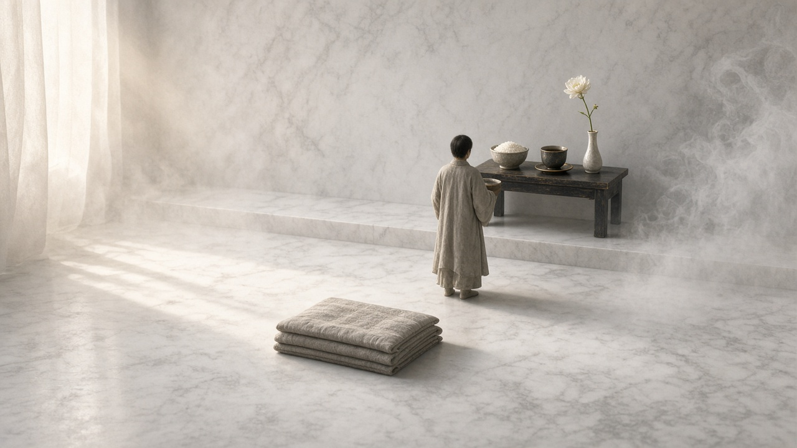
每天一次：淨手、短香、靜默，然後拿到緣塵。它是留存的主力不是因為獎勵高（+8），而是因為它短到可以在通勤時做完。
只保留一鍵式流程：按「探望」後依序播放約 8 秒淨手、約 45 秒短香、約 15 秒靜默，再顯示「完成」並發放 8 塵；可離開與重連續接、香火視覺、每日重複判定維持可用，其餘提示字卡與細緻音效可先拿掉。
只保留一鍵式流程：按「探望」後依序播放約 8 秒淨手、約 45 秒短香、約 15 秒靜默，再顯示「完成」並發放 8 塵；可離開與重連續接、香火視覺、每日重複判定維持可用，其餘提示字卡與細緻音效可先拿掉。
| 項目 | 值 |
|---|---|
| 探望產出 | +8 塵／日（一次） |
用短流程保留每日探看的真實節奏：淨手、短香、靜默各給玩家一個明確動作，合計少於 90 秒，8 塵也能形成穩定的小幅累積。否掉「點一下直接領塵」，因為看不出玩家曾完成探望；也否掉長香、長篇對話與連續多天連勝，因為會拉長等待並把日常探望變成負擔。
這是牌位區裡固定給每位主人使用的龕位；玩家付費只替自己的龕櫃換外觀，畫面永遠把主人放在正中央，不會因付費改變位置。
只做一個固定中央龕櫃、可返回牌位區的原木外觀，以及 90 塵漆色外觀；支援餘額檢查、一次付款、套用與重新進入恢復，不做拖曳、旋轉、多人操作或外觀收藏。
| 項目 | 值 |
|---|---|
| 龕櫃外觀 | 90–300 塵 |
固定位置能讓玩家清楚知道付款只改裝飾，不會因購買順序失去重要名字的位置；訪客也始終看見主人居中，避免把價格誤解成位置待遇。被否掉的方向是付費選位置、依風水調整位置、付費後改變主人居中，以及用更高價格暗示更好的運勢。
在生日或節慶時建立一場線上祭拜，讓家人在約定時間一起點燈、放音樂，並為對方送上祝福。
只保留生日與節慶提醒、數位點燭、祝福卡、邀請連結及最多一種共祭音樂；先不開放複雜布置。
先讓提醒、本地時區顯示、數位點燭與線上共祭形成一場看得見的祭拜，讓離家的人也能一起參與；因此不把完整布置放在第一版。被否掉的方向是大型節慶場景、連續留存任務與固定公開時段，因為它們會增加等待感，也讓生日提醒變成必須完成的負擔。
| 項目 | 值 | 備註 |
|---|---|---|
| 共祭在場人數上限 | 依 冷卻架構 | 見 A1 冷卻與產出架構 |
| 單次進入過場 | 3 秒 | 工程 |
| 設定操作時間 | 5 秒 | 工程 |
| 祝福輸入至送出 | 7 秒 | 工程 |
| 建立或加入共祭入口 | 5 秒 | 工程 |
| 重複送出同一祝福 | 1 次 | 工程 |
| 時長與節奏 | 依 區間制 | 工程；見 A1 冷卻與產出架構 |
請一位數位人主持一場追思會，親友可以線上到場。它處理的是最難開口的需求：不是為了死人，是為了讓活著的人有一個可以一起難過的地方。
只做一場單人追思會：選擇道或佛數字人、填寫 80 字留言、依固定次序點燭與獻香、結語後發 1 張追思卡；暫不做多人同步、自由流程或可挑主持人。
先讓一位數字人固定主持，能直接回答「怎麼替逝者舉行追思」並降低第一次使用的門檻；道與佛各一種角色，先呈現主持風格差異。暫不做自由發言、多人同步主持或完整宗教儀式，避免流程過長、角色品質失控；這些方向等核心流程通過試玩後再決定。
| 項目 | 值 | 備註 |
|---|---|---|
| 主持費 | 0 塵，基礎費已含數字人主持。 | 工程 |
| 追思會基本長度 | 180 秒。 | 工程 |
| 可結尾時間 | 210 秒。 | 工程 |
| 可選角色 | 2 種，道與佛。 | |
| 可邀請人數 | 5 人。 | 工程 |
| 單則追思留言 | 80 字。 | |
| 可選字卡 | 8 張。 | 工程 |
| 同一場追思會可領追思卡 | 1 張。 | 工程 |
玩家可以替亡者安排超度法會、抄經迴向或升級牌位，把原本只能放在心裡的關係變成一件可做的事。
只保留超度、抄經迴向、牌位升級三個入口與各一個固定選項；支援選擇亡者、查看所需資源、確認、完成後發放一張紀念卡與一次緣塵回饋；暫不加入自訂經文、日期預約、進度查詢與多人同步。
延伸關係線的原則是玩家先想替對方做什麼，再選擇做法，因此先提供超度、抄經與牌位升級三種清楚入口；被否掉的方向是直接販售抽象祝福、把三種操作合成一個無法理解的按鈕，以及只顯示結果、不讓玩家確認內容，因為這些做法會削弱玩家對所做事情的掌控感。
三種規模的虛擬法會。儀式做完，這座廟的當下會跟著改。
節慶那天我參加完整法會，結束後大殿的光和香火變了，別人看得見；點痕跡能看到是哪場法會留下的。
邊界：F10 決定「什麼時候、辦什麼活動」（日期、路線、桌位、供品）；F09 只負責「儀式怎麼跑、獎勵怎麼給、廟況怎麼改」。中元法會＝F10 排時間 ＋ F09 跑科儀，兩邊不重複寫獎勵表。
同一場法會有三種規模：日常簡版、求解讀、節慶完整版。分級不是為了收費，而是為了讓「今天有多少時間」決定你要進哪一場。
只做日常簡版：道觀入口、點上香、播放香火動畫與音效、結果顯示加 8 塵；保留離開不結算、重複點擊只計一次及緣塵不足提示，求解讀與節慶完整版暫不開放。
| 項目 | 值 |
|---|---|
| 法會上香 | +8 塵 |
| 法會求解讀 | +20 塵 |
| 節慶完整 | +48 塵 |
三種規模讓玩家能按當下需要選擇，不把簡單上香、深度解讀與節慶慶典混在同一套流程。求解讀限制在道觀，是因解讀需要固定場合與命盤資料；日常簡版保留最易完成的 8 塵回饋。否掉每種需求都做成長流程，也否掉在任何場所都能呼叫八字解讀的方案。
| 項目 | 值 | 備註 |
|---|---|---|
| 模式數量 | 3 種 | 日常簡版上香／上香＋八字解讀／節慶完整版 |
| 日常上香產出 | +8 塵 | |
| 求解讀產出 | +20 塵；只在道觀 | |
| 節慶完整版產出 | +48 塵 | |
| 單次操作目標時長 | 40 秒 | 工程 |
| 未完成不結算 | 0 次 | 工程 |
分流只有一條硬規則：求解讀（八字解讀）只在道觀；日常上香兩館都可以；節慶完整版看主題定主場（佛誕／盂蘭偏佛廟，廟會／道場偏道觀），步驟可跨館呼叫獨立功能（Q56）。
只做兩館選擇、日常上香與依主題篩選三種結果；每張卡顯示館名、法會名、可報名狀態與前往按鈕，不做個人化推薦、收藏或提醒。
這樣定能讓玩家在進場前就分清館別與法會種類，也不會把道觀求解讀與日常上香混在一起；被否掉的是同一頁混合求解讀、上香、八字與節慶內容，以及由系統擅自判定玩家適合哪一場。
| 項目 | 值 | 備註 |
|---|---|---|
| 日常上香 | 道觀、佛廟兩館皆可 | |
| 求解讀 | 只在道觀，呼叫八字解讀 | |
| 節慶完整版 | 依主題定主場，步驟可跨館 | |
| 八字／易經僅道觀；佛廟只有求籤／因果 | 八字／易經僅道觀；佛廟只有求籤／因果 | |
| 分流頁操作目標 | 15 秒內完成 | 工程 |
| 一次顯示法會項目上限 | 依 冷卻架構 | 見 A1 冷卻與產出架構 |
頭牌是廟裡最重要的一張榜卡：玩家服一服法會後，廟的樣子會跟著改變，其他玩家進廟就看得到。
只做每日一次的頭牌榜卡：玩家完成服法會後，廟門、木匾或供桌其中一處改變，效果短暫，其他玩家進廟可見，結算卡列出留下者與到期時間；不做節慶季選、永久保留與多處同時改寫。
最高獎勵應是廟的樣子真的被改變，讓玩家看見自己留下的痕跡，而不是只拿數字；因此採用一服一廟況並讓他人可見。日常效果短而常換，節慶才延長或永久，避免廟很快塞滿；新痕跡不直接蓋舊痕跡，讓舊的先淡，保留玩家回看自己曾做過什麼的機會。被否掉的方向是只發獎勵、不改廟況，以及讓每次改寫永久保留。
殿裡留下的痕跡可以點開，看到它是哪一場法會、誰在主法。它讓「這座廟被很多人用過」變成看得見的事實，而不是一句宣傳。
只保留點痕跡查看所屬法會名稱、日期與返回功能；先不加入收藏、分享、關聯道具、搜尋與批次查看。
讓痕跡成為能回到法會的入口，玩家一看就知道來源；被否掉的是只顯示模糊日期、要求逐場搜尋，以及讓痕跡永久占滿殿內的方向。
每場法會都有獨立空間，玩家可從主畫面選擇法會，進入適合舉行的場域；禁制區會改走偏殿或回廊。
只做主畫面法會列表、每場獨立入口、固定席位提示、禁制區改走偏殿或回廊，以及一次入場資格與一次獎勵；各場空間可先沿用同一組基本場景，不做自由移動與複雜座位。
每場法會使用自己的空間，能讓玩家在入場前辨認場地與動線；禁制區不硬闖，改由偏殿或回廊引導，可保留阻隔感並避免卡住。被否掉的方向是所有法會共用同一大廳、直接穿過禁制區，以及只顯示文字卻沒有可看見的空間。
完成法會後，玩家會收到一份記下本次成果的獎勵清單，內容可包含基線紀錄、廟況改寫、卡包與緣塵，實際項目依各法會主題而定。
只保留法會完成後的獎勵清單、香錄寫入提示、緣塵到帳提示與返回廟宇；頭牌先顯示名稱及占位圖，不做廟況外觀改寫，卡包只列清單，不做卡牌動畫。
先固定完成後看見什麼、怎麼領取與怎麼保存，讓玩家每次法會都有清楚收尾；基線紀錄承接香錄寫入，頭牌承接廟況改寫，副產則統一用卡包與緣塵呈現。被否掉的是直接憑空發獎勵、不看本次成果，以及在尚未確認主題前先寫死所有物品數量，因為那會讓不同法會看起來像同一套流程。
台上的人是誰很重要：師父負責科儀，法師主敲一百零八響。分工寫清楚，才不會出現「一個師父包辦全部」的假儀式感。
保留師父起手確認、主敲一百零八下、逐次數字顯示、斷線接續與完成記錄；砍掉童子動作細節、節點動畫與離開後的段落回看。
讓師父負責科儀與主敲、童子引導流程、系統提示節點，三者各有清楚工作，玩家才不會漏步或重複敲擊。被否掉的是玩家自行操作全部科儀、由系統代替師父主敲，以及完成後才統一顯示進度的做法。
時令大活動，給回訪一個強理由。
媽祖遶境那天，我跟著主隊走，每到一個場景停兩分鐘；沒繞到我這邊，我就在廟前接駕。中元我線上訂了桌，現場臨時入座貴五成。
邊界：本塊只定義時間、活動形式與現場規則；科儀流程、完成獎勵、廟況改寫一律回 F09。遶境與頭香的「儀式段落」也由 F09 執行。
媽祖遶境有三個版本：定時路線、跟著轎班走、沿線觀禮。三種都存在，因為玩家的時間與裝置不一樣——先做定時路線，是因為它最不吃效能也最不會出錯。
只做定時路線：玩家選目的地與到訪時間，看到隊伍位置、下一站和廟前接駁提示；抵達後可觀禮並在每景取得 +2 塵。砍掉即時隊伍地圖推送、自由跟隨轎班、沿線觀禮選單與連續接駁重試。
| 項目 | 值 |
|---|---|
| 遶境產出 | +2 塵／點 |
| 主隊停留 | ≈2 分鐘／景 |
Q216 定三版並存（定時路線／跟隨轎班／沿線觀禮，先做定時路線）；Q115／Q184 給路線與場務（全場景航點、主隊緩進、每景停約 2 分、未繞到可接駕）；產出 +2 塵／航點出自 Q72。原頁誤掛 Q116／Q117（那是搶頭香名額，且已被 Q118 覆蓋成單人稀缺），與遶境無關，已移除。
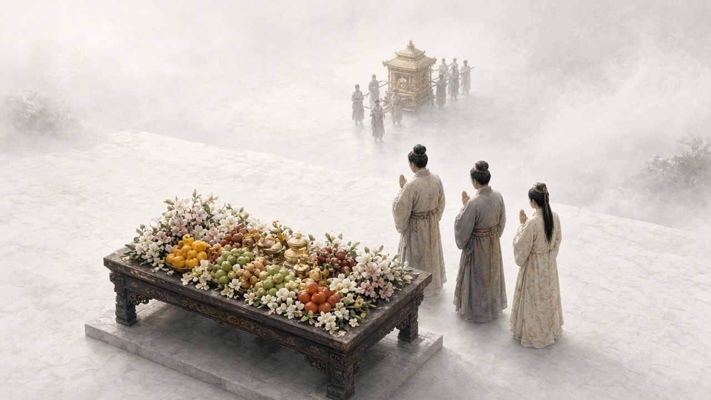
玩家跟著遶境隊伍走，走到指定地點後，可以選擇一份包含 60、180 或 360 塵的獻禮。
只保留一個入口、一個獻禮台、三檔金額、一次確認與成功紀錄；先不做指定人姓名、倒數、多人同送或贈品展示。
| 項目 | 值 |
|---|---|
| 獻禮 | 60 / 180 / 360 塵（L2） |
三檔 60／180／360 出自 Q72 花費表（L2 時令）；遶境場務與航點見 Q184。原頁誤掛 Q118（那是搶頭香名額規則），與獻禮無關，已移除。
| 項目 | 值 | 備註 |
|---|---|---|
| 獻禮第一檔 | 60 塵 | |
| 獻禮第二檔 | 180 塵 | |
| 獻禮第三檔 | 360 塵 | |
| 奉獻塵值等級 | L2 | |
| 建議操作時間 | 5 秒 | 工程 |
| 建議確認時間 | 3 秒 | 工程 |
| 同一趟遶境每人上限 | 1 次 | 工程 |
頭香是單人稀缺、準點統一抽籤，不是比誰手快。它刻意排除了「熬夜蹲點」這種玩法：你只要在場，機率對每個人一樣。
只做一個統一抽籤等待頁與一次結果頁：玩家完成登記後，看到倒數和目前人數；到點後所有符合資格者一起抽出結果，頁面分開顯示中籤者與未中籤者，並保留返回遶境按鈕；不做販售、轉讓、連抽或複雜動畫。
只做一個統一抽籤等待頁與一次結果頁：玩家完成登記後，看到倒數和目前人數；到點後所有符合資格者一起抽出結果，頁面分開顯示中籤者與未中籤者，並保留返回遶境按鈕；不做販售、轉讓、連抽或複雜動畫。
採用準點統一抽籤，讓結果只由同一批參與者與抽籤結果決定，不用速度或手快作為優勢；不懲罰未中籤者，避免把參加變成競速與淘汰。被否掉的方向是逐個點擊搶抽、先到先得，以及把頭香名分做成可販售商品。
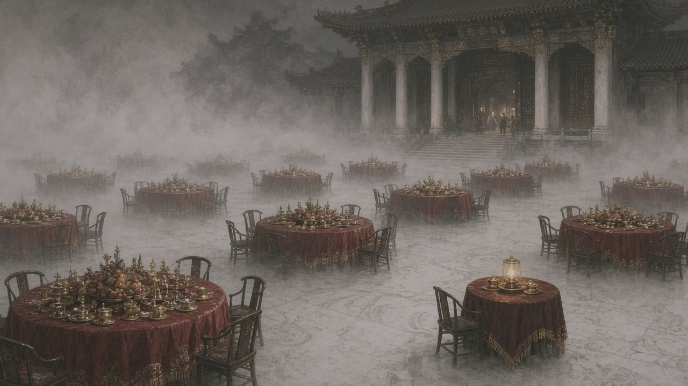
中元可以線上先對號，也可以到現場臨時安排；線上與現場並存（Q120 覆蓋舊「只線上」）。現場比較貴（溢價 Q187），但虛擬空間無限，不存在實體座位不夠的問題。
只保留中元訂桌入口、線上訂桌、現场臨時入座、虛擬座位顯示、兩種價格、訂桌憑證與基本錯誤提示；砍掉桌位圖以外的裝飾動畫、提醒推播與進階訂位管理，付款與入座確認必須保留。
| 項目 | 值 |
|---|---|
| 中元線上 | +8 塵 |
| 中元現場 | +6 塵 |
| 現場溢價 | 線上 ×1.5 |
採用先線上訂桌、現場臨時入座加價，讓玩家能先安排中元聚席，也保留現場決定的可彈性；虛擬座位無限、實體座位不設上限，避免節慶席次被提前限制。被否掉的方向是所有座位一律線上付款、現場不提供臨時入座，以及用固定實體座位數限制玩家。
中元是只在線上購買的三檔付費內容，玩家用 90、150 或 220 塵換到由浅到深的遶境、遶境與頭香體驗。
最小可用版只保留一個線上頁面、三個價格選項、付款成功後進入一段可回看的線上遶境流程，以及完成後顯示進度與結果；先不加入即時多人、複雜道具與完整周邊兌換。
| 項目 | 值 |
|---|---|
| VIP | 90 / 150 / 220 塵（L2） |
這樣定是因為玩家明確只要線上購買，而且三檔差異要用體驗深度表達，不是用更多商品或線下權限堆高價格；因此採 90、150、220 塵三檔並保留清楚的進度。被否掉的方向是同時販售線上與線下方案、以人數或商品數量分級，以及先承諾未確定的現場服務或限時權益。
法會結束後，玩家看見原本擺滿供桌的桌位化成一群光點，結界裡的孤魂因此得到照護與安置。
只做一段桌位化成光點並飛向夜空的動畫，配字卡「法會已結束，統一施孤」與返回按鈕；砍掉供品細節、多人同步、光河造型與觀看紀錄功能。
中元到場＝線上預訂＋現場並存（Q120 覆蓋 Q119 的「只線上」）；結束統一施孤、桌位化成光點飄走出自 Q187。原頁掛 Q119 是已覆蓋的舊條，已換掉。
玩家在第一次大型活動前，觀看一段像孤魂故事的小電影，藉此知道即將到來的遶境與頭香有哪些地方值得親身體驗。
只做一則 38 秒、1080p 的直式預告電影，加一個「記住提醒」按鈕；暫不做分支劇情、投票、票卡、緣塵、道具、抽獎與再次觀看獎勵。
第一次大型活動需要先讓玩家有可想像的畫面與清楚提醒，再用一則短片建立期待；被否掉的是長篇完整故事、強制觀看、遊戲內購買電影，以及用保庇或財運保證吸引點擊。
求、應、還走完一輪，再加抄經、受齋、布施、放生這些低門檻修行。
去年求的事應驗了，我回來還願，師父收尾出場；平時我線上誦經、現實抄經，寫完拍照上傳。
邊界：抄經／受齋／布施／放生的流程擁有者是 F02；F11 只擁有「還願」這一輪，以及與義工出坡的施受關係。本塊不另寫一次流程。
求了、應了、回來還願——最後一段由師父收。它把前面所有「求」的動作接成一輪，也是這款產品唯一會主動問你「最近怎麼樣」的地方。
只保留四步：願望應驗後回到師父面前、選一件相關物品、點香並說一句還願內容、師父收尾後發放 8 塵並在香錄寫入「已還願」。不製作物品用途分類、不做自由文字輸入、不做重複願望合併。
| 項目 | 值 |
|---|---|
| 還願 | +8 塵 |
這樣定是因為重點要清楚落在「求了、應了、回來還、最後由師父收」，讓玩家看見願望真的發生並留下紀錄；每條願望固定回饋 8 塵，回饋容易理解。被否掉的方向是只發物品獎勵、不由師父出場，以及讓玩家自由填寫複雜願望或即時發放不同數值，後者容易造成內容不一致。
玩家可透過抄經、受齋、布施與放生四種修行方式累積回訪點數，並留下自己完成修行的照片或紀錄。
保留四個入口與基本回訪點數：抄經提供現成音訊、單張照片上傳並加36點；受齋在法會結束後顯示一次可確認提醒並加8點；布施提供固定供品與緣塵扣款；放生只提供固定活動頁、報名與到場報到並加8點。暫不做自訂經文、多張相簿、活動直播或複雜布施選項。
保留四個入口與基本回訪點數：抄經提供現成音訊、單張照片上傳並加36點；受齋在法會結束後顯示一次可確認提醒並加8點；布施提供固定供品與緣塵扣款；放生只提供固定活動頁、報名與到場報到並加8點。暫不做自訂經文、多張相簿、活動直播或複雜布施選項。
四種動作都貼近日常，且門檻低：抄經把線上跟讀與現實書寫放在一起，受齋只提醒不強制，布施讓玩家主動給予而不勸募，放生則保留參加活動的選項。被否掉的方向是只做線上打卡、強制受齋、以捐贈換取點數，以及為四種動作分開推出不同版本。
| 項目 | 值 | 備註 |
|---|---|---|
| 抄經 | +36 塵 | |
| 受齋 | +8 塵 | |
| 放生 | +8 塵 | |
| 布施 | 付出緣塵或供品，不產塵 | |
| 抄經拍攝時限 | 60 秒；音訊長度／照片大小／每日次數：依 冷卻架構 | 工程；見 A1 冷卻與產出架構 |
| 受齋提醒次數／放生名額 | 依 冷卻架構 | 見 A1 冷卻與產出架構 |
玩家把一份物資或一次出坡交給眼前的人，親手完成布施；受施方是會回應的背景人物，其中義工也可來領取出坡所需物品。
只做一種交付場景：玩家從木案選一袋米，交給一位可互動背景人或義工，對方短謝後物品扣除並顯示結算；不做多物品組合、對話選項、連續交付與限時活動。
受施方放在可互動背景人與義工出坡層，玩家能直接看見物品交到誰手上，布施才有清楚結果；背景人只短謝可保留寺廟節奏，也避免對話拖慢操作。淘汰長篇感謝對話、先談理念再交付、讓受施方只做無反應道具，以及用數值排行榜取代親手交付的做法。
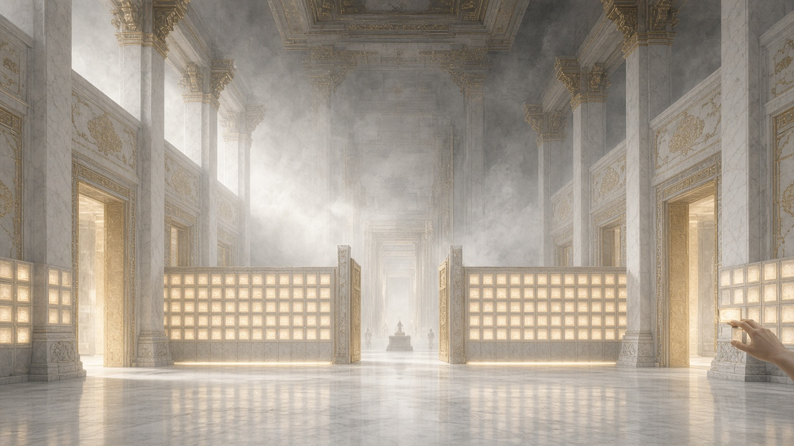
把「還願與修行」的所有玩法一次放進遊戲，不再讓玩家碰到某些內容時才發現它還沒出現。
只保留主畫面、Q101–Q109 九個內容入口、每個內容的基本修行流程、完成結果顯示與獎勵發放；砍掉額外導覽、推薦排序與進階整理，但所有內容都必須可進入。
讓玩家在接觸遊戲時就看見全部選項，避免把「要不要做」變成等待問題；被否掉的是首發與第二季分批開放、依內容分階段解鎖，以及把排期當成功能取捨的方案。
| 項目 | 值 | 備註 |
|---|---|---|
| 全部內容數量 | –，共 9 項。 | |
| 主畫面內容入口數量 | 9 項。 | |
| 首次載入時間 | 3 秒。 | 工程 |
| 單段修行操作時長 | 最多 45 秒。 | 工程 |
| 完成結果顯示時間 | 5 秒。 | 工程 |
| 中途中離開保留方式 | 保留已完成內容與已發放獎勵，未完成內容可重新進入。 |
結緣鋪是遊戲內的店：賣外觀、收藏與數位供品，用緣塵結帳、即時交付；真錢交易在 F12R 實體商城。
我在廟裡逛進一間小店，店員問我想找哪一種；我買了平安符、一束香，年底點了一盞寫著我名字的燈。
邊界：—
結緣鋪是進店後由店員招呼、交談、買賣的店鋪；同一張臉也負責換龕櫃外觀、伴靈小掛飾試戴、經冊裝幀預覽（Q219 角色編制 #22–#24）。
店員可含服務／改裝工匠，但不與傾訴師父合併（Q209 衝突職能分開）。
保留一名店員招呼、問答、查看商品、購買或交換，以及買後進隨身物；先做一個櫃位、一種掛飾與一種裝幀，刪掉多人同場、連續問答與跨時區處理。
採用有人招呼的店鋪互動，讓玩家先問、再看、再交易，並把換櫃、掛飾與裝幀放進同一次結緣；被否掉的是直接滑商品列表、無人回應的自助商店，以及把所有交換混成單一按鈕的方案。
Q209 的規則是「按適配度合併」：同類、不衝突的職能可以併在同一張臉；衝突職能必須分開——傾訴師父不跟商城推銷合。
所以結緣鋪店員是獨立一張臉（可含服務／改裝工匠），不兼師父。
只做一個商品列表、一名店員、商品卡查看、緣塵餘額檢查、一次結緣與結果卡；不做比較、收藏、推薦、贈送或商品分類。
結緣是玩家的個人選擇，店員應提供清楚資訊與辦理結果，因此和傾訴師父分開，避免親密關係造成適配衝突。被否掉的方向是師父兼任店員，以及店員主動替玩家挑商品。
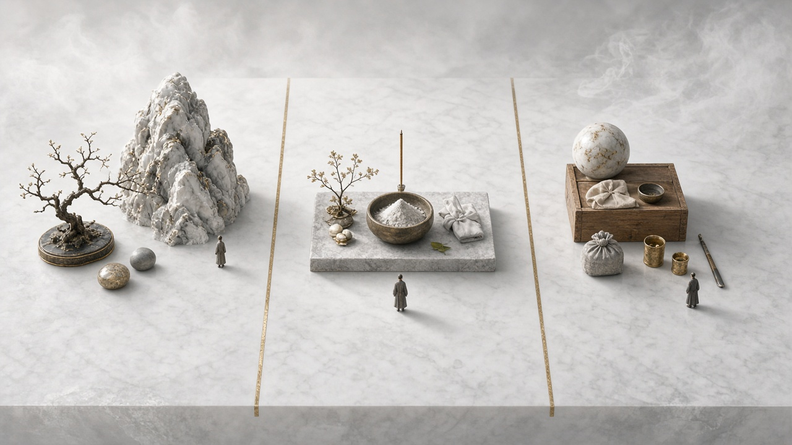
商城一格商品列表，只賣「多一個選擇」的東西：外觀、供品、便利用品（Q74 原文範圍）。不賣準度、進度跳過、師傅關係；
現金唯一用途是買緣塵包（Q135），且不計入當日產出。
只做一頁三排商品列表、每件商品的圖片與價格、緣塵餘額、購買與背包發放；緣塵包先保留外觀與開包動畫，不做搜尋、篩選、套餐、每日限購與推薦。
只留外觀、供品、便利，玩家能立刻理解買來做什麼，也避免用商品偷換戰力、進度或關係成長；被否掉的是準度商品、進度商品、關係商品，以及讓現金直接購買其他商品的方案。
買完之後先看它在你身上的樣子，再決定換不換。可預覽三類：換龕櫃外觀、伴靈小掛飾、經冊裝幀（Q219 #22–#24）。
只做商品頁的全身預覽與返回原樣：支援角色正面、背面、側面，能套用換龕櫃、伴靈掛飾、經冊裝幀三類外觀；不含局部材質、自由旋轉或多人共同觀看。
先讓玩家在角色身上看見外觀，能直接回答買了會不會喜歡，也能讓服務與改裝工匠同鋪而不另開大型流程。被否掉的是先付款再看、先替玩家拆掉舊物品，以及用抽象圖示取代角色實景預覽。
| 項目 | 值 | 備註 |
|---|---|---|
| 預覽開啟時間 | 0.5 秒 | 工程 |
| 外觀套用展示時間 | 2 秒 | 工程 |
| 局部細節切換時間 | 1.5 秒 | 工程 |
| 套用或返回原樣回饋時間 | 1 秒 | 工程 |
| 可旋轉角度 | 正面、背面、側面 3 種 | |
| 預覽期間可離開 | 是 | |
| 預覽不消耗資源 | 是 |
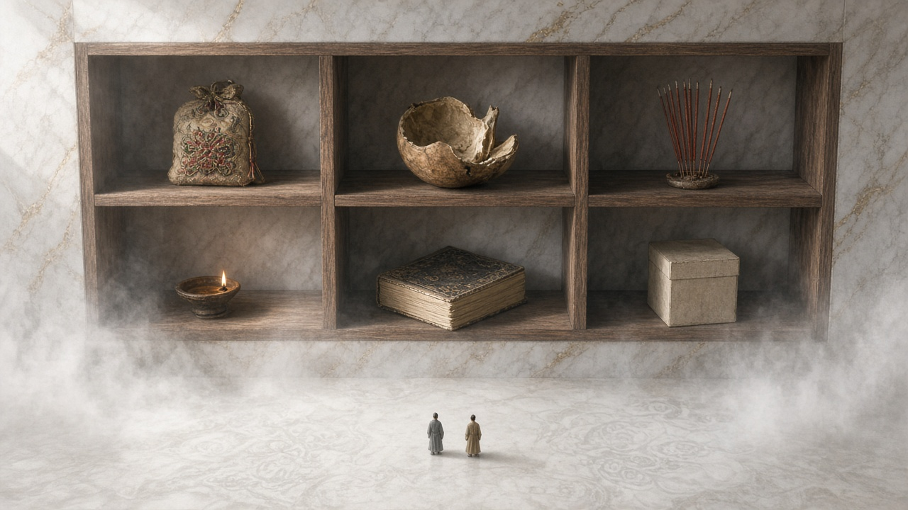
虛擬商城分四類，判準是「只在遊戲裡才有意義」：
真物件（水晶、鹽燈、五帝錢、銅雕）不在這裡賣，最多做櫥窗展示。
虛擬商城分四類，判準是「只在遊戲裡才有意義」：
真物件（水晶、鹽燈、五帝錢、銅雕）不在這裡賣，最多做櫥窗展示。
只開三類（隨身飾品、供品耗材、數位收藏），其餘三類先留空櫃並標「還沒開」。
原本把水晶、鹽燈、五帝錢放進虛擬商城，等於賣「真東西的圖片」。改成四類之後，虛擬只賣遊戲內才有價值的東西，貨架就不會變成實體商品的目錄。
四件入門飾品：平安符（布面刺繡 90 塵）、御守（季節色 120 塵）、香囊（檀香填充 60 塵）、紅繩（45 塵）。
全部是外觀類、只花緣塵、不影響任何數值。設計重點是「摸得到的質感」：磨舊的邊角、繡線的粗細、繩結的鬆緊，都寫進商品描述，讓玩家覺得拿到的是物件而不是圖示。
四件入門飾品：平安符（布面刺繡 90 塵）、御守（季節色 120 塵）、香囊（檀香填充 60 塵）、紅繩（45 塵）。
全部是外觀類、只花緣塵、不影響任何數值。設計重點是「摸得到的質感」：磨舊的邊角、繡線的粗細、繩結的鬆緊，都寫進商品描述，讓玩家覺得拿到的是物件而不是圖示。
只做平安符與紅繩兩件、一種材質、可換 2 字，其餘兩件等第二批。
入門價位要落在「一天的緣塵買得到」的區間（45–120 塵），讓第一次消費不需要掏現金；先建立「這裡的東西有質感」的印象，後面的高價品才有信任基礎。
中價位飾品四件：佛珠（108 顆木質 180 塵）、念珠手串（單圈 240 塵，每 9 顆一枚小銀環）、銅鈴（掌心大小 150 塵）、吊墜（300 塵，可選木／銅／石三種材質）。
這一組是收藏線的起點：同一款式不同材質，價格階梯做出「再往上還有」的感覺，但不影響任何能力。
中價位飾品四件：佛珠（108 顆木質 180 塵）、念珠手串（單圈 240 塵，每 9 顆一枚小銀環）、銅鈴（掌心大小 150 塵）、吊墜（300 塵，可選木／銅／石三種材質）。
這一組是收藏線的起點：同一款式不同材質，價格階梯做出「再往上還有」的感覺，但不影響任何能力。
只做手串與銅鈴兩種材質（木／銅），佛珠與吊墜等第二版。
收藏線需要「同一件東西的不同版本」，不是更多不同種類。材質分級能讓同一個模型複用、成本低，但玩家感覺得到階梯；這也是飾品類能撐起中價位的原因。
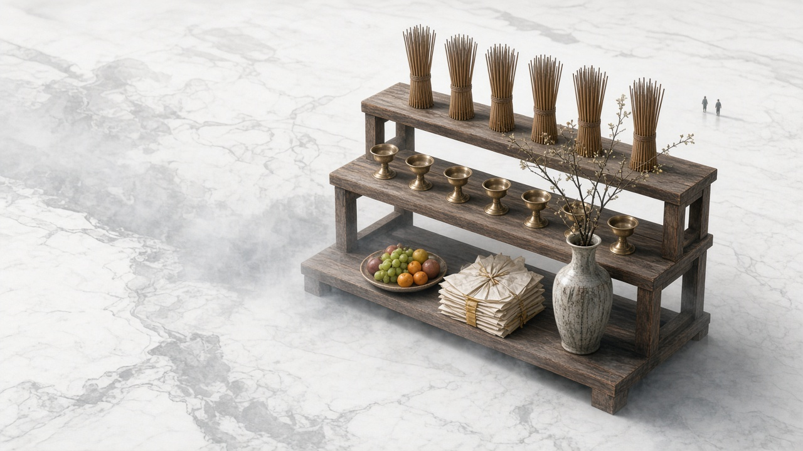
供品與耗材是消耗品：香（小 15／中 45／大 120 塵）、燭（30 塵）、花（60 塵）、果（90 塵）、金紙（45 塵）。
買了就在儀式裡用掉，不進背包、不佔外觀位。這一類是整個經濟體裡唯一的「重複購買」來源，也是把現實廟宇的消費習慣搬進來的部分：真實廟裡最常買的就是香與金紙。
供品與耗材是消耗品：香（小 15／中 45／大 120 塵）、燭（30 塵）、花（60 塵）、果（90 塵）、金紙（45 塵）。
買了就在儀式裡用掉，不進背包、不佔外觀位。這一類是整個經濟體裡唯一的「重複購買」來源，也是把現實廟宇的消費習慣搬進來的部分：真實廟裡最常買的就是香與金紙。
只做香（三種尺寸）與金紙，其餘三項等第二版。
沒有消耗品，經濟只有一次性收入。香與金紙是現實廟宇最常被購買的品項，把它們做成低價消耗品，能建立「每次來都要買一點」的習慣，同時不汙染外觀收藏線。
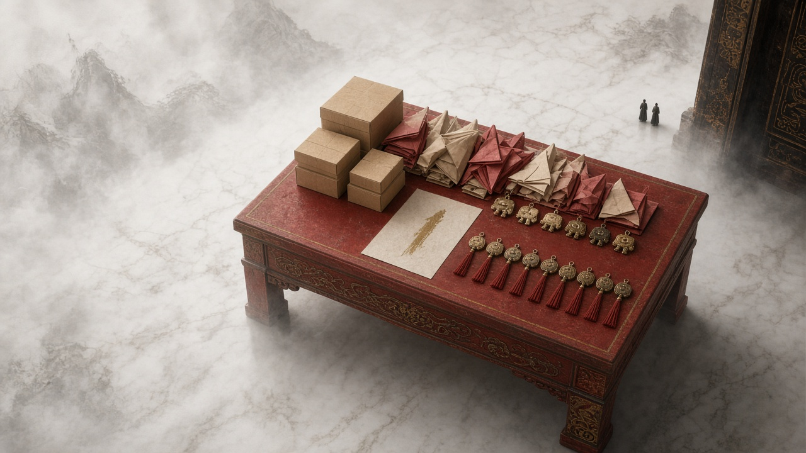
四組節慶限定：中元普渡箱（480 塵，含供品組合）、頭香（600 芥子，需在活動當日排隊取得）、遶境周邊（90–240 塵，毛巾、香旗、小神轎吊飾）、生肖御守（180 塵，每年換版）。
節慶商品有明確上架與下架日，過期即下架，已擁有的保留；稀缺感來自日曆，不靠「限時倒數」話術逼單。
四組節慶限定：中元普渡箱（480 塵，含供品組合）、頭香（600 芥子，需在活動當日排隊取得）、遶境周邊（90–240 塵，毛巾、香旗、小神轎吊飾）、生肖御守（180 塵，每年換版）。
節慶商品有明確上架與下架日，過期即下架，已擁有的保留；稀缺感來自日曆，不靠「限時倒數」話術逼單。
只做中元普渡箱與生肖御守兩組；頭香與遶境周邊等活動系統（F10）上線後再接。
節慶是宗教產品最自然的消費時機，玩家本來就會在那幾天去廟裡。把商品綁在日曆上，比綁在「限量編號」上更誠實，也更好排期：什麼時候上架、什麼時候下架，全部寫得出來。
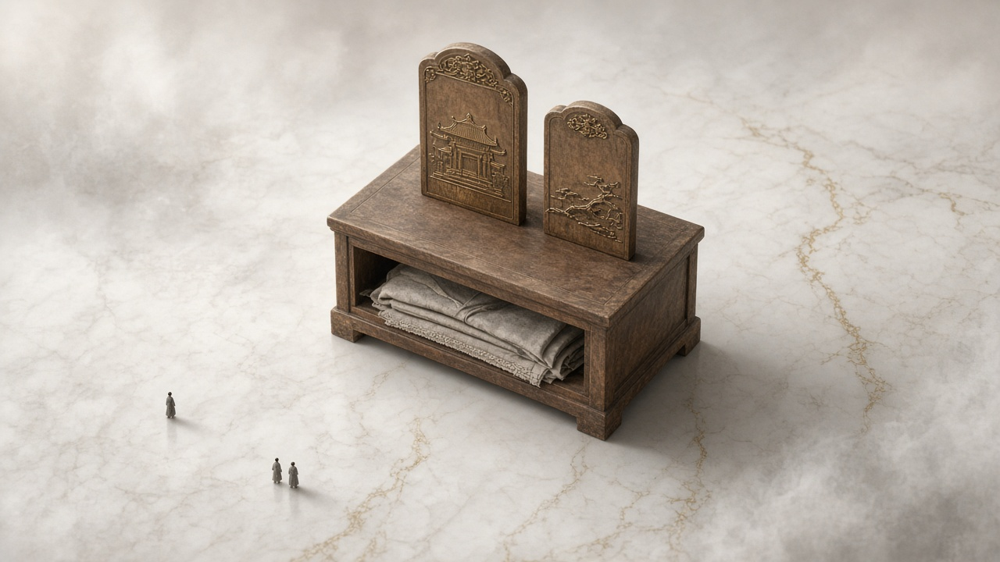
三條聯名線：
聯名品同樣禁止功效宣稱，且必須標示授權方與分潤方式。
三條聯名線：
聯名品同樣禁止功效宣稱，且必須標示授權方與分潤方式。
先做一條線（插畫家聯名數位商品），廟方與工藝師聯名等法務合約完成。
宗教商品的信任來自「誰做的」。聯名讓平台不必自己扮演權威，也能把真實廟宇的客流導進來；代價是毛利下降與審核變重，所以只做三條線、每條線同時最多三個夥伴。
定價規則三條：
判斷方法是一句話：這個東西會不會讓玩家「比較強或比較準」？會，就不賣（Q74）；不會，才決定用哪個幣。
先落實三條規則與六類對照表，價格只跑 L1／L3 兩個區間。
雙幣制最容易死在「什麼都能用現金買」。這張矩陣把判斷變成三步檢查，任何新商品上架前跑一次，就不會有人在第一季開出「加速包」。
每件商品有四種狀態：上架（可購買）、輪替（暫時下架，之後回來）、絕版（不再生產，已擁有的保留並標記）、復刻（絕版品在特定節慶回歸，價格不變）。
輪替與復刻是貨架的呼吸：讓玩家每隔幾週有理由回來看，而不是一次把東西買完。
先做三態（上架／絕版／復刻），輪替等第二季再開。
貨架如果永遠一樣，玩家逛兩次就不逛了。輪替與絕版讓「這個月有什麼」變成回訪理由，而且不需要新增機制，只要排檔期。
變現看四個數字：
另設一個護欄指標：因「付錢變強」引發的負評比例，必須為 0。這些數字全部是提案值，第一季跑完用實測替換。
變現看四個數字：
另設一個護欄指標：因「付錢變強」引發的負評比例，必須為 0。這些數字全部是提案值，第一季跑完用實測替換。
先做三張卡：付費轉化、品類貢獻、護欄指標；ARPPU 與季節曲線等三個月資料。
投資人不會問「你賣什麼」，會問「誰在付錢、付多少、什麼時候付」。這四個數字就是答案，而且它們不涉及使用者隱私，可以對外講。
五句禁語：
商品頁只能寫材質、尺寸、工序、民俗用途與歷史背景，不能寫效果。開光服務寫成「由廟方於指定時段進行儀式，提供照片為證」，不能寫「開光後更有效」。另外要處理：實體商品的標示、發票與稅、未成年人購買限制。
五句禁語：
商品頁只能寫材質、尺寸、工序、民俗用途與歷史背景，不能寫效果。開光服務寫成「由廟方於指定時段進行儀式，提供照片為證」，不能寫「開光後更有效」。另外要處理：實體商品的標示、發票與稅、未成年人購買限制。
先做五句禁語＋18 個近似詞的自動掃描，人工複核一遍全站既有商品。
這個品類的風險不在東西做得好不好，而在文案。把禁語清單寫成可掃描的規則、把客服話術寫死，才能規模化賣而不出事。
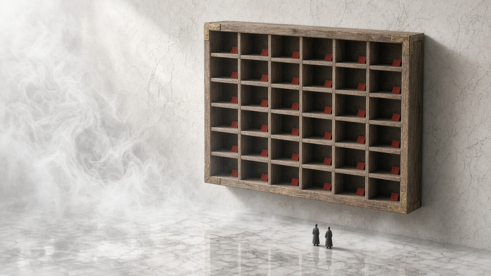
虛擬商城 24 件（外觀、風水、供品、收藏）。上架順序按「毛利 × 動機強度」排：
首批 12 件見附錄 A3，其餘 24 件列在這裡排隊。
虛擬商城 24 件（外觀、風水、供品、收藏）。上架順序按「毛利 × 動機強度」排：
首批 12 件見附錄 A3，其餘 24 件列在這裡排隊。
只排前 12 件（附錄 A3 那 12 件），其餘 24 件先列表不定日期。
商品線最容易失控的地方是「一直加」。先用 36 件定上限、每季只動 4–8 件，既能保持新鮮，也不會讓美術與法務追不上。
四組市場對照。
四組市場對照。
先放三組數字（台灣廟宇文創、日本御守、開運電商單品），全球市場只放一頁附註。
投資人問「市場在哪」，最好的答案不是總量，而是「已經有人用這個方式賺到錢」。四組對照各自回答一個問題：廟宇文創證明文化商品能賣、御守證明年輕人會買、開運電商證明單品能爆、全球報告證明趨勢在長。
判準一句話：這個東西的價值是不是只有在遊戲裡才存在？如果是（角色身上的掛飾、場景裡的燈、一次儀式要燒的香、經冊的封面），就放虛擬商城；
如果它本來就是一個真實物件（水晶、鹽燈、五帝錢、銅雕貔貅），就只能放實體商城，最多在虛擬商城做「櫥窗展示」，不販售。
判準一句話：這個東西的價值是不是只有在遊戲裡才存在？如果是（角色身上的掛飾、場景裡的燈、一次儀式要燒的香、經冊的封面），就放虛擬商城；
如果它本來就是一個真實物件（水晶、鹽燈、五帝錢、銅雕貔貅），就只能放實體商城，最多在虛擬商城做「櫥窗展示」，不販售。
先套用四類判準與 6 件移出名單，其餘商品逐件補歸類理由。
原本把水晶、鹽燈、五帝錢放在虛擬商城，等於賣一個「真東西的圖片」——玩家買不到質感，平台也拿不到真錢。改成四類判準後，虛擬只賣遊戲內才有價值的東西，實體只賣真物件。
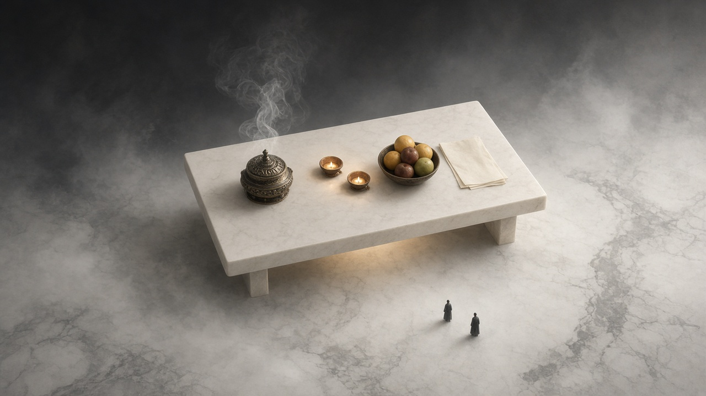
兩類虛擬專屬商品：
兩類虛擬專屬商品：
先做蓮花燈與桌布兩件陳設、香與金紙兩種消耗。
虛擬商品的優勢是「會變」與「不佔庫存」。把這兩類做好，玩家才有理由在遊戲裡花緣塵，而不是把虛擬商城當成實體商品的目錄。
六件紀錄外觀：經冊裝幀（布面／皮革／描金 360）、經書籤（可刻 2 字 45）、伴靈掛飾（180）、願望牆樣式（四款 240）、日記封面（四款 200）、香錄封皮（三款 150）。
全部只改外觀：不改內容、不改容量、不改別人的可見範圍。這條線是虛擬商城裡最安全的高毛利品類，因為它碰不到任何數值。
六件紀錄外觀：經冊裝幀（布面／皮革／描金 360）、經書籤（可刻 2 字 45）、伴靈掛飾（180）、願望牆樣式（四款 240）、日記封面（四款 200）、香錄封皮（三款 150）。
全部只改外觀：不改內容、不改容量、不改別人的可見範圍。這條線是虛擬商城裡最安全的高毛利品類，因為它碰不到任何數值。
只做經冊裝幀與日記封面兩件、各兩款。
外觀類是虛擬商城裡最乾淨的收入：玩家為「這是我的」付費，而不是為數值付費。這也回應了禁區——我們賣樣子，不賣能力。
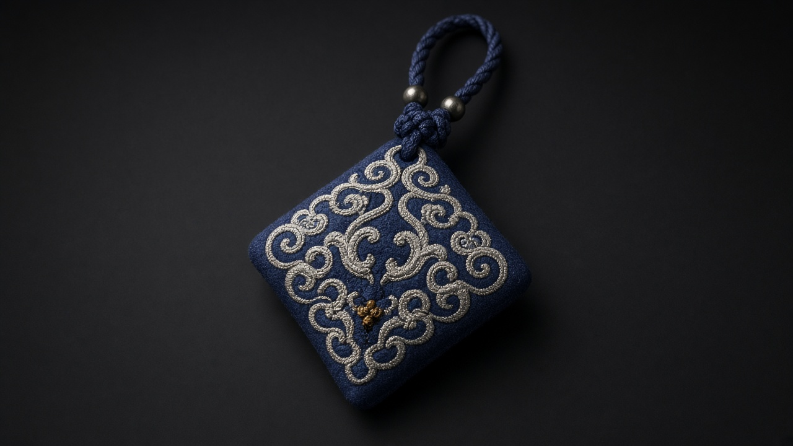
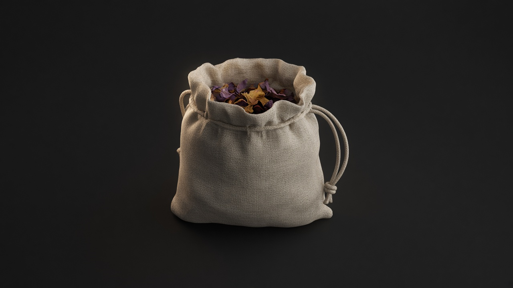
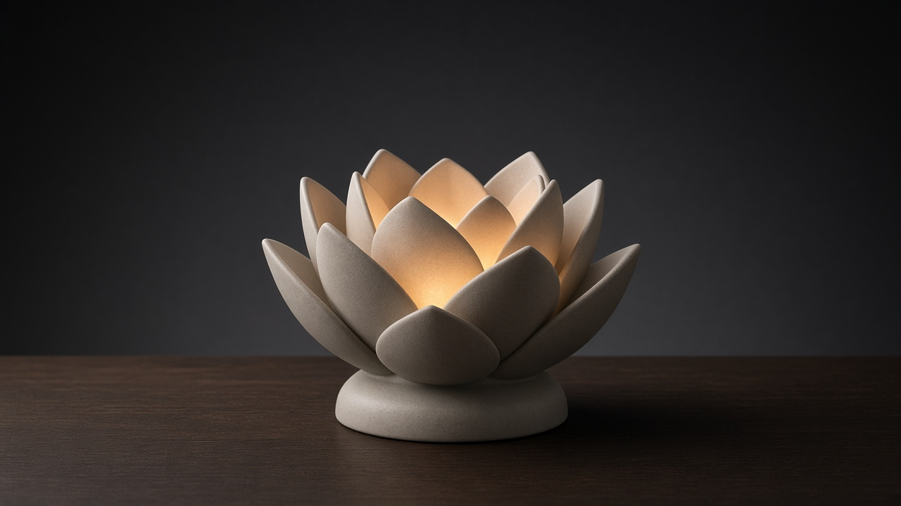
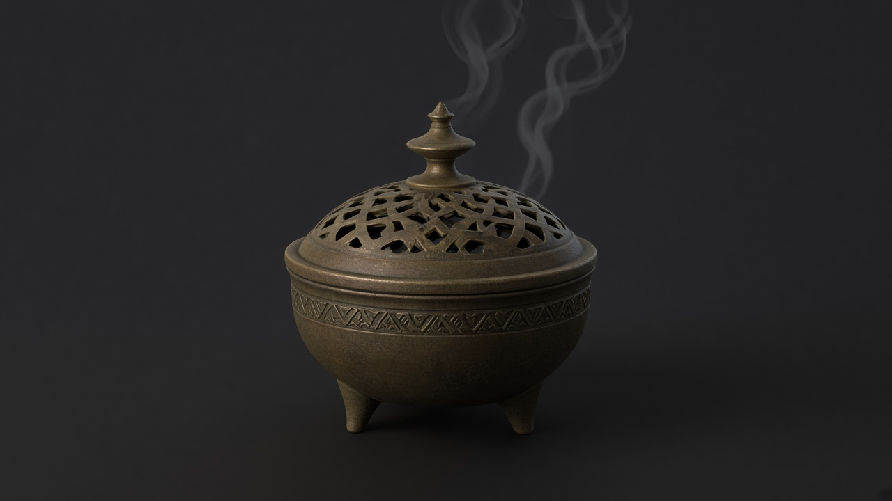
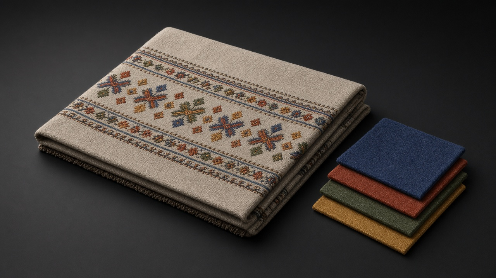
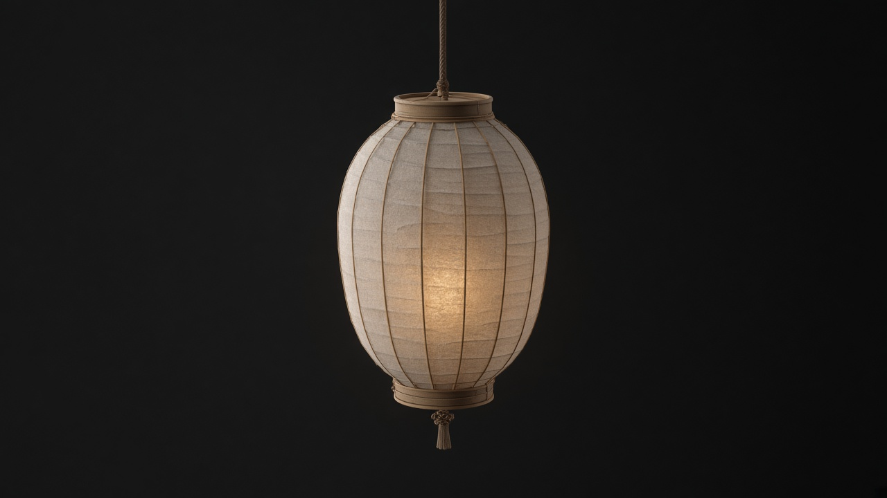
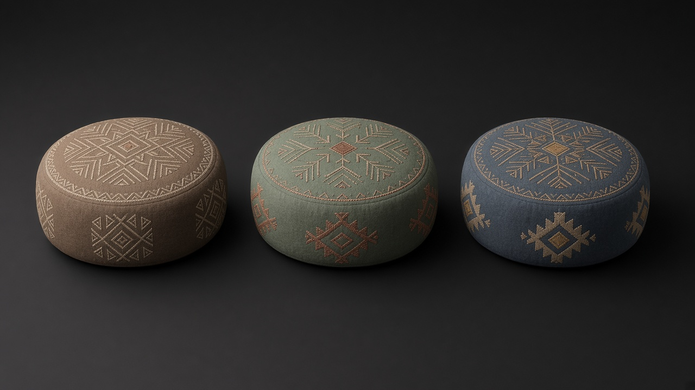
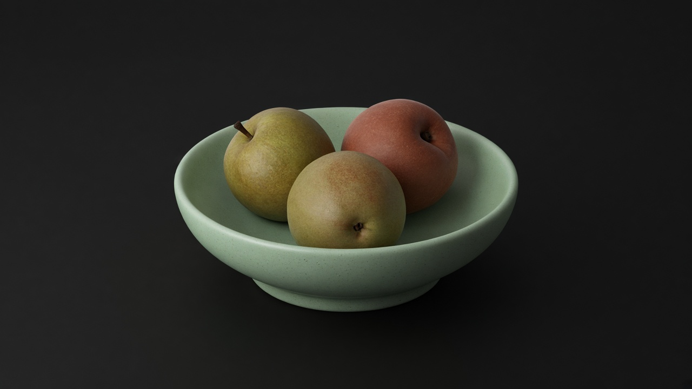
36 件真實商品，美金／人民幣計價；其中 19 件雙棲，買實體附對應虛擬外觀。
我在廟裡逛完，走到隔壁的小店，用信用卡買了一枚平安符和一串佛珠，三天後寄到家；過年時我線上點了一盞寫著我名字的光明燈。
邊界：—
兩個商城分開，因為結帳邏輯完全不同：虛擬商城（F12）賣外觀與收藏，用緣塵結帳、即時交付、無物流；
實體商城（本板塊）賣真實物件，用新台幣結帳、有庫存、有物流、有發票、有退換貨。分開之後，法規責任不會汙染遊戲經濟，玩家也不會在結帳時搞混。
先開實體商城六類各一件（6 品項），其餘排隊；虛擬商城維持現狀。
混在一起的代價是玩家以為緣塵可以買真東西。分開之後，虛擬商城保護遊戲經濟，實體商城扛真實商業責任。
六類實體商品：
每類對應一個購買動機與一種毛利結構。
六類實體商品：
每類對應一個購買動機與一種毛利結構。
先開三類（隨身飾品、供品香品、殿堂實物），其餘等供應商到位。
實體商品最容易死在什麼都賣一點。先分六類、每類 6 件，用毛利與動機兩個軸排順序，才不會把資源攤平在 36 個都很普通的商品上。
| 項目 | 值 | 備註 |
|---|---|---|
| 隨身飾品 6 件 | US$5.9–18.9／¥35–134，毛利率 34–50% | |
| 風水小物 6 件 | US$12.5–53.5／¥89–379，毛利率 30–46% | |
| 供品香品 6 件 | US$4.9–38.0／¥35–269，毛利率 35–45% | |
| 殿堂實物 6 件 | US$19.0–190.9／¥134–1349，毛利率 76–92% | |
| 收藏延伸 6 件 | US$9.0–47.9／¥64–334，毛利率 40–55% | |
| 聯名工藝 6 件 | US$8.9–215.9／¥54–1529，毛利率 45–52% |
實體價格分五帶：入門 180–390（紅繩、香、金紙、明信片）、中價 480–690（御守、吊牌、文昌筆、聯名御守）、收藏 880–1,680（手串、佛珠、水晶、鹽燈、吊墜）、殿堂 2,000–2,400（瓦片、聚寶盆）、頂級 6,000 以上（鐘鼓、木雕）。
毛利率依是否含製造成本而定：有製造的 30–55%；純服務（點燈、認養）76–92%。
實體價格分五帶：入門 180–390（紅繩、香、金紙、明信片）、中價 480–690（御守、吊牌、文昌筆、聯名御守）、收藏 880–1,680（手串、佛珠、水晶、鹽燈、吊墜）、殿堂 2,000–2,400（瓦片、聚寶盆）、頂級 6,000 以上（鐘鼓、木雕）。
毛利率依是否含製造成本而定：有製造的 30–55%；純服務（點燈、認養）76–92%。
先跑五帶定價與三檔折扣模擬（原價、9 折、85 折）。
實體定價不能憑感覺。把五個價格帶與毛利率寫死，議價與促銷才有底線；也讓投資人看到哪一類是量、哪一類是利潤。
實體商城的金流與稅務：
殿堂實物（點燈、認養）若屬捐贈性質，需另立收據流程並與會計師確認。
實體商城的金流與稅務：
殿堂實物（點燈、認養）若屬捐贈性質，需另立收據流程並與會計師確認。
先開信用卡一種付款、電子發票、每日對帳；超商與行動支付第二批。
實體電商最容易在稅務上出事：漏開發票、捐贈與商品混帳、退款沒開折讓。把金流費、稅、撥款日寫進流程，規模放大時才不會爆。
履約四段：
物流成本：本島 US$2.9–2.9／¥9–17、離島 US$3.9–5.0／¥26–35、海外另計。開光為加值服務，收費 US$11.5／¥79，但不得宣稱效果。
履約四段：
物流成本：本島 US$2.9–2.9／¥9–17、離島 US$3.9–5.0／¥26–35、海外另計。開光為加值服務，收費 US$11.5／¥79，但不得宣稱效果。
只做本島配送與不開光選項，先跑通一次完整履約。
實體線的信任建立在「東西真的會到」。四段狀態機＋開光照片是最便宜的信任工具，也是投資人問履約時最直接的答案。
庫存策略三條：
供應商至少兩家，主要品項要有備援，避免單點斷貨。
庫存策略三條：
供應商至少兩家，主要品項要有備援，避免單點斷貨。
只做常態品首批 50 件與安全庫存告警，節慶備貨等第一次活動。
宗教商品的需求集中在少數日子，備貨抓錯就是壓一整年庫存。三色標籤＋預購制讓資金效率最大化，也讓節慶不出現「什麼都賣完」的場面。
退換貨規則：
客服話術三不：不評論功效、不辯論信仰、不承諾結果；遇到「我覺得不靈」→說明商品層面的處理（可退、可換），不進入信仰討論。
退換貨規則：
客服話術三不：不評論功效、不辯論信仰、不承諾結果；遇到「我覺得不靈」→說明商品層面的處理（可退、可換），不進入信仰討論。
先做瑕疵換新與 7 天鑑賞，客製與開光規則寫進下單頁。
宗教商品的退貨常帶著情緒。規則寫清楚、話術不辯論，能把「我覺得不靈」留在客服層級，不會變成社群上的截圖。
實體商品的五個責任：
另外：商品文案一律不得寫功效（保平安、避邪、招財、治病、保證靈驗）——這一條與虛擬商城共用同一份禁語清單。
實體商品的五個責任：
另外：商品文案一律不得寫功效（保平安、避邪、招財、治病、保證靈驗）——這一條與虛擬商城共用同一份禁語清單。
先做五欄標示＋禁語掃描，人工複核全站 36 件。
虛擬商品的風險在文案，實體商品還多了標示、安全與食品。五張表做完，才敢規模化上架；否則一次稽查就可能讓整條線停擺。
殿堂實物六件：光明燈（US$19.0／¥134／年）、太歲燈（US$25.5／¥179／年）、瓦片認養（US$63.9／¥449，刻名永久）、鐘鼓認養（US$190.9／¥1349，銘牌永久）、聚寶盆（US$76.0／¥539）、八卦鏡（US$50.9／¥359）。
前四件是與廟方合作的服務型商品，廟方分潤 40%，平台負責線上銷售、金流與客服。燈位與銘牌數量由廟方實際空間決定，是真限量，不能為了衝量造假。
殿堂實物六件：光明燈（US$19.0／¥134／年）、太歲燈（US$25.5／¥179／年）、瓦片認養（US$63.9／¥449，刻名永久）、鐘鼓認養（US$190.9／¥1349，銘牌永久）、聚寶盆（US$76.0／¥539）、八卦鏡（US$50.9／¥359）。
前四件是與廟方合作的服務型商品，廟方分潤 40%，平台負責線上銷售、金流與客服。燈位與銘牌數量由廟方實際空間決定，是真限量，不能為了衝量造假。
先做光明燈一項，與一家廟方試辦一年。
這是整個模型裡毛利最高、也最需要夥伴的一類。一家廟試辦成功，就能複製到其他廟；反過來說，沒有廟方合作，這個板塊就只剩一般商品。
四個實體節慶檔期：
四段合計〔提案〕佔實體營收 30–35%。節慶品提前 45 天備貨，賣完不補，過期下架。
四個實體節慶檔期：
四段合計〔提案〕佔實體營收 30–35%。節慶品提前 45 天備貨，賣完不補，過期下架。
先做中元與生肖兩檔，其餘等遶境與頭香的廟方合作。
節慶是實體電商最有把握的一段：需求時間明確、商品可預測、庫存可控制。四檔做好，全年營收就有節奏，不必靠平日硬推。
實體線六個指標：
另有消費者相關：新客獲取成本（拉一個新客的成本）與首購轉化。
實體線六個指標：
另有消費者相關：新客獲取成本（拉一個新客的成本）與首購轉化。
先做四個：平均每筆訂單、退貨率、毛利率、庫存週轉。
實體線的失敗通常不是賣不動，是「賣了但不賺」：退貨高、庫存壓、客單低。六個數字擺在一起看，才不會只盯營收。
36 件 品項 分六類、每類 6 件。上架順序：
每季上 4–6 件，避免一次壓太多庫存。
36 件 品項 分六類、每類 6 件。上架順序：
每季上 4–6 件，避免一次壓太多庫存。
先上第一批 6 件（飾品 3＋供品 2＋殿堂 1）。
36 件是上限，不是目標。每季只動 4–6 件，美術、法務、供應商才跟得上；也讓每一件都有機會被賣好，而不是一起淹沒。
19 件適合雙棲的商品，買實體就送對應的虛擬版本：佛珠（US$40.9／¥289）附角色手上的佛珠手串；
經冊裝幀（US$38／¥269）附虛擬經冊同款封面；香（US$7／¥49）附 3 束數位香；伴靈玩偶（US$21.9／¥154）附伴靈掛飾。
贈品是「同一件東西的另一個載體」，不是折價券，不能轉賣、不能兌現。玩家買了真東西，遊戲裡也看得到它。
19 件適合雙棲的商品，買實體就送對應的虛擬版本：佛珠（US$40.9／¥289）附角色手上的佛珠手串；
經冊裝幀（US$38／¥269）附虛擬經冊同款封面；香（US$7／¥49）附 3 束數位香；伴靈玩偶（US$21.9／¥154）附伴靈掛飾。
贈品是「同一件東西的另一個載體」，不是折價券，不能轉賣、不能兌現。玩家買了真東西，遊戲裡也看得到它。
先做 5 件（佛珠、經冊、香、平安符、伴靈玩偶）驗證領取率。
這是虛擬與實體唯一該連動的地方：同一件東西的兩種載體。它讓實體商品多一個買理由（遊戲裡看得到），也讓虛擬商城多一個入口（買真東西的人被帶進遊戲），而且不需要打折。
兌換機制四件事：
目標：領取率 60%、濫用率低於 1%、退貨回收 100%。
兌換機制四件事：
目標：領取率 60%、濫用率低於 1%、退貨回收 100%。
先做 5 件的紙卡發碼與綁定、退貨撤銷。
贈品最怕變成第二個貨幣。一物一碼、綁定即失效、退貨即回收，三條規則寫死，才不會出現「買十件拿去網路轉賣虛寶」的套利。
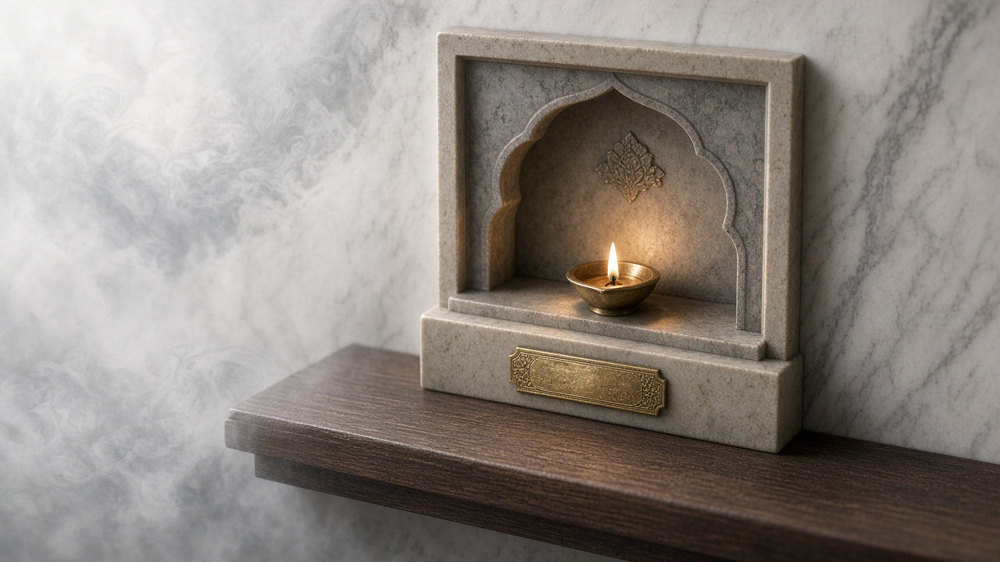
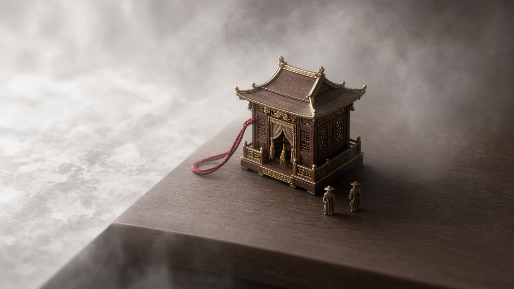
| 實體商品 | 虛擬贈品 | 緣塵等值 |
|---|---|---|
| 平安符（布面刺繡） 隨身飾品 · US$9.0／¥64 | 平安符（角色配戴） | 90 緣塵 |
| 御守（季節色） 隨身飾品 · US$11.0／¥79 | 御守（季節色） | 120 緣塵 |
| 紅繩（手編） 隨身飾品 · US$5.9／¥35 | 紅繩（手腕） | 45 緣塵 |
| 香囊（檀香填充） 隨身飾品 · US$8.9／¥54 | 香囊（腰側） | 60 緣塵 |
| 香（盒裝） 供品耗材 · US$7.9／¥44 | 香（數位，三尺寸） | 15／45／120 緣塵 |
| 燭（一對） 供品耗材 · US$5.9／¥35 | 燭（數位） | 30 緣塵 |
| 花（一束） 供品耗材 · US$8.9／¥54 | 花（數位） | 60 緣塵 |
| 果（一盤） 供品耗材 · US$11.0／¥79 | 果（數位） | 90 緣塵 |
| 金紙（一疊） 供品耗材 · US$4.9／¥35 | 金紙（數位） | 45 緣塵 |
| 佛珠（108 顆） 數位→實體收藏 · US$40.9／¥289 | 佛珠手串 | 240 緣塵 |
| 實體商品 | 虛擬贈品 | 緣塵等值 |
|---|---|---|
| 念珠手串 數位→實體收藏 · US$28.9／¥199 | 佛珠手串 | 240 緣塵 |
| 吊墜（玉／木） 數位→實體收藏 · US$47.9／¥334 | 吊墜（可換材質） | 300 緣塵 |
| 經書籤（銅刻） 數位→實體收藏 · US$9.0／¥64 | 經書籤（可刻字） | 45 緣塵 |
| 經冊（裝幀） 數位→實體收藏 · US$38.0／¥269 | 經冊裝幀（三款） | 360 緣塵 |
| 伴靈玩偶（小） 數位→實體收藏 · US$22.9／¥154 | 伴靈掛飾 | 180 緣塵 |
| 廟方聯名御守 聯名與工藝 · US$21.9／¥154 | 御守（季節色） | 120 緣塵 |
| 插畫明信片（6 張） 聯名與工藝 · US$10.0／¥69 | 願望牆樣式（四款） | 240 緣塵 |
| 經文紙膠帶 聯名與工藝 · US$8.9／¥54 | 日記封面（四款） | 200 緣塵 |
| 小神轎吊飾 聯名與工藝 · US$12.5／¥89 | 銅鈴（腰間） | 150 緣塵 |
| 商品 | 售價 US$／¥ | 成本 | 運費 | 金流 3.5% | 稅 5% | 淨毛利率 |
|---|---|---|---|---|---|---|
| 光明燈（年） 殿堂實物 | US$19.0 · ¥134 | 0.0 | 0.0 | 0.7 | 0.9 | 91.5% |
| 太歲燈（年） 殿堂實物 | US$25.5 · ¥179 | 0.0 | 0.0 | 0.9 | 1.3 | 91.5% |
| 鐘鼓認養 殿堂實物 | US$190.9 · ¥1349 | 28.6 | 0.0 | 6.7 | 9.5 | 76.5% |
| 瓦片認養 殿堂實物 | US$63.9 · ¥449 | 10.2 | 0.0 | 2.2 | 3.2 | 75.5% |
| 念珠手串 數位→實體收藏 | US$28.9 · ¥199 | 8.9 | 1.9 | 1.0 | 1.4 | 54.1% |
| 文昌筆 風水小物 | US$22.9 · ¥154 | 6.3 | 2.5 | 0.8 | 1.1 | 53.1% |
| 經冊（裝幀） 數位→實體收藏 | US$38.0 · ¥269 | 12.1 | 2.5 | 1.3 | 1.9 | 53.1% |
| 佛珠（108 顆） 數位→實體收藏 | US$40.9 · ¥289 | 13.3 | 2.5 | 1.4 | 2.0 | 52.9% |
| 聚寶盆（銅） 殿堂實物 | US$76.0 · ¥539 | 26.0 | 3.8 | 2.7 | 3.8 | 52.3% |
| 吊墜（玉／木） 數位→實體收藏 | US$47.9 · ¥334 | 17.1 | 1.9 | 1.7 | 2.4 | 51.8% |
| 工藝師木雕 聯名與工藝 | US$215.9 · ¥1529 | 82.5 | 4.8 | 7.6 | 10.8 | 51.1% |
| 八卦鏡（裝飾） 殿堂實物 | US$50.9 · ¥359 | 17.8 | 3.2 | 1.8 | 2.5 | 50.3% |
| 商品 | 售價 US$／¥ | 成本 | 運費 | 金流 3.5% | 稅 5% | 淨毛利率 |
|---|---|---|---|---|---|---|
| 貔貅（銅雕） 風水小物 | US$40.9 · ¥289 | 13.7 | 3.2 | 1.4 | 2.0 | 50.2% |
| 刺繡吊牌（可客製） 隨身飾品 | US$18.9 · ¥134 | 6.0 | 1.9 | 0.7 | 0.9 | 49.7% |
| 水晶（原石） 風水小物 | US$53.5 · ¥379 | 19.7 | 3.2 | 1.9 | 2.7 | 48.7% |
| 五帝錢 風水小物 | US$12.5 · ¥89 | 3.5 | 1.9 | 0.4 | 0.6 | 48.3% |
| 伴靈玩偶（小） 數位→實體收藏 | US$22.9 · ¥154 | 7.0 | 2.9 | 0.8 | 1.1 | 48.3% |
| 廟方聯名御守 聯名與工藝 | US$21.9 · ¥154 | 7.6 | 1.9 | 0.8 | 1.1 | 48.1% |
| 鹽燈（小） 風水小物 | US$47.9 · ¥334 | 17.1 | 3.8 | 1.7 | 2.4 | 47.8% |
| 葫蘆（開口） 風水小物 | US$15.0 · ¥109 | 4.1 | 2.5 | 0.5 | 0.8 | 47.5% |
| 透明御守 隨身飾品 | US$15.0 · ¥109 | 4.8 | 1.9 | 0.5 | 0.8 | 46.8% |
| 小神轎吊飾 聯名與工藝 | US$12.5 · ¥89 | 3.8 | 1.9 | 0.4 | 0.6 | 45.9% |
| 香囊（檀香填充） 隨身飾品 | US$8.9 · ¥54 | 2.2 | 1.9 | 0.3 | 0.5 | 45.4% |
| 遶境毛巾 聯名與工藝 | US$14.5 · ¥99 | 4.8 | 1.9 | 0.5 | 0.7 | 45.2% |
| 商品 | 售價 US$／¥ | 成本 | 運費 | 金流 3.5% | 稅 5% | 淨毛利率 |
|---|---|---|---|---|---|---|
| 御守（季節色） 隨身飾品 | US$11.0 · ¥79 | 3.3 | 1.9 | 0.4 | 0.6 | 44.2% |
| 經文紙膠帶 聯名與工藝 | US$8.9 · ¥54 | 2.4 | 1.9 | 0.3 | 0.5 | 43.1% |
| 插畫明信片（6 張） 聯名與工藝 | US$10.0 · ¥69 | 3.0 | 1.9 | 0.3 | 0.5 | 42.5% |
| 平安符（布面刺繡） 隨身飾品 | US$9.0 · ¥64 | 2.7 | 1.9 | 0.3 | 0.5 | 40.3% |
| 香（盒裝） 供品耗材 | US$7.9 · ¥44 | 2.2 | 1.9 | 0.3 | 0.4 | 39.5% |
| 普渡箱（中元） 供品耗材 | US$38.0 · ¥269 | 15.2 | 4.8 | 1.3 | 1.9 | 38.9% |
| 經書籤（銅刻） 數位→實體收藏 | US$9.0 · ¥64 | 2.9 | 1.9 | 0.3 | 0.5 | 38.1% |
| 紅繩（手編） 隨身飾品 | US$5.9 · ¥35 | 1.4 | 1.9 | 0.2 | 0.3 | 35.4% |
| 燭（一對） 供品耗材 | US$5.9 · ¥35 | 1.7 | 1.9 | 0.2 | 0.3 | 30.3% |
| 金紙（一疊） 供品耗材 | US$4.9 · ¥35 | 1.4 | 1.9 | 0.2 | 0.2 | 24.1% |
| 果（一盤） 供品耗材 | US$11.0 · ¥79 | 4.4 | 3.8 | 0.4 | 0.6 | 16.9% |
| 花（一束） 供品耗材 | US$8.9 · ¥54 | 2.9 | 3.8 | 0.3 | 0.5 | 16.2% |
場上有誰在提供服務：具名 6 類、背景 2 類，按適配度合併（Q209／Q219）。
走進大殿，遇到的是顧殿的人、帶路的童子、旁邊兩三個香客；店裡只有店員，沒有一個什麼都能問的人站在那裡。
邊界：—
最後收斂成八類：具名六類＝童子、傾訴師父（十人設，一位兼住持）、伴靈、結緣鋪店員、值殿、齋堂招呼；
背景兩類＝可互動背景人、義工／出坡。系統廣播、功德主身分、其他玩家都不算角色臉。
只做童子、值殿、店員三類；師父與伴靈分別走 F04／F05。
角色一多，廟就變成客服中心。八類是從現實廟裡真的會遇到的人收斂出來的；拿功能清單倒推，只會生出十幾張誰都不像的臉。
決定角色兼職的規則：同一類型、互不衝突的職能可以放同一個角色；會衝突的分開。例：傾訴師父不兼商城推銷——聽你心事的人不能同時賣你東西。
先把三個衝突案例寫死（師父／店員／值殿），其餘按同類型併。
合併是為了省角色，但省錯地方會把信任賣掉。傾訴之所以成立，是因為那個人不跟你做生意；這條界線比多一個角色重要。
童子負責引導：問來意、帶路、祈福的無聲回饋、受齋提醒、逐一參拜的邀請、節慶接手、夜巡、牌位填位交接、新手時幫伴靈取名。
他不解釋人生，只負責方向。
只做「問來意→帶路→交給主功能」三件事。
整座廟唯一能主動走向玩家的就是童子。他不提供答案，只提供方向，這樣他就不會變成什麼都要懂的萬能嚮導。
十位固定的師父（佛 5、道 5），一位兼住持。負責：傾訴、道觀八字解讀、佛廟求籤開示、儀軌三個時刻（迎賓、法會高潮、還願收尾）、法會科儀與主敲、中元疏文、追思與超度主持、住持門面；
後期紫微與占察。
只做一位師父（澄淵）＋傾訴，其餘九位後補。
產品的核心是關係。師父的功能順序是「聽→記得→才給」，而且他不能被拉去賣東西；一旦他推銷，傾訴就沒有了。
全程陪著你：從光團長成有形的伴，記得你說過的話，中段負責對話，休眠與喚醒接續上次話題，會在該停下來時引領提醒，也能讀你的記憶。
光團＋跟隨＋一句喚醒語。
伴靈一旦會說話，玩家就會拿它跟師父比，兩個角色互相稀釋。所以它只給存在感，不給內容。
結緣鋪裡唯一的臉：介紹商品、結帳、幫你換龕櫃外觀、挑伴靈掛飾、換日記裝幀。他不談人生，也不聽心事。
只做「介紹／結帳／換櫃」三件事。
他是整座廟唯一跟你收錢的人，所以臉必須是「店員」。收錢與傾訴分開，兩邊都乾淨。
負責顧殿：添香、整理、示範上香與跪拜的動作、環境互動（燭火、蒲團、鐘），平時的撞鐘也由他來，還有一種很弱的巡香存在感。
只做添香與一次示範。
廟裡的規矩是靠看會的，不是靠教的。所以值殿用示範而非說明，也避免他變成第二個會講道理的人。
齋堂招呼是「有人在等你吃飯」的那種招呼：不打分、不推銷，只問你吃過沒。它的作用是把廟從場景變成一個有人住的地方。
只做招呼＋入座＋收碗。
齋堂是整座廟最「日常」的地方，它讓玩家記得這不是一個只有儀式的空間。所以這裡的人越普通越好。
跟你一樣來拜的人：可以短互動（一句問候、一句抱怨天氣、一句「這殿很靈」），遶境時是跟在轎班旁邊的近身群眾，布施時他們是接的人之一。
不會變成朋友，不跟著你走。
只做「一句問候＋一句回應」的隨機香客。
沒有背景人，廟像樣品屋；背景人一多又會變成 MMO。所以他們只給「人氣」，不給關係。
掃地、搬供品、洗碗的人。布施時，接你那份東西的就是他們（或背景影子），只回短句謝謝；不另開具名臉，也不勸募。
只做「接過＋謝謝」。
布施一旦被表揚，就變成交易。讓接的人只是背景裡的一雙手，玩家才會真的覺得那是付出。
系統廣播（喇叭）、功德主（玩家自己的身分）、同修（其他玩家）——它們都存在，但都不該有一張臉。廣播用文字與環境音；
功德主只是一個身分標記；同修以剪影或稱謂出現。
播報用文字條＋環境音；同修用剪影。
一旦給廣播一張臉，玩家就會想跟他說話，然後我們就得準備台詞。世界觀是這樣一點一點被稀釋掉的。
把全部 54 條功能逐條放回八類身上，確認沒有哪一條「玩家做了卻沒有人回應」。這張表在 Q219 用主梳理原文詞重洗過，自創標籤全部清掉。
只核對主功能（F01–F12），子板塊後補。
上一版核對用「功能清單倒推」做，結果漏了八字還報全綠。改成用原文詞逐條放回去，洞才看得出來。
雙幣、雙軌、四層、三池。短循環與長收集都靠這四件事撐。
我拜一拜慢慢有緣塵，用來點香、放燈、換好看的；想更準、想被記得，錢買不到。抽卡先照 Wikigacha。
邊界：—
遊戲裡有兩種錢：緣塵（做儀式賺來的）和芥子（換高階虛擬東西用的）。它們不能互相換——這是刻意的。
只做緣塵一種幣；但資料結構要留 `currency` 欄位，否則後面加芥子要改資料表。
曾議單一貨幣，否。Q67 核准 C（緣塵＋芥子）並明說「之後可能再加幣種」。雙幣的理由無關多賣，是不讓主幣通膨：緣塵綁在時間與儀式上，一旦高階商品也用緣塵，牌位 3D 的 600 塵就會被拿去跟課金商品比價。Q72 另鎖「芥子↔緣塵不自由兌換」，所以兌換率寫 0。
你在廟裡做的每一小段，都會慢慢累積；做完一段再多給一筆。賺得慢、有上限，這是設計。
只做節點獎金（不分段），日帽照舊。分段是為了長儀式不無聊，可以後補。
| 項目 | 值 |
|---|---|
| 15–30 秒儀式 | ≈1 塵 |
| 軟日帽 | 90 |
| 硬頂 | 120 |
| 錢包軟上限 | 300 |
Q67／Q68 曾以「節點為主」→ 改雙軌。理由是：只有節點會讓長儀式（冥想 20 分鐘）變成等待；只有分段會讓完成沒有回報感。
| 項目 | 值 | 備註 |
|---|---|---|
| 折算 | 15–30 秒有效儀式 ≈ 1 塵 | 工程；禁止慢於 3–30 秒／塵 |
| 日帽 | 軟 90／硬頂 120 | |
| 錢包軟上限 | 300 | |
| 冥想 +12／5 分；跪拜 +1／+0.5；念經 +8／段；抄經 +36；顯化 +1；祈福 +6；傾訴 +12 | 冥想 +12／5 分；跪拜 +1／+0.5；念經 +8／段；抄經 +36；顯化 +1；祈福 +6；傾訴 +12 | |
| 還願／受齋／放生 +8；撞鐘 +2；參拜 +12；龕位探望 +8／日 | 還願／受齋／放生 +8；撞鐘 +2；參拜 +12；龕位探望 +8／日 | |
| 法會 | 上香 +8／求解讀 +20／節慶 +48 | |
| 遶境 +2／點；中元線上 +8／現場 +6 | 遶境 +2／點；中元線上 +8／現場 +6 |
緣塵只花在四種地方：日常（點香）、時令（節慶）、好看（外觀與記憶）、方便（桌位分享）。沒有第五種。
只做 L1 兩項（上香、天燈）。其餘三層可以後開，但層級顏色與「不混排」規則要先立。
| 項目 | 值 |
|---|---|
| 上香 小/中/大 | 15 / 45 / 120 |
| 天燈 素紙/金邊/考季 | 30 / 90 / 240 |
| 中元 VIP | 90 / 150 / 220 |
| 遶境獻禮 | 60 / 180 / 360 |
| 牌位 3D | 600 |
| 龕櫃外觀 | 90–300 |
| 新增供品 | 45–180 |
| 顯化延長／紙紋／字樣 | 75 / 45 / 60 |
| 香錄加層 | 60–240 |
| 伴靈外觀 | 30–240 |
| 桌位／分享 | 30–120 |
Q77 定四層，但沒處理「最貴商品 600 > 錢包上限 300」的算術衝突。兩個解法都攤開、不定案：這會影響哀悼流程的體感，屬業主決策。
| 項目 | 值 | 備註 |
|---|---|---|
| 上香 | 上香 | |
| 天燈（ | 天燈（ | |
| 中元 VIP（ | 中元 VIP（ | |
| 遶境獻禮 | 遶境獻禮 | |
| 中元現場溢價 ×1.5（線上基準 | 中元現場溢價 ×1.5（線上基準 | |
| 牌位 3D | 牌位 3D | |
| 龕櫃 | 龕櫃 | |
| 供品 | 供品 | |
| 顯化延長／紙紋／字樣 | 顯化延長／紙紋／字樣 | |
| 香錄加層〔工程參數〕 | 香錄加層 | 工程 |
| 伴靈外觀（進化內容不賣 | 伴靈外觀（進化內容不賣 |
現金只能買緣塵包。其他任何現金商品——實體、外觀、深讀、加時——都不能附贈緣塵。
只做一種緣塵包，其他現金商品全部延後。
Q135 三條：常規獲取只能靠儀式；唯一現金→緣塵入口是緣塵包；其他現金商品不得直接產生或附贈。
八樣東西永遠不賣：解讀準度、進度跳過、關係本體、廟況改寫權、頭香名分、伴靈進化、龕位風水位、記憶深度。
那一行小字＋八條清單。不需要功能開發。
Q74／Q77／Q135／Q152 四條鏈已鎖「付錢≠更準」。要落成可稽核的清單，否則運營第一季就會開出「加速包」。
卡包只有三種池子：經文（可以拿來念）、純收藏（只能看）、道具（可以穿戴）。沒有第四種。
只做經文池（12／100），其餘兩池後開。
Q193 已定三池結構，並明確覆蓋「五池（體驗類型軸）」與「功能獨立成池」兩個舊案。理由：池子的分類軸必須是「解鎖了什麼」；用「怎麼得到的」分類，玩家會用取得方式去理解內容，越分越亂。
卡只有三條路進來：用緣塵抽、玩到某個節點送你、直接用緣塵買一包。三條路都通，免費玩家也走得完。
節點獎勵＋抽卡兩條；直購後開。
| 項目 | 值 |
|---|---|
| 經文池 單抽/十連/直購 | 12 / 100 / ≈36 |
| 道具池 | 18 / 150 / ≈54 |
| 純收藏池 | 10 / 90 / ≈30 |
Q136 定三管道。三條路要等價：只有抽卡好用、贈送永遠給垃圾，第三條路就是裝飾。
有些卡解鎖的不是圖，是功能：紫微盤、伴靈新形態、頭香名分、師父立繪、顯化五階的寫作能力。它們不能自己開一個池。
只做兩張：伴靈五階形態、紫微進階命盤。其他後補。
Q195 定「兩條路（里程碑／抽滿 N）」，Q193 的鐵律是「功能不能有自己的卡池」。理由是：一旦功能可以抽，玩家就會用抽卡機率去理解產品深度，而功能解鎖應該由行為決定。
沒拿到的東西，要嘛灰著、要嘛乾脆不給你看。這頁處理的是「收集的節奏」：什麼時候該讓玩家知道還有什麼，什麼時候該留白——留白留得好，圖鑑才有追的慾望。
只做灰顯與經文區；全隱與三區後補。
Q132／Q133／Q134／Q194 定灰顯＋全隱並存、抽卡動畫要有、圖鑑分三池。分母只算公開卡，否則全隱卡讓完成度永遠到不了 100%，玩家會去查攻略，全隱就沒意義。
佛從《心經》開始，道從《道德經》開始。你一次拿到一段，全部小流程做完才裝訂成整本。
只做心經一本，四個小流程（暫定）。
Q130／Q131 定兩系第一本與「安住」是佔位名；Q190 定小流程→整部。跨館不互通、重複不給，否則玩家會用兩館刷同一本經。
| 項目 | 值 | 備註 |
|---|---|---|
| 佛系第一本 | 《心經》；道系第一本：《道德經》 | |
| 『安住』＝程式佔位名，非正式經書名 | 『安住』＝程式佔位名，非正式經書名 | |
| 小流程個數 | 不固定，由分段設計決定 | |
| 分段原則 | 自然段落／語意單元，一小流程對一段；具體選章後補 | |
| 心經小流程完成→經文小包 | 心經小流程完成→經文小包 | |
| 完整經冊 → 芥子 | 數量待定 |
新手引導刻意不講經濟：不教怎麼賺、不教怎麼省、不告訴你日帽。先讓人拜完一次、感覺到被回應，錢的事等他問再說。
什麼都不做。這一塊的 MVP 是「零」。
Q201 否決「新手講經濟三句」，Q206 指 GUIDE 四步是新流程佔位、必須改。「不做」也要寫成規格，否則下一版又會被加回去。
還沒拍板的東西集中在這裡：13 個有效消費點（原列 14，第 10 項已被 Q214 刪除）、10 條購買資格、現金分線、佛道對照。
不要當成定案實作。
這一頁不進 MVP：四組提案等拍板後才寫進正文，先不實作。
把「還沒定」寫成「已定」是規格最容易犯的錯，排期時會全部變成返工。三個數字已按實際改：佛道對照 9 列（原寫 10）、現金分線 5 段（原寫 4 類）、消費點 14 項中 1 項已被 Q214 刪除。
輕量的玩家互動。它讓廟記得你。
我給同修點香送一句話，進了八人共修房做早課；常來之後師父叫得出我名字。
邊界：—
每天可以給同修三次善意：一支短香、一句話。它是全產品最便宜的正向互動，也是「這裡有其他真人」這件事唯一不會變成聊天的證明。
只做一顆入口按鈕、點香與送話兩個動作、三次共用上限、一次送出結果和一張完成字卡；先不加入緣塵、卡、道具、排行榜或額外分享功能。
一天三次先讓善意保持稀罕，也避免玩家反覆送出造成干擾；點香與送話共用上限，能讓玩家每天在兩種做法間選擇。送出文字採短句，是為了先降低雙方負擔；被否掉的方向是無限次點香、可累積的數值獎勵、進入排行榜，以及把送話做成即時聊天，因為這些會把每日小善意變成刷資源或公訊息。
共修房早課晚課，最多八個人一起。人數上限不是技術限制，是設計選擇：八個人還聽得見彼此的呼吸，八十個人就只剩下計數器。
只保留早課與晚課各一個房間、每房最多八人、進入後選一個空蒲團、完成一次共同修練、離開時保存已完成進度；刪除跨房加入、課程表編輯、排名、聊天與連續課程。
用早課／晚課兩個固定入口與八人上限，先讓玩家容易找到同伴又保有安靜空間；否掉大型團隊課程、無上限報名與臨時組隊，避免房間擁擠、關係混亂及課程難以控制。
玩家透過日常勞動累積緣塵，讓廟逐步記住自己；緣塵能換緣簿印章、用品折扣，但不能用現金直接購買親密度。
只保留每日緣塵累積、每日親密度 +5 上限、四段被記得門檻、緣簿印章門檻與 5%–20% 用品折扣；先做緣簿頁面查看與每日結算，不做現金購買入口。
| 項目 | 值 |
|---|---|
| 日封頂 | +5 |
| 被記得 | 15 / 30 / 50 / 75 |
| 緣簿印章 | 20 / 50 / 80 / 100 |
| 折扣 | 5–20% |
用每日勞動讓玩家能看見自己被記住的過程，並用門檻與印章提供長期目標；緣塵來源與親密度上限採保守數值，避免刷任務快速跳過過程。被否掉的方向是直接花現金買親、用抽卡取得親密度，以及讓折扣改變用品品質；這些都會削弱勞動與被記得之間的關係。
| 項目 | 值 | 備註 |
|---|---|---|
| 每日親密度產出上限 | +5 | |
| 被記得門檻 | 15／30／50／75 | |
| 緣簿印章門檻 | 20／50／80／100 | |
| 用品折扣範圍 | 5%–20% | |
| 親密度貨幣 | 緣塵 | |
| 親密度購買方式 | 不可用現金直接購買 |
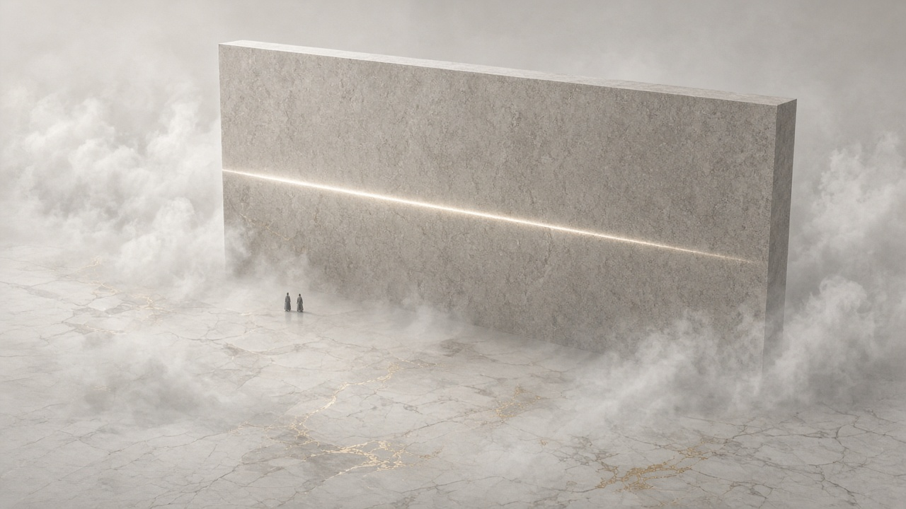
這是一段永遠不會開放的入口：玩家找不到排行榜，也看不到任何玩家之間的比較或對戰。
最小可上線版本是只有一個不可開啟的入口：點擊任何排行榜或競技按鈕時，顯示「這條線永遠不做」，提供返回上一頁；不做排行資料、戰績、對戰、道具、獎勵與分享功能。
這條線永遠不做，是為了讓同修只代表玩家願意互相陪伴，不把任何人變成可比較的角色或 NPC；被否掉的方向包括排行榜、積分榜、段位、競技場、玩家勝負、排名獎勵、排名分享與自動配對。
| 項目 | 值 | 備註 |
|---|---|---|
| 排行榜開放次數 | 0 次 | 工程 |
| 競技場開放次數 | 0 次 | 工程 |
| 排行榜或競技入口顯示 | 永遠不顯示 | |
| 禁止提示停留 | 3 秒 | 工程 |
| 排行榜項目數 | 0 項 | |
| 競技項目數 | 0 項 | |
| 可用排名資料筆數 | 0 筆 | |
| 可用勝負資料筆數 | 0 筆 |
東方引擎接進八字解讀，已鎖的流程不動。
我口述生辰，背後跑的是既有八字引擎，條子只吃精簡層。
邊界：—
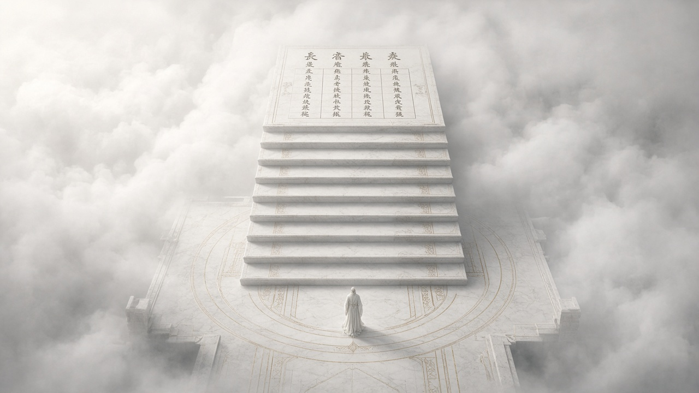
八字接線只做一件事：把命盤算好，挑精簡的一層餵給條子。完整命盤留在後面，不進玩家眼前——因為條子只能寫得下一件事。
只保留七層資料的逐層確認、16 個事件點的選擇式接線、錯點退回，以及完成後產出一張只含精簡層的人物卡；不加入自由拖曳、關係圖編輯、分享與裝飾效果。
七層加 16 點能保留人物資料的完整來源，又讓條子只吃精簡層，避免條子被雜訊帶偏；被否掉的是讓條子直接接收全部七層，以及改成自由拖曳的多人關係圖。
易經不排盤，只回答一句。三種起卦方式（三板）最後都收斂成一句掛在條子上，這是刻意的減法：問題越具體，答案才有用。
只保留已選三板、合成一句、收下一張紙條、離開後保留選擇；不做語音朗讀、不做歷史收藏、不做紙條分享。
已定案的核心是三板合成一句並只輸出可掛在條子上的短句，因此砍掉解說、語音、收藏與分享；被否掉的方向是逐板解讀、多句並列、加入數值與吉凶判定，避免玩家還要自己拼湊答案。
紫微是後期解鎖的進階盤：十四主星、另開一張條子。它不解鎖新玩法，只給已經在裡面的人一個「還有東西沒看完」的理由。
只保留後期入口、14 顆主星靜態星盤、點選查看名稱與簡短說明、已看標記及返回；刪除拖曳旋轉、路線節點與聲音動畫，內容深度減半後即可使用。
14 主星後期才開，能先讓玩家熟悉前期內容，再接觸完整星盤；被否掉的是第一版直接加入紫微連線，以及用多層路線、額外數值效果擴大前期負擔的方向。
| 項目 | 值 | 備註 |
|---|---|---|
| 主星數量 | 14 顆 | |
| 首次載入時間 | 3 秒 | 工程 |
| 單顆主星說明閱讀時間 | 5 秒 | 工程 |
| 完整瀏覽時間 | 15 秒 | 工程 |
| 完整瀏覽時間上限 | 25 秒 | 工程 |
| 解鎖階段 | 後期 | |
| 第一版可用狀態 | 不列入 | |
| 數值效果 | 無 |
玩家在佛廟抽出籤詩，並由師父說明這次祈願可能遇到的因果與提醒；它不用命盤計算，也不產生命中數值。
只做 1 個求籤入口、1 個籤筒、1 張固定籤詩字卡、1 段師父語音、收藏與返回；不做籤庫管理、不做抽籤機率、不做付費、不做任務或命盤連動。
佛廟求籤應像投籤問心，給玩家一段清楚、可收藏的提醒，而不是把願望交給另一套數值模型；因此本功能不接命盤、不算好運值，也不以抽籤直接判定任務結果。淘汰的方向包括依命盤推算吉凶、用籤直接開獎、把籤詩做成任務鎖鑰，以及讓籤筒只播放隨機音效而沒有可讀內容。
| 項目 | 值 | 備註 |
|---|---|---|
| 籤詩字數 | 14 字 | |
| 解讀字數 | 每籤 2 句、共 40 字內 | |
| 單次操作時長 | 35 秒內 | 工程 |
| 語音時長 | 每籤 20–35 秒 | 工程 |
| 每次抽取數量 | 1 支籤 | 工程 |
| 每日免費抽取次數 | 依 冷卻架構 | 見 A1 冷卻與產出架構 |
| 籤詩卡保存上限 | 依 冷卻架構 | 見 A1 冷卻與產出架構 |
命理引擎壞掉時，解讀流程不能斷：先給結論、後補細節，最差也要讓玩家拿到一張條子。這是把「外部依賴」當成一定會失敗來設計。
只做失敗提示、返回按鈕、重試按鈕與既有結果保留；不做自動恢復、通知、資源補償或多次重試佇列。
佛廟不接易�經流程，解讀失敗只顯示服務狀態，不另造占卜內容；採只掛接、不覆寫既有結果的方案，避免引擎升級或暫時故障讓玩家斷在流程中。被否掉的是遇錯直接跳首頁、清空本次解讀、用新引擎結果覆蓋舊結果，以及失敗後無限自動重試。
這份 PCD 怎麼維護。它跟玩法無關。
新同事打開文件，按 F 塊就能讀懂產品；要查某次怎麼定的，去 Q 索引。
邊界：—
主梳理 `2026-11-16-賽博寺廟主功能梳理.md`＝唯一根檔（SSOT）（Q203）
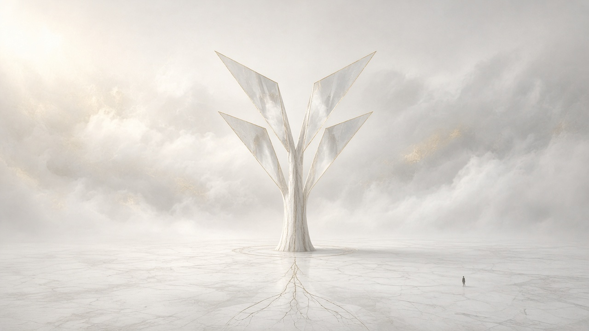
Q203 結掉 Q157-7；這頁是把鐵律寫成可驗收的形式，不是新規則。
當輪語音／聊天產出必須當輪寫進主梳理（Q154 作業約定）
Q154 + Q213；這頁把「作業約定」變成可稽核的欄位規則。
正文只保留最終選定的正確答案（Q220＝甲案）
Q220 結掉 Q157-9；Q157／Q158 是其上游條。
累積稿有價內容已全部併入主梳理，新增「累積稿歸檔合併（Q204）」板塊（Q204）
Q204 結掉 Q157-8；Q214 是「刪除而非擱置」的判例。
資料＝`pcd/data/blocks/f01–f19.json`；渲染＝`pcd/build_deck3.py`；設計＝`pcd/tools/deck.css`；互動＝`pcd/tools/shell.py`；產物＝單檔可離線 HTML
母檔的維護方式寫在這裡，避免接手的人從 HTML 反推。
整座廟記得的東西寫在同一張表上，不由每個功能各記一份。
我三個月後回來，童子的第一句話、師父記得的事、伴靈的樣子、香錄的頁數、廟裡的香火——都還在。
邊界：—
你是誰：信仰偏好、怎麼被稱呼、什麼時候來的、玩到哪了。所有其他系統都從這裡認識你。
player_id／faith_pref／master_id／created_at 四個欄位。
19 塊裡有 7 塊需要「知道玩家偏好」，但原本沒有任何一塊定義它。不補這塊，工程會各自在功能裡存一份玩家狀態，最後對不起來。
師父與伴靈記得你的事：誰、發生什麼、你當時什麼感覺、你答應過什麼。四類，不多不少。
只做人物與事件兩類。
Q197 定「後台彙整層，不另開第三本筆記本」。落地成四類欄位＋三條硬規則（記錯比不記糟／敏感不主動／說忘就忘）。
每完成一次儀式就多一筆紀錄，這是所有「廟記得你」的原料。它同時是營運的儀表板：哪個動作被做、被中斷、被跳過，都看這張表。
event_id／type／時間／coins 四個欄位。
F07 香錄是「頁面」，不是「資料」。不把資料擁有權切開，F07 與 F18 會各寫一份，最後兩邊頁數不一樣。
你求過什麼、寫過哪句「我是」。外求（祈福、天燈）與內求（日記）分開存，但可以互相找到。
只存日記原文與時間。
Q87 已定「結束可橋接顯化日記」，但沒說資料怎麼存。若兩邊各存一份，玩家改了日記、燈上的字不會變，會出現「兩個版本的願望」。
卡包與圖鑑只回答兩個問題：你抽到什麼、你還缺什麼。它不顯示機率、不顯示別人抽到什麼——因為一旦比較，收集就變成競賽。
card_id／pool／obtained_at 三個欄位。
F14 定三池與三管道，但沒定「持有狀態」長在哪。不切開，圖鑑與抽卡系統會各記一份，出現「抽到但圖鑑沒有」。
錢包與日帽決定「今天還能賺多少」：軟帽 90 提醒、硬帽 120 停手。它的目的不是限制玩家，而是讓「今天做完了」這句話有一個明確的時點。
balance 與 daily_earned 兩個欄位＋日帽檢查。
| 項目 | 值 |
|---|---|
| 日帽 | 軟 90／硬 120 |
| 錢包軟上限 | 300（提示不清零；可累積超過，見 Q221） |
F14 定了規則，F18 定「存哪」。特別把 300/600 的衝突留在這裡第二次標記，因為它是資料層的硬約束，不是文案問題。
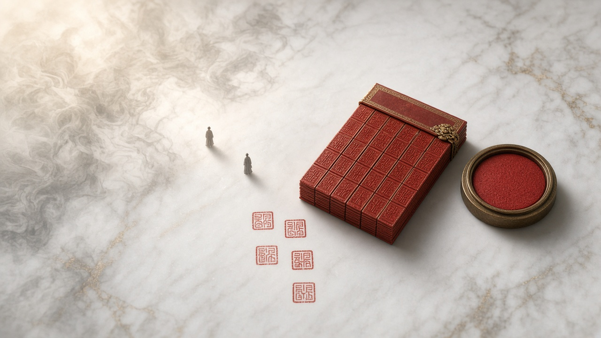
親密度是廟記得你的程度，用緣簿印章記錄，買不到。它把關係做成可累積但有上限的東西——上限是刻意的，因為無限成長最後只會變成數值通膨。
點數＋一個門檻（15）。
Q167／Q168／Q180 定門檻與封頂。按廟分開算：不分開的話佛道兩館會被同一份親密度串起來，等於逼玩家只在一個館累積。
這座廟現在長什麼樣：誰的法會留下了光、香火多旺、旗幟換了沒。一服一廟，所有人看到同一個。
只做「光」與「香火」兩種效果。
Q50–Q54 定了「頭牌改寫廟況、一服一廟、他人可見」，但沒定「怎麼存、怎麼衰減」。這是唯一一個多人共享的資料，寫法和其他九張表完全不同（要併發與上限）。
伴靈的狀態只有四件事：階級、名字、外觀、什麼時候在睡。狀態寫得少，是為了讓它可以被玩家一眼看完，而不是變成一張要研究的角色卡。
stage／name／sleep_started_at 三個欄位。
F05 定行為，F18 定狀態。「休眠不能變成懲罰」，資料上要能區分「在睡」與「不見了」。
資料的規矩講清楚：存在哪、誰能刪、離線時怎麼辦。這頁不是技術文件，是承諾——玩家要知道他的日記跟牌位不會因為換手機就消失。
單項刪除 + 離線佇列。
沒有任何一塊負責「資料的邊界」，但寺廟產品最敏感的就是這件事：玩家講的是心事。它不只是技術細節，是產品承諾。
19 塊攤在同一條時間線上：第 1 天、第 7 天、第 30 天、節慶日、一年後，玩家各遇到什麼。
我第一次進來 15 分鐘做了三件事；第七天我為了五階進化回來；第三十天師父叫得出我名字；中元那天全廟都在。
邊界：—
平台純白幾何緩慢呼吸 → 登梯 → 童子問來意 → 開始帶路（Q84／Q27）
第 0 天沒有額外的新手任務要設計；前面已定的流程長度（Q163）就是這 15 分鐘。
每日探望牌位 → 香錄多一頁 → 有紀錄可回看（Q72／Q100）
回來的原因是兩件每天會變的事，不是獎勵；所以日更與「有人記得你」要落在同一天。
伴靈由光團升聚形（Q124）
三件事撞在同一天是刻意的：「剛好都到了」比每天給一點更容易被記住。
守緣明伴解鎖（Q126）
第三十天之後留下來的理由不是獎勵，是「這裡有我」；痕跡要看得見，否則關係只存在資料庫裡。
中元：線上訂桌＋現場並存＋VIP 三檔（Q120／Q188）
平日穩定、假日爆量，靠三個節慶給曲線記憶點，不靠連假活動堆量。
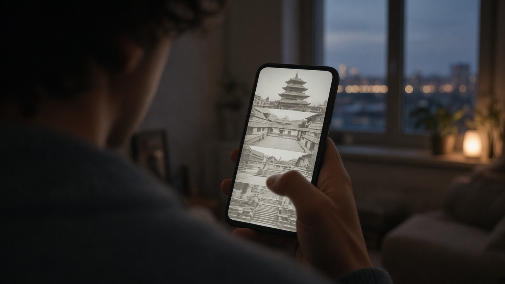
節慶提醒依本地時區（Q149）
長期留存靠日曆，不靠新鮮感：節慶、周年、紀錄三種循環各有回來的理由。
坎一：日帽賺滿就沒理由留（Q72）
三個坎都是規則造成的（日帽、親密度封頂、日記封存）；救援要針對這三個坎設計。
三種商品（陪伴、物件、名分）、五條水管、每 100 元留 32 元、13.4 萬人打平。
如果有人問這家公司靠什麼活，這一塊用白話講完：誰付錢、為什麼付、錢怎麼流、什麼時候打平、哪裡會壞。
邊界：—
這門生意只有三種商品：一是陪伴，玩家每月付一點錢，換取有人記得他、願意聽他說話；二是物件，玩家付一次錢，拿到一個可以拿在手上的東西；
三是名分，玩家付錢在廟裡留一個位置（一盞燈、一片瓦、一個名字），這件事由廟方執行，我們負責把人帶來並抽成。
三種商品的付錢理由完全不同，所以不能混在一起賣。
這門生意只有三種商品：一是陪伴，玩家每月付一點錢，換取有人記得他、願意聽他說話；二是物件，玩家付一次錢，拿到一個可以拿在手上的東西；
三是名分，玩家付錢在廟裡留一個位置（一盞燈、一片瓦、一個名字），這件事由廟方執行，我們負責把人帶來並抽成。
三種商品的付錢理由完全不同，所以不能混在一起賣。
先只賣陪伴與物件，名分等廟方合約簽好再開。
多數簡報死在我們是平台、是生態、是 IP。三張桌子講完，對方自己就能判斷哪一塊會先賺錢。
玩家付錢的三個真正理由：第一，有人記得他——上次講到哪裡、怕冷、面試沒上，這種被記住的感覺是訂閱的核心；
第二，東西有意義——不是因為會靈，而是因為它有來歷（哪座廟、哪個工藝師、哪一天開光），送人也拿得出手；
第三，真的拿到了——線上點一盞燈，廟方真的點亮並回傳照片，名字真的刻在瓦片上。這三件事都不能用保證有效來賣，一旦這樣賣就違法也失去信任。
玩家付錢的三個真正理由：第一，有人記得他——上次講到哪裡、怕冷、面試沒上，這種被記住的感覺是訂閱的核心；
第二，東西有意義——不是因為會靈，而是因為它有來歷（哪座廟、哪個工藝師、哪一天開光），送人也拿得出手；
第三，真的拿到了——線上點一盞燈，廟方真的點亮並回傳照片，名字真的刻在瓦片上。這三件事都不能用保證有效來賣，一旦這樣賣就違法也失去信任。
先把有來歷寫進每一件商品頁。
把為什麼買單講成因為有效是最快也最危險的路。講成被記得、有來歷、真的拿到，既合法，也才是這門生意真正在賣的東西。
五條收入水管：一是每月訂閱，玩家自己扣款；二是虛擬物件，玩家用遊戲裡的點數買；三是實體物件，玩家刷卡買真東西；
四是廟方服務抽成，玩家付給廟方的點燈與法會費用，我們抽四成；五是品牌授權，品牌付錢用我們的角色做聯名與廣告。
前三條自己收、自己扛客服；後兩條是別人付錢，我們提供人與內容。比例大約是：實體三成六、訂閱三成二、授權一成五、虛擬近一成、廟方服務近一成。
五條收入水管：一是每月訂閱，玩家自己扣款；二是虛擬物件，玩家用遊戲裡的點數買；三是實體物件，玩家刷卡買真東西；
四是廟方服務抽成，玩家付給廟方的點燈與法會費用，我們抽四成；五是品牌授權，品牌付錢用我們的角色做聯名與廣告。
前三條自己收、自己扛客服；後兩條是別人付錢，我們提供人與內容。比例大約是：實體三成六、訂閱三成二、授權一成五、虛擬近一成、廟方服務近一成。
先做自己收的三條，再談別人的兩條。
收入結構講不清楚，後面所有數字都不可信。五條水管各自標上誰付、多久一次，聽的人自己會判斷哪條最脆弱。
用最白話的方式說成本：每收到 100 元，31 元會直接花掉——做東西的材料 16 元、信用卡與支付手續費 3 元、要分給廟方的 5 元、跑 AI 與伺服器的 6 元；
另外 37 元是固定開銷——人事 19 元、內容製作 1 元、行銷 10 元、辦公室與法務等 7 元；
最後留下 32 元。最重要的不是 32，而是人事在營收小的時候會吃掉一切：第一年人事佔營收七成，第三年只佔不到兩成，所以這門生意要賺錢，靠的是讓同一批人服務更多人。
用最白話的方式說成本：每收到 100 元，31 元會直接花掉——做東西的材料 16 元、信用卡與支付手續費 3 元、要分給廟方的 5 元、跑 AI 與伺服器的 6 元；
另外 37 元是固定開銷——人事 19 元、內容製作 1 元、行銷 10 元、辦公室與法務等 7 元；
最後留下 32 元。最重要的不是 32，而是人事在營收小的時候會吃掉一切：第一年人事佔營收七成，第三年只佔不到兩成，所以這門生意要賺錢，靠的是讓同一批人服務更多人。
先算清楚一張每 100 元的紙條。
成本表最容易寫成一堆科目名，沒人看得懂。撕成三段，任何人心算就知道這門生意能不能活。
算給任何人看：平均每位活躍玩家一年只付 7.5 美元，扣掉直接成本後剩 5.2 美元。一年的固定開銷大約 70 萬美元（人事、內容、行銷、開發）。
用 70 萬除以 5.2，得到 13.4 萬人——每月要有十三、十四萬人固定回來，收入才剛好打平。
重點不是那個數字，而是每位玩家付得很少，所以我們必須靠人數與留存；這也解釋了為什麼力氣要放在讓人願意再回來，而不是一次賣很貴。
算給任何人看：平均每位活躍玩家一年只付 7.5 美元，扣掉直接成本後剩 5.2 美元。一年的固定開銷大約 70 萬美元（人事、內容、行銷、開發）。
用 70 萬除以 5.2，得到 13.4 萬人——每月要有十三、十四萬人固定回來，收入才剛好打平。
重點不是那個數字，而是每位玩家付得很少，所以我們必須靠人數與留存；這也解釋了為什麼力氣要放在讓人願意再回來，而不是一次賣很貴。
每月更新現在人數與打平人數兩個數字。
打平這件事一旦用人數講，全公司都聽得懂，也都能拿它做決定，包括什麼時候該停止花錢。
三個規模長得很不一樣：三萬名活躍玩家時，一年收 22.5 萬美元、固定開銷 45 萬、缺口約 29 萬，這階段是驗證產品；
十三萬人時，一年收約 100 萬、剛好打平，這階段是證明模式；六十五萬人時，一年收約 488 萬、扣掉所有開銷後留下約 150 萬，這階段才是生意。
三段的關鍵動作不同：三萬人時只驗證有沒有人願意付第二次；十三萬人時驗證能不能不靠補貼；六十五萬人時才談擴張與授權。
三個規模長得很不一樣：三萬名活躍玩家時，一年收 22.5 萬美元、固定開銷 45 萬、缺口約 29 萬，這階段是驗證產品；
十三萬人時，一年收約 100 萬、剛好打平，這階段是證明模式；六十五萬人時，一年收約 488 萬、扣掉所有開銷後留下約 150 萬，這階段才是生意。
三段的關鍵動作不同：三萬人時只驗證有沒有人願意付第二次；十三萬人時驗證能不能不靠補貼；六十五萬人時才談擴張與授權。
先把我們在第幾段寫在月報首頁。
把公司分成三段，團隊才不會在驗證期就想擴張、在打平後還不敢投資。三個數字就講完整個成長故事。
四道牆：第一，廟方關係——點燈、法會、認養要一家一家談，談成之後有合約與名分，這是時間牆；第二，角色記憶——十位師父的語氣、禁區、記憶，玩家累積三個月之後換一個 App 就等於重新開始，這是習慣牆；
第三，虛實雙棲——同一件東西有實體與虛擬版本，只做遊戲或只做電商的人都補不上，這是結構牆；第四，自營內容——十個帳號、五個平台、每週固定產出，這是成本牆。
四道牆都不是靠錢一次買到的。
四道牆：第一，廟方關係——點燈、法會、認養要一家一家談，談成之後有合約與名分，這是時間牆；第二，角色記憶——十位師父的語氣、禁區、記憶，玩家累積三個月之後換一個 App 就等於重新開始，這是習慣牆；
第三，虛實雙棲——同一件東西有實體與虛擬版本，只做遊戲或只做電商的人都補不上，這是結構牆；第四，自營內容——十個帳號、五個平台、每週固定產出，這是成本牆。
四道牆都不是靠錢一次買到的。
先把四道牆寫成一頁，對外一致。
我們有 AI 不是牆。把四道牆講成時間與關係，才是大公司抄不走的理由。
四個脆弱點：第一，願意付錢的人變少——付費比例從 4% 掉到 3%，一年就少 30 萬美元，這是最痛的；
第二，退貨變多——退貨率從 5% 升到 10%，一年少 8 萬美元，還會吃掉客服時間；第三，平台改規則——內容導流少三成，拉新成本立刻上升四成；
第四，廟方不合作——服務收入延後，但不至於傷到本體。對應做法：付費靠產品價值而不是折扣、退貨靠商品頁寫清楚、平台靠五個平台分散、廟方靠兩年內簽三家。
四個脆弱點：第一，願意付錢的人變少——付費比例從 4% 掉到 3%，一年就少 30 萬美元，這是最痛的；
第二，退貨變多——退貨率從 5% 升到 10%，一年少 8 萬美元，還會吃掉客服時間；第三，平台改規則——內容導流少三成，拉新成本立刻上升四成；
第四，廟方不合作——服務收入延後，但不至於傷到本體。對應做法：付費靠產品價值而不是折扣、退貨靠商品頁寫清楚、平台靠五個平台分散、廟方靠兩年內簽三家。
每季更新四個數字，附實際值。
投資人不會因為你講風險而扣分，會因為你沒講而扣分。把脆弱處算成金額，反而讓前面的樂觀數字可信。
| 水管 | 誰付錢 | 多久一次 | 佔比 | 自己收或別人付 |
|---|---|---|---|---|
| 實體物件 | 玩家刷卡 | 每次購買 | 36.4％ | 自己收 |
| 每月訂閱 | 玩家扣款 | 每月 | 31.9％ | 自己收 |
| 品牌授權 | 品牌付我們 | 年約 | 15.0％ | 別人付 |
| 虛擬物件 | 玩家的遊戲點數 | 不定期 | 9.4％ | 自己收 |
| 廟方服務 | 玩家付給廟方，我們抽四成 | 一年一次 | 7.3％ | 廟方收，我們抽 |
| 去向 | 每 100 元 | 說明 |
|---|---|---|
| 材料與製作 | 16 | 做東西的成本，隨出貨量變動 |
| 支付手續費 | 3 | 信用卡與支付服務抽的 |
| 分給廟方 | 5 | 服務類收入要分四成給廟方 |
| AI 與伺服器 | 6 | 每次對話與每個場景的執行成本 |
| 人事 | 19 | 最大的一筆固定費用 |
| 行銷與內容 | 11 | 短片、直播、廣告投放 |
| 其他固定 | 7 | 辦公室、法務、保險、會計 |
| 留下 | 32 | 扣掉以上之後真正留下的 |
| 每月活躍玩家 | 一年收入 | 一年開銷 | 結果 | 這階段只做這件事 |
|---|---|---|---|---|
| 3 萬人 | US$22.5 萬 | US$45 萬 | −US$29 萬 | 驗證：有沒有人願意付第二次 |
| 13.4 萬人 | US$100 萬 | US$70 萬 | 打平 | 證明：不靠補貼也能活 |
| 20 萬人 | US$150 萬 | US$70 萬 | ＋US$35 萬 | 站穩：可以開始擴編 |
| 65 萬人 | US$488 萬 | US$190 萬 | ＋US$150 萬 | 成長：談授權與擴張 |
任何儀式都不會阻止玩家做，只會阻止重複領塵。次數與冷卻依四層分級，與日帽（軟 90／硬 120）綁在一起設計，不另外長一套數值。
| 層 | 動作 | 產出（Q72） | 每日上限 | 短冷卻 |
|---|---|---|---|---|
| L0 情緒層 | 傾訴／顯化日記／冥想 | 首 +12／+1／+12·5 分 | 產出 1 次 | 無 |
| L1 日常層 | 祈福／參拜／念經段／撞鐘／受齋·放生／跪拜 | +6／+12／+8／+2／+8／+1 遞減 | 見次數欄 | 祈福 30 分、撞鐘 30 分 |
| L2 場次層 | 法會三模式／中元／遶境航點 | +8·+20·+48／+8·+6／+2 | 各 1 次 | 無 |
| L3 紀念層 | 探望／抄經／還願／牌位升級／追思 | +8／+36／+8／一次性／無 | 1 次（還願每週） | 無 |
報告不逐項寫秒數；具體數值屬工程可調參數。超出下表一律視為設計例外，需在規格標註。
| 層級 | 級距 | 已定單品 |
|---|---|---|
| L1 日常 | 15–120 | 上香 15／45／120；天燈 30／90／240 |
| L2 時令節慶 | 60–360 | 中元 VIP 90／150／220；遶境獻禮 60／180／360 |
| L3 記憶陪伴 | 45–600 | 牌位 3D 600；龕櫃 90–300；顯化延長 75 起；紙紋 45；字樣 60；香錄加層 60–240；新增供品 45–180；伴靈外觀 30／60／90＋現金 99／199 |
| L4 可選便利 | 30–120 | 桌位／分享（依級距，未列單品由營運定價） |
| 商品 | 定價 | 層 | 視覺 |
|---|---|---|---|
| 平安符（布面刺繡） | 90 塵 | L3 | 紅布底、金線繡「平安」二字、邊角刻意磨舊 |
| 佛珠（108 顆，木質） | 180 塵 | L3 | 木質 108 顆、繩結處一枚銅片、表面啞光 |
| 御守（季節色） | 120 塵 | L3 | 季節色布面、內襯藏一張小籤、封口用白繩 |
| 香囊（檀香填充） | 60 塵 | L3 | 素麻布袋、裡面乾燥檀香片、袋口繡一朵蓮 |
| 念珠手串（單圈） | 240 塵 | L3 | 單圈木珠、每 9 顆隔一枚小銀環、垂一條短穗 |
| 經書籤（銅片刻字） | 45 塵 | L3 | 銅片雷雕經文、邊緣留手磨痕、附一條棉線 |
| 銅鈴（小） | 150 塵 | L3 | 掌心大小、黃銅、敲擊聲短而清、表面霧面 |
| 蓮花燈（桌燈） | 300 塵 | L3 | 陶座蓮花、燈芯暖白、夜間微微呼吸明暗 |
| 經文紙膠帶 | 45 塵 | L3 | 經文環繞印刷、米色紙底、撕口平整 |
| 明信片組（6 張） | 60 塵 | L3 | 六張一套、背面統一水墨山形、正面留白多 |
| 絨毛護符（小） | 90 塵 | L3 | 巴掌大、短絨、內藏一粒香丸、可掛書包 |
| 隨身小佛像（3D 列印） | 600 塵 | L3 | 3D 列印、樹脂上色、底座刻一個小「願」字 |
| 籤 | 籤詩 | 一句白話 |
|---|---|---|
| 第 01 籤 · 上上 雲開月明 | 雲開月出照前庭 舊事如霜一夜清 莫問前程多遠路 燈已在手不須驚 | 心裡那件卡住的事，開始鬆了。 |
| 第 02 籤 · 上上 枯木逢春 | 枯木逢春不再枯 枝頭新綠勝當初 若問何時花滿樹 且待東風過草廬 | 以為過去的，其實還能再長一次。 |
| 第 03 籤 · 上上 舟行順風 | 一帆風順下江津 水闊天高不染塵 兩岸青山皆讓路 舟人笑指是前因 | 順的時候不用用力，方向對就好。 |
| 第 04 籤 · 上上 石中藏玉 | 石裡藏玉幾人知 不磨不琢光未披 一日匠來開半面 方知貴重勝琉璃 | 你的好還沒被看見，不代表沒有。 |
| 第 05 籤 · 上上 燈前見路 | 燈前一線照前途 雖是微光亦可扶 走一步時明一步 何須盡覽萬里圖 | 不必看完全程，走一步亮一步。 |
| 第 06 籤 · 上上 井泉初湧 | 井底泉生湧不休 清甘一點解人愁 取之有道常常滿 留與來人過九秋 | 先照顧好自己那一口井。 |
| 第 07 籤 · 上上 雁過長空 | 雁過長空空自寬 一聲清唳下寒灘 此去衡陽千里路 風來正好整羽翰 | 該走的時候，風會替你開路。 |
| 第 08 籤 · 上上 松風入懷 | 松風入懷懷自涼 石上閒坐看斜陽 世事不須都問遍 一聲鐘響過前岡 | 安靜下來，答案自己會浮出來。 |
| 第 09 籤 · 上 春耕有雨 | 春耕一雨潤新田 種子無聲落土邊 莫問秋來收幾許 先將今日事周全 | 今天把該做的做完，秋天自己會算。 |
| 第 10 籤 · 上 秋收滿倉 | 秋收滿倉倉滿門 一年辛苦此時論 留三分與來年種 莫把餘糧盡換銀 | 賺到了要留一部分給下一次。 |
| 第 11 籤 · 上 渡口有船 | 渡口有船船有期 潮來潮去不曾欺 行人莫問遲與早 坐上安心便是時 | 機會有班次，先到岸邊等。 |
| 第 12 籤 · 上 山中有徑 | 山中有徑徑通幽 不識之人只仰頭 問得樵夫三兩句 白雲深處有人留 | 路是問出來的，不是想出來的。 |
| 籤 | 籤詩 | 一句白話 |
|---|---|---|
| 第 01 籤 · 上上 雲開月明 | 雲開月出照前庭 舊事如霜一夜清 莫問前程多遠路 燈已在手不須驚 | 心裡那件卡住的事，開始鬆了。 |
| 第 02 籤 · 上上 枯木逢春 | 枯木逢春不再枯 枝頭新綠勝當初 若問何時花滿樹 且待東風過草廬 | 以為過去的，其實還能再長一次。 |
| 第 03 籤 · 上上 舟行順風 | 一帆風順下江津 水闊天高不染塵 兩岸青山皆讓路 舟人笑指是前因 | 順的時候不用用力，方向對就好。 |
| 第 04 籤 · 上上 石中藏玉 | 石裡藏玉幾人知 不磨不琢光未披 一日匠來開半面 方知貴重勝琉璃 | 你的好還沒被看見，不代表沒有。 |
| 第 05 籤 · 上上 燈前見路 | 燈前一線照前途 雖是微光亦可扶 走一步時明一步 何須盡覽萬里圖 | 不必看完全程，走一步亮一步。 |
| 第 06 籤 · 上上 井泉初湧 | 井底泉生湧不休 清甘一點解人愁 取之有道常常滿 留與來人過九秋 | 先照顧好自己那一口井。 |
| 第 07 籤 · 上上 雁過長空 | 雁過長空空自寬 一聲清唳下寒灘 此去衡陽千里路 風來正好整羽翰 | 該走的時候，風會替你開路。 |
| 第 08 籤 · 上上 松風入懷 | 松風入懷懷自涼 石上閒坐看斜陽 世事不須都問遍 一聲鐘響過前岡 | 安靜下來，答案自己會浮出來。 |
| 第 09 籤 · 上 春耕有雨 | 春耕一雨潤新田 種子無聲落土邊 莫問秋來收幾許 先將今日事周全 | 今天把該做的做完，秋天自己會算。 |
| 第 10 籤 · 上 秋收滿倉 | 秋收滿倉倉滿門 一年辛苦此時論 留三分與來年種 莫把餘糧盡換銀 | 賺到了要留一部分給下一次。 |
| 第 11 籤 · 上 渡口有船 | 渡口有船船有期 潮來潮去不曾欺 行人莫問遲與早 坐上安心便是時 | 機會有班次，先到岸邊等。 |
| 第 12 籤 · 上 山中有徑 | 山中有徑徑通幽 不識之人只仰頭 問得樵夫三兩句 白雲深處有人留 | 路是問出來的，不是想出來的。 |
| 第 13 籤 · 上 橋成水到 | 橋成水到兩相通 昔日隔江今共風 此事合當有人應 一聲呼喚過江東 | 差的那一步，通常只是一個開口。 |
| 第 14 籤 · 上 火候將熟 | 火候將熟莫頻開 一開一洩氣難回 耐心守到香煙直 自有清芬入座來 | 快了，別一直掀蓋子看。 |
| 第 15 籤 · 上 劍出鞘時 | 劍出鞘時須有神 十年磨得未曾陳 今日試鋒非為戰 只因肝膽要分明 | 準備好了就出手，不必再等更好時機。 |
| 第 16 籤 · 上 鐘鳴待時 | 鐘鳴待時時未到 且把銅身細細磨 一聲響起千山應 那日方知不枉過 | 還沒響不是壞了，是時辰未到。 |
| 第 17 籤 · 上 花開半日 | 花開半日日偏長 賞者來遲也莫忙 落盡猶留枝上影 明年此際更芬芳 | 錯過一次不算錯，還有下一輪。 |
| 第 18 籤 · 上 月到中天 | 月到中天分外明 清光無私照人行 莫嫌高處風偏冷 自有知音對月傾 | 到最好的位置，也要有人陪你說話。 |
| 第 19 籤 · 上 風送帆來 | 風送帆來不用搖 順流千里一宵過 此時切莫貪多取 留得餘力好回潮 | 順風時別把力氣全用光。 |
| 第 20 籤 · 上 雪後初晴 | 雪後初晴日色新 殘簷滴水解寒塵 掃開門前三尺路 自有來看第一人 | 最壞的過了，先掃門前雪。 |
| 第 21 籤 · 上 鳥歸舊林 | 鳥歸舊林林未改 巢在枝頭等客回 莫怕離家年月久 一聲啼處是春來 | 想回去的地方，還在等你。 |
| 第 22 籤 · 上 魚躍清波 | 魚躍清波波自開 一躍龍門未必該 池中亦有池中樂 何必奔波問海涯 | 不是每個人都要跳出去。 |
| 第 23 籤 · 上 泉響石上 | 泉響石上聲更清 石不動時泉自明 剛柔相濟方長久 一讓一爭見性情 | 硬碰硬不如一柔一剛。 |
| 第 24 籤 · 上 雲散見山 | 雲散見山山更高 方才遮眼是浮毛 看清之後心如鏡 一步原來一步橋 | 擋住你的東西散了，路本是通的。 |
| 第 25 籤 · 上 燈續長夜 | 燈續長夜夜未央 一盞傳過一盞光 守得此心常不滅 天明自有滿庭芳 | 撐住的那口氣，就是光。 |
| 第 26 籤 · 上 鼓催三更 | 鼓催三更人未眠 急處須防錯一鞭 把事分作三段做 明早方知夜有功 | 趕的時候最容易出錯，拆成三段。 |
| 第 27 籤 · 中 晨鐘喚醒 | 晨鐘喚醒夢中人 一聲入耳一分真 起身莫問天早晚 洗面方知日又新 | 該起來了，先做一件小事。 |
| 第 28 籤 · 中 暮鼓收心 | 暮鼓收心心漸安 一日紛擾放中壇 夜來檢點三件事 明日輕身再出關 | 睡前把今天收一收。 |
| 第 29 籤 · 中 手種福田 | 手種福田田自肥 不問收成問耕耘 莫嫌今日苗尚小 十日之後勝一寸 | 做對的事，回報會遲到但不會缺席。 |
| 第 30 籤 · 中 足踏實地 | 足踏實地地不虛 一足一印自成蹊 莫學雲中高飛鳥 風一停時無處棲 | 踏實比漂亮更能撐住。 |
| 第 31 籤 · 中 目見千里 | 目見千里未必真 眼前一寸最關身 莫將遠慮遮雙目 且看清今日與人 | 想太遠會看不見眼前這件事。 |
| 第 32 籤 · 中 耳聽八方 | 耳聽八方心要定 人言如雨落階庭 揀得三分真實話 其餘隨風不必聽 | 話很多，只挑三成有用的。 |
| 第 33 籤 · 中 初心不改 | 初心不改改容顏 十年人事幾回遷 問君記否當年願 一笑拈花在指間 | 當初為什麼開始，還記得嗎。 |
| 第 34 籤 · 中 舊約重溫 | 舊約重溫情未寒 一言相許重如山 莫因久別生疏了 寫下一封問平安 | 有段關係你欠一句問候。 |
| 第 35 籤 · 中 故人相候 | 故人相候在長亭 不問功名問安寧 此去相逢非偶然 一杯清酒話曾經 | 會見到一個人，別急著談事。 |
| 第 36 籤 · 中 新路初開 | 新路初開草未深 行人踏過便成陰 莫怕第一腳沾土 走過方知有幾尋 | 新的路要先踩一腳才知道深淺。 |
| 第 37 籤 · 中 書成待讀 | 書成待讀莫蒙塵 字字皆從苦處來 一日三頁不是慢 十年方見底蘊開 | 東西準備好了，開始讀它。 |
| 第 38 籤 · 中 話到嘴邊 | 話到嘴邊留三分 三分留與後來人 若逢知己仍須說 錯過今朝無處尋 | 該說的還是要說，但別一次說完。 |
| 第 39 籤 · 中 門開一線 | 門開一線見微光 推與不推在爾量 屋裡有人曾等你 一聲輕叩不為難 | 差一個動作，叩門。 |
| 第 40 籤 · 中 窗透微光 | 窗透微光風亦柔 病中時節易生愁 莫嫌身弱心先老 靜養三旬勝遠遊 | 先把自己養回來，別急著趕。 |
| 第 41 籤 · 中 雨過天青 | 雨過天青雲自收 泥中路滑也須走 莫因鞋濕回頭望 前有乾處在村頭 | 苦已經過去了，腳再走一段。 |
| 第 42 籤 · 中 霜降葉落 | 霜降葉落葉歸根 收拾殘枝待來春 此時莫問榮枯事 藏好力氣最要緊 | 現在是收的季節，不是爭的季節。 |
| 第 43 籤 · 中 潮起潮落 | 潮起潮落自有時 得失之間人易痴 退潮拾得三貝殼 漲時莫忘岸邊時 | 高低是循環，別在低潮時下結論。 |
| 第 44 籤 · 中 花落花開 | 花落花開兩不驚 榮枯本是自然情 若問此心歸何處 一寸春泥一寸生 | 失去的會變成下一次的養分。 |
| 第 45 籤 · 中 月缺月圓 | 月缺月圓天上事 人間聚散亦如斯 缺時不怨圓不傲 照得寒窗共此時 | 不圓滿也是照亮的一種方式。 |
| 第 46 籤 · 中 聚散有時 | 聚散有時間有數 强留不住是人心 送他一程無需語 各向天涯自有音 | 留不住的就送他一程。 |
| 第 47 籤 · 中 行止有度 | 行止有度度有方 過猶不及兩皆傷 該停一句該行一步 分寸之間見主張 | 分寸比力氣重要。 |
| 第 48 籤 · 中 進退有據 | 進退有據據在理 退非認輸進非欺 問得於心無愧處 便是人間好算計 | 退一步要有理由，不是因為怕。 |
| 第 49 籤 · 中 靜水流深 | 靜水流深不可測 淺灘喧嘩石上鳴 識人莫聽口頭語 看他在靜時如何 | 安靜的人身上才有深度。 |
| 第 50 籤 · 中 緩步當車 | 緩步當車車不停 一日十里亦是程 莫笑行遲人已在 後來居上未曾輕 | 慢不是錯，停才是。 |
| 第 51 籤 · 下 守拙待時 | 守拙待時時未明 藏鋒斂銳莫爭名 一朝雲散東風起 自有清聲滿舊京 | 現在不適合出頭，先把自己養厚。 |
| 第 52 籤 · 下 觀棋不語 | 觀棋不語是真君 局外方知局內紛 此時莫替人下子 一言錯處兩傷身 | 這件事你只適合看，不適合插手。 |
| 第 53 籤 · 下 借力使力 | 借力使力不費功 順水推舟一葦通 莫嫌他人恩情小 寸木能撐百尺宮 | 別硬扛，找一個可以借的力。 |
| 第 54 籤 · 下 順勢而為 | 順勢而為事易成 逆流撐篙力多虛 識得風向先收帆 待到潮來再放行 | 先看風向，再決定要不要划。 |
| 第 55 籤 · 下 退一步寬 | 退一步寬寬似海 爭一寸斷斷如刀 回頭不損英雄氣 留得青山有柴燒 | 退，是為了留住更重要的。 |
| 第 56 籤 · 下 讓三分安 | 讓三分安安如山 得理之時且放閒 人間多少傷心事 都從一句不讓人 | 有理也留三分，能省很多事。 |
| 第 57 籤 · 下 問心無愧 | 問心無愧愧自消 人言如浪打孤橋 行得正時風不懼 夜深猶可對天瞧 | 只要自己清楚，別人的話就傷不到。 |
| 第 58 籤 · 下 知足常樂 | 知足常樂樂在心 多求一倍苦一倍 粗茶淡飯安穩睡 勝似金珠夜夜驚 | 少要一點，睡得著。 |
| 第 59 籤 · 下 慎始善終 | 慎始善終兩不易 開頭容易收尾難 做到八分先收手 留二分與後來看 | 開始不難，收好才難。 |
| 第 60 籤 · 下 重新開始 | 重新開始始非遲 舊路走窮換一枝 莫懼前功成往事 今朝一念是初時 | 砍掉重來不是失敗，是換一條。 |
這些是執行細節（文案、美術、技術驗證、深化指令），不是還沒想清楚的規格。產品定義已由 Q1–Q228 鎖定；以下交由開發與美術排程。
Q1–Q228。有編號、有來源、可回查。改一條要寫新 Q 並標覆蓋關係（Q220）。
秒數、幀率、載入時間、動畫曲線。報告只給區間（Q226），具體值在工程參數表，改了不需要回 Q。
立繪、建築語彙、音樂素材、顏色。方向已定（Q83／Q84／Q94），產出排程見附錄「開發待辦」。
個性固定、不可養成（Q122）；十位全部上線（Q199）。下面每一欄都是可交付給配音與寫作的規格，不是形容詞。
| 師父 | 個性一句 | 他賣的服務 | 口頭禪 | 擅長 | 不擅長 |
|---|---|---|---|---|---|
| 淨慈・慧明 佛 | 七十五歲，白眉，聲音低而穩，講話慢，不趕 | 早晚課誦經 · 經文白話解說 · 代誦迴向 | 「我們把這一部念完。」 | 誦經、經文、儀式流程、生死大事 | 快問快答、命理細節、給保證 |
| 持戒・明鏡 佛 | 嚴謹，講話有停頓，先問清楚再答 | 一日一籤 · 籤詩白話 · 深解追問 | 「哪一件最要緊？」 | 求籤、戒律、界線、把事講清楚 | 安慰情緒、玄學推演 |
| 慈航・澄淵 佛 | 話少、穩，會停很久才回答 | 百日對年提醒 · 超薦法會報名 · 悲傷陪伴 | 「他還在你的日子裡。」 | 喪親、悲傷、法事流程 | 快問快答、給時間表 |
| 破執・笑石 佛 | 三十多歲，講話帶笑，句子短 | 每日一則笑談 · 一句話點破 · 直播留言回覆 | 「這句話你講第三遍了。」 | 鑽牛角尖、放不下、自我為難 | 喪事、嚴肅法事、命理 |
| 淨行・小沙彌 佛 | 十二歲，話快、愛跑，記得住每個人的名字 | 新手引路 · 每日任務頒布 · 活動與法會報名 | 「跟我走，先點燈。」 | 引路、規則、公告、帶活動 | 解籤、安慰、講道理 |
| 堪輿・墨玄 道 | 六十多歲，長鬚，慢，留白多，不保證吉凶 | 陽宅堪輿 · 流年方位 · 開工擇日 | 「先量，再說。」 | 方位、擇日、空間、搬家開店 | 情緒、命理保證、催人 |
| 丹成・流火 道 | 二十八歲，大肌肉、臉清秀、聲音輕，講話像教練但不兇 | 失戀急救 · 每日打卡 · 情緒陪讀 | 「先做七天，再談為什麼。」 | 失戀、行動力、身體感、作息 | 命理、玄學、家族業障 |
| 護界・夜巡 道 | 話短，可靠，不說廢話 | 深夜陪坐 · 三日作息 · 平安物 | 「門我看著。」 | 失眠、恐懼、夜間焦慮、安全感 | 長篇分析、命理、白天社交 |
| 入世・桃煙 道 | 四十多歲，有生活感，講話帶細節 | 對話腳本 · 送禮建議 · 演練 | 「你先講你那句。」 | 職場、家人、感情溝通、送禮 | 玄學推演、命理 |
| 玄默・寒星 道 | 極簡，句子短，不安慰 | 一次一問 · 兩句話結論 · 代價清單 | 「選一個。」 | 取捨、決斷、要不要 | 安慰、陪伴、感情細節 |
| 師父 | 他會怎麼說 |
|---|---|
| 慧明 | （合掌）錢的事，我替你念一部經，別急著決定。 |
| 明鏡 | 三句結論：今年守、不借貸、別押單一標的。 |
| 澄淵 | （停頓）「平。」——守著，別動。 |
| 笑石 | 想發財？今年先別想發財，存著。 |
| 淨行 | 先別問那麼多，跟我走一圈，燈點了你自然知道。 |
| 墨玄 | 守。山不動，你也不必動。 |
| 流火 | 別衝。今年衝會虧。 |
| 夜巡 | 看著就好，別出手。 |
| 桃煙 | 錢夠用就好，先顧關係。 |
| 寒星 | 守。三個理由：時間、現金流、你性子急。 |
| 玩家說 | 童子怎麼帶 |
|---|---|
| 我不知道要幹嘛 | 追問一次，同時把六顆主功能按鈕亮出來 |
| 隨便看看 | 不判定功能，自由走動；不催、不阻擋 |
| 我想求籤 | 帶到求籤（佛廟主場；道觀亦有，Q44／Q57） |
| 我想拜拜 | 帶到上香（日常簡版，兩館皆可，Q56） |
| 我很難過 | 不判定功能，直接帶到傾訴的座位（Q97） |
| 我想解八字 | 只在道觀（Q41／Q96）；佛廟時說明並改提求籤 |
| 角色 | 會說／會做 | 禁說／禁做 |
|---|---|---|
| 童子 | 招呼、帶路、收尾各 1 句；六顆按鈕不收起 | 不給成功保證、不催捐、不評論你的願望 |
| 值殿 | 示範上香／參拜／撞鐘；平時司鐘 | 不評願望、不代解籤、不推銷 |
| 齋堂招呼 | 招呼受齋、說明用餐禮節 | 不勸食、不講法、不談功德 |
| 背景人／義工 | 短句謝謝；接受布施後一句回應 | 不勸募、不索個資、不追問私事 |
主虛擬幣。儀式與活動產出；禁現金直產（除買虛擬緣塵包）。
高階虛擬商品／經冊裝幀用的第二幣；禁與緣塵自由互兌。
引導職能。來意、帶路、提醒、節慶接手、取名。
個人 AI。全程在場、五階進化、記得你說過的話。
道觀八字解讀的實體風紙條：四柱＋精簡摘要＋易經一句。
只記已完成儀式的私人簿（不含顯化日記）。
內求練習：「我是」句＋回饋；私密。
匿名真實的公開區，opt-in，不強制。
法會最高獎勵＝改寫這座廟的當下（廟況）。
一服一廟的場景狀態；他人可見，不賣改寫權。
無所求的冥想場景；初始白噪，選功能後動態變景。
卡包圖鑑（三池分區），暫定名。